Les conférences de poche
Léon Lenclos
Textes et illustrations issus du spectacle
Les conférences de poche
Un spectacle de Léon Lenclos
Présenté par la Cie NOKILL
Avant-propos
Si je vous disais que tout ce qui est écrit dans ce livre est faux, vous ne me croirez pas. Alors je me contenterais de dire que tout n'est pas vrai. Ce qui est vrai, c'est ce livre. C'est un vrai livre. Et les textes dedans, sont des vrais textes, ils existent, je peux témoigner, je les ait bien connus. Avant de se retrouver serrés en petites lignes rigides entre les pages de ce livre, ces textes on d'abord était dit, des dizaine ou des centaines de fois, ils sont nés et ont évolués à l'oral. Ils ont changés au grés des trous de mémoires et des improvisations. Avant d'être condamnés à l'écriture, ces textes ont connus la liberté de l'oralité. Quand vous lirez ce livre, vous leur rendrez hommage si vous sautez des lignes, changez l'ordre des mots, déchirez une page, modifiez une date, inventez une ponctuation, feignez une hésitation entre deux paragraphe.
Les mondes possibles
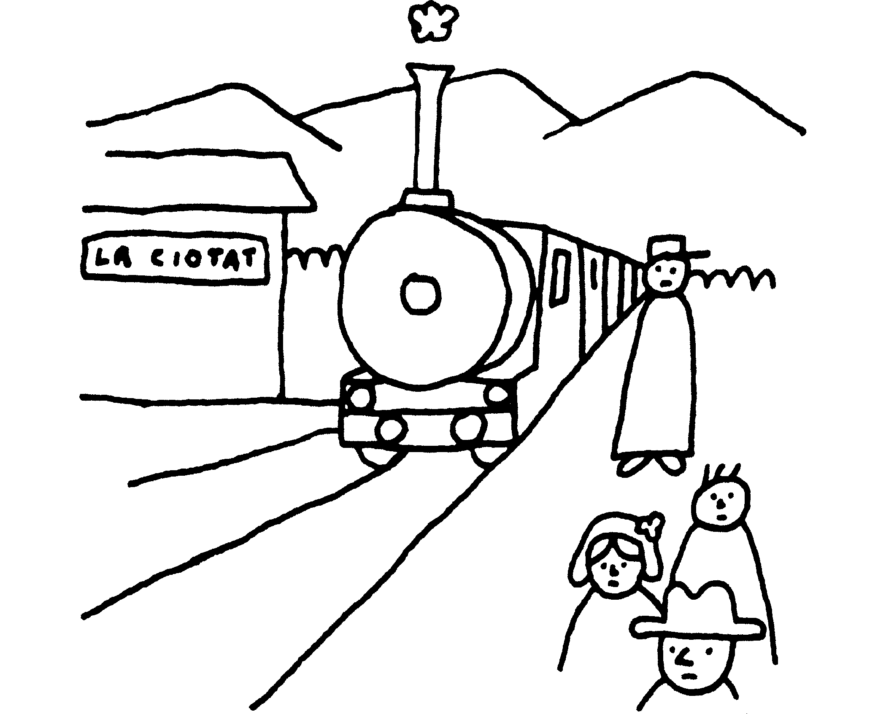
Peut être qu'il y en a parmis vous qui reconnaissent cette image, c'est L'Arrivée d'un train en gare de la Ciotat (1895). C'est un des tout premiers films de l'histoire du cinéma. Un film très court, à peine 50 secondes. Et qui raconte une histoire assez simple : L'histoire d'un train qui arrive en gare de la Ciotat.
La première projection de ce film elle a lieu à Lyon. Donc on est à la fin du 19e sciècle, la majorité des gens dans la salle n'ont jamais vu un film de leur vie, et quand ils voient le train arriver vers eux, ils paniquent, ils pensent que le train va les écraser, certains se mettent à hurler, d'autres se lèvent de leur siège et quittent la salle en courant.
L'histoire de cette projection elle est assez connue (il faut dire qu'elle est plutôt belle), mais elle est totalement fausse. Ces personnes voyaient bien un film pour la première fois de leur vie, mais déjà elles étaient dans un théâtre, tout le monde sait que dans les théâtres il n'y a pas de train, les trains c'est dans les gares. Et puis, il ne faut pas oublier que c'était un film muet, en noir et blanc. Et même si pendant un instant les spectateurs avaient réussi à oublier, qu'ils étaient dans un théâtre, que les trains ne sont pas muets, Et que le monde réel est en couleur, il faut bien voir un truc, c'est que l'arrivée du train elle est filmé depuis le quai.
Le point de vue du film c'est le point de vue de quelqu'un sur le quai. Est-ce que quand on est sur un quai de gare et qu'on voit un train arriver on panique ? Non, bien sûr que non. Pareil, quand vous avez vu ce dessin, est-ce que à un moment vous vous êtes dit : Au secour ! Le train va m'écraser !
? Non, la perspective est bien faite, c'est évident que le train va passer à votre gauche.
Il y a une histoire un peu pareil avec La Guerre des mondes de Welles. À ne pas confondre avec La Guerre des mondes de Wells ! La Guerre des monde de Wells c'est un roman, qui raconte l'invasion de la terre par les extraterrestres. Et La Guerre des monde de Welles c'est l'adaptation radiophonique, du roman de Wells.
Et donc Welles il est à la radio, en direct,
Et il va raconter l'histoire de la guerre des mondes de Wells,
Mais il a une idée qui est pas mal,
C'est qu'il va jouer le rôle d'un journaliste radio,
Qui averti la population de l'invasion des extraterrestres.
Sauf que les gens qui entendent ça chez eux,
Dessin : Peur
Ils y croient vraiment, il y a des gros mouvements de panique dans tout le pays,
Des accidents, des émmeutes, des sucides, etc.
Donc ça aussi c'est une histoire très connue,
Des décénies plus tard, des gens s'y sont interessé,
Ils ont fait des recherches
Et ils ont découvert que c'était totalemnt faux,
Quand on remonte à la source de la rumeur,
En fait il y a un type, qui a interrogé quelques auditeurs,
Le lendemain matin de l'emission,
Et la grande majorité lui dise qu'ils ont eu peur.
Mais ce que le type ne sait pas,
C'est que avoir peur, ça veut pas dire penser que c'est vrai.
C'est ce qu'on appelle la suspension volontaire de l'incrédulité.
En gros, quand on est face à une oeuvre de fiction,
On est capable de se prendre au jeu.
Et de ressentir des emotions comme si c'était réel,
Mais ça veut pas dire qu'on y croit vraiment.
Donc voilà, la panique du public de l'Arrivée d'un train en gare de la Ciotat,
Et la panique du public de la Guerre des mondes, c'est des légendes urbaines.
Comme le fait que les épinards sont riche en fer,
Comme le fait qu'on utiliserait seulement 10% de notre cerveau,
Comme le fait que Walt Disney aurait été criogénisé.
Moi j'ai vécu la plus grande partie de ma vie,
En pensant que j'étais dans un monde ou Walt Disney avait été criogénisé.
Et c'est très récement que j'ai découvert que c'était l'inverse :
Je vis dans un monde ou Walt Disney a été incinéré.
C'est fou les légendes urbaines... Moi j'adore ça,
Tout ce qui est histoires fausses j'adore,
Les histoires vraies ça m'ennuie un peu.
Les films qui sous-titre "inspiré d'une histoire vraie" ou "tiré de fait réel",
Ça me donne vraiement pas envie.
Mais les histoires fausses j'adore,
Et j'ai beaucoup de chance d'ailleur parce que raconter des histoires fausses,
Aujourd'hui c'est un peu mon métier.
Mais des fois je fais aussi ça sur mon temps libre.
Il y a un truc que j'adore c'est jouer un personnage annonyme.
Donc souvent je fais un employé de bureau,
Alors j'ai un déguisement chez moi, assez basique :
Chemise blanche costume bleu foncé, chaussures noires.
Et donc je sors dans la rue avec une saccoche d'ordi vers 7h du matin,
Et c'est génial parce que les gens ils pensent vraiment que je vais au bureau.
Et alors je m'assoie à l'abribus je met mon kit mains-libres,
Et je commence à faire une fausse discussion avec un collègue.
Et enfait, la personne à côté de toi, elle croit qu'elle est dans la vraie vie,
Mais en fait elle est au théâtre.
Et faut vraiment que l'histoire soit très banale,
Tes spectateurs ils assistent à une fiction,
Mais ils s'en rendent pas compte et ils en gardent aucun souvenir.
Et tout ceux qui ont déjà fait ce genre de truc pourront vous le dire,
C'est vraiment très jouissif d'insérer de la fiction dans le réel comme ça,
Et de troubler la frontière entre les deux.
///////////////////////////////////////////////////////////////:
Historiquement il y a des gens qui ont vraiment poussé ça très loin.
Homère par exemple, l'auteur de l'Illiade et l'Odyssée.
L'auteur des premières oeuvres de l'histoire de la litterature occidentale.
Il a eu un rapport tellement fort avec la fiction,
Que lui même il est devenu fictif !
Et on s'en est aperçu très tard en plus.
Que Homère c'était juste un personnage, comme Achille ou Ulysse,
Nouvelle page
Shéhérazade pareil, l'inventeuse du cliffhanger,
Qui était vraiment une conteuse virtuose :
Dessin : histoires imbriquées
Elle faisait un truc génial, elle racontais des histoires,
Dans les quelles les gens racontaient des histoires,
Et parmis ces histoires ils pouvaient y en avoir,
Ou les gens racontaient eux-mêmes des histoires, etc.
Bref, Shéhérazade, plus grande conteuse de tous les temps,
Est elle-même la personnage principale d'un conte, les 1001 nuits.
Vous voyez ce que je veux dire,
Quand je parle de personnes qui se sont tellement impliqué dans la fiction,
Qu'ils ont réussi à transformer leur existence même en fiction.
///////////////////////////////////////////////////////////////:
Nouvelle page
Moins connu, Ésope un esclave noir dans une cité grèque vers 500 av. J.C.
Il est connu parce qu'il a inventé un genre littéraire : la fable.
Et alors j'ai pas le temps de vous raconter sa vie aujourd'hui,
mais croyez moi, ou allez lire biographie sur Wikipedia.
Dessin : "Ésope"
Ésope, l'inventeur de la fable, sa vie, c'est une fable.
Et vraiment c'est frappant. Limite à la fin il y a une morale.
Ésope il a beaucoup inspiré De La Fontaine,
La moitiè des fables de De La Fontaine...
Je sais jamais si on doit dire,
"Les fables de la fontaine" ou "les fables de de la fontaine".
(Scarface c'est "Un film de De Palma" ou "Un film de Palma".)
Bref, de la fontaine, la moitié de ses fables,
Elles sont pompées sur le travail d'Ésope.
Et Ésope il a aussi inspiré Echiro Oda,
C'est lui qui a donné son nom à Ussop, le personnage de One Piece.
Dessin : Ussop
Ussop c'est vraiment un personnage super, en fait c'est en menteur,
Il a un long nez comme Pinnochio et tout,
Et il fait que raconter des mensonges depuis qu'il est enfant.
Mais en fait les lecteurs, les fans de One Piece, ils ont découvert un truc,
C'est que les mensonges qu'Ussop raconte depuis le début du Manga,
Ils finissent toujours par se réaliser,
Et c'est pas évident à remarquer quand tu lis la bd,
Parce que souvent c'est 50 tomes plus tards que ça se réalise,
Mais quand on te montre les exemples c'est evident.
Sinon Ussop dans les premières traductions il s'appelle Pipo,
Dessin : "Pipo"
"Pipeau" ça veut dire "mensonge", ça vient du Pipeau,
Dessin : Pipeau
C'est une flutte qui sert à mentir aux oiseaux, pour les atirer.
Dessin : Pipé
Ça a aussi donné "Pipé", des dés Pipés c'est des dés qui mentent.
Dessin : Pipe
Ça a aussi donné "Pipe" parce qu'une pipe ça ressemble un peu à une flutte.
Et du coup par extension, "pipe" ça peut aussi vouloir dire mensonge.
Et ça j'ai découvert ça recement et ça m'a totalement réconcilié avec Magritte.
J'étais très faché contre Magritte à cause de la trahison des Images,
Vous savez c'est ce tableau où il dessine une pipe,
Et dessous, il écrit "Ceci n'est pas une pipe".
En gros ce qu'on t'apprend dans les livres c'est que Magritte quand il dit,
"Ceci n'est pas une pipe", ce qu'il veut dire,
C'est qu'il y a une difference entre une pipe, et la représentation d'une pipe.
Mais moi je trouve ça se fait pas de dire ça.
Pour moi quand tu fais de la fiction, de la représentation,
Tu dois être à la fois convainquant et convaincu.
Pour moi ça c'est une pipe.
Et si tu est peintre et que dis le contraire,
C'est comme si tu es un magicien et que tu dévoile tes trucs,
Tu trahis les images, et c'est pas sympa pour les images.
Donc bref on était en mauvais termes avec Magrittes,
Enfin surtout moi j'étais en mauvais terme avec lui,
Lui il s'en foutais pas mal, il était mort.
Et la récement je lisais la définition de Pipeau dans le dictionnaire,
Puis je traine sur la page, je tombe sur "Pipe"
Et je m'aperçoit que "Pipe", ça signifie aussi mensonge,
Par exemple au Québec on dit : "Arrête de me raconter des Pipes".
Et moi je savais pas ça ! Mais en fait c'est évident :
"Ceci n'est pas une pipe" ça veut dire "Ceci n'est pas un mensonge",
Autrement dit ceci n'est pas une illusion, ce n'est pas qu'une représentation,
C'est vraiment une pipe !
Donc moi ce que j'adore avec Ussop, c'est qu'il rend le mensonge stylé.
Et on a besoin de ça.
Parce que je sais pas pourquoi,
Mais la plus part du temps c'est super mal vu de mentir.
Enfait on associe tellement le mensonge au mal,
Que des fois on en vient à confondre les deux.
Ça c'est très bien montré dans une scène de Mon Voisin Totoro.
Donc à un moment il y a Mei, (Mei c'est la petite qui a 4 ans),
Et sa grande soeur lui apprend,
Que sa mère ne va pas pouvoir sortir de l'hopital tout de suite,
Parce qu'elle est encore trop malade.
Et Mei elle se met à pleurer et elle cri "nan, c'est pas vrai !"
Et donc je croit pas que Mei pense que sa soeur lui ment.
Si elle dit "c'est pas vrai", c'est juste qu'elle confond le mensonge et le mal.
Et les adultes aussi ils font beaucoup ça.
Vous savez cette idée qui revient souvent que les politiques nous mentent.
Alors, en soit je suis d'accord, les politiques mentent souvent.
Mais est ce que c'est vraiment ça le problème ?
Moi en tout cas, mes adversaires idéologiques, mes adversaires politiques,
Je ne les considère pas comme mes adversaires politiques parce qu'ils mentent.
D'ailleur j'ai des alliés politiques qui mentent aussi.
Mes adversaires politiques, ce sont mes adversaires,
Parce que je ne suis pas d'accord avec eux quand ils sont sincères.
C'est comme la publité,
Il y a une tradition dans la critique de la publicité,
Qui est de se concentrer sur la publicité mensongère.
Mais je pense que c'est une très mauvaise idée,
Si on veut construire une critique radicale de la publicité.
Parce que la publicité en fait, souvent elle dit la vérité,
Et c'est quand elle dit la vérité qu'elle est vraiment efficace et dangereuse.
Moi j'aimerai bien, si on peut, qu'on arrive à détacher,
La question du mensonge de la question morale.
Et du coup pour ça,
Je pense qu'il faut qu'on redéfinisse clairement ce que c'est le mensonge.
Et on va voir que ça n'a rien à voir avec le bien et le mal.
Nouvelle page
Donc, on va prendre un exemple d'un fait,
Sur le quel a peu près tout le monde est d'accord,
Mais pas totalement tout le monde non plus.
Je propose le fait que des humains sont allé sur la lune.
Dessin : lune
Est-ce que il y a des gens ici,
Qui croient ou qui savent qu'on est jamais allé sur la lune ? (ifop 12%)
Vous pouvez le dire je vous jugerai pas,
L'apolloscepticisme, pour moi,
C'est une théorie du complot vraiment pas pire qu'une autre,
Je préfère largement ca a qu'on me dise ça plutôt qu'on me dise,
Qu'on croit à la théorie du grand remplacement ou je sais pas quoi.
Dessin : Vérité
Bon, moi je pense qu'on est allé sur la lune,
Et quand j'en parle, c'est ce que je dis,
je dis : Des hommes sont allés allés sur la lune, une douzaine
tous américains les premier Neil Amstrong et Buzz Aldrin en 1969, les derniers en 1972
Dessin : Mensonge
Imaginons maintenant quelqu'un qui, comme moi, pense qu'on est allé sur la lune,
Mais qui, pour une raison ou pour une autre, par exemple, pour rigoler,
Dit qu'on est pas allé sur la lune.
Ça c'est un mensonge contrairement à l'ennoncé précédent qui est une vérité.
Dessin : Contrevérité
Maintenant prenons quelqu'un qui pense qu'on est pas allé sur la lune,
Et qui répète à qui veut bien l'entendre qu'o est pas allé sur la lune,
Il ne dit pas la vérité, ce qu'il dit est faux,
Mais ce n'est pas non plus un mensonge, car c'est sincère.
C'est ce qu'on appelle une contrevérité.
Dessin : Contremensonge
Dernier exemple, quelqu'un qui pense qu'on y est pas allé dit qu'on y est allé.
Ce n'est pas un mensonge car c'est vrai,
Mais ce n'est pas une vérité car c'est pas sincère.
c'est un contremensonge
Alors qu'est ce qu'on remarque sur ce schéma.
Pour définir la modalité d'un ennoncé,
Par exemple, pour déterminer si c'est un mensonge,
On a besoin de 3 informations :
Ce que la personne dit, ce qu'elle pense, Et le monde dans le quel on est.
Ce troisième paramètre est important.
Supposons qu'on soit dans un monde ou personne n'est jamais allé sur la lune.
Dessin : X sur la lune
Pourquoi pas, ce serait possible,
D'ailleur c'est ce qu'on appelle "un monde possible" (on va y revenir).
Alors ça changerait la modalité de chaque ennoncé.
Dessin : changer les modalités
Nouvelle page
Donc les mondes possibles faut en parler parce que c'est une idée très belle.
Dessin : monde réel
En gros il y a le monde réel, celui dans lequel on est.
Dans ce monde il y a, je sais pas moi, des verre,
Dans ces verre il peut y avoir de l'eau,
Quand on boit dans le verre, le niveau de l'eau diminue,
Je ne vous apprend rien
Vous connaissez ce monde aussi bien que moi vous aussi vous vivez dedans.
Mais on peut très bien imaginer un autre monde,
Dessin : monde possible
Qui peut etre très different du notre. Ou bien plutôt ressemblant.
Par exemple disons que dans ce monde il y aussi des verres d'eau,
Mais quand on boit le niveau de l'eau augmente.
Et donc ce monde, c'est un monde possible,
Dans le sens ou c'est possible de l'imaginer.
Et pas la peine de comprendre comment il fonctionne,
Et par quelles lois physiques il est régit,
Pour pouvoir dire que c'est un monde possible.
Et alors ce qui est super c'est qu'il y a des ponts entre les mondes.
C'est à dire que à l'interieur du monde réel on peut imaginer le monde possible.
On s'imagine voilà on est dans ce monde et on boit de l'eau,
et au fur et a mesure qu'on boit, le niveau de l'eau monte,
et à un moment ça devient vraiment plein,
et donc on s'arrête avant de s'en mettre partout,
et on va vider un peu l'eau dans une gourde, pour pouvoir continuer à boire.
C'est Leibniz qui a eu cette idée à la base. L'idée des mondes possibles.
Et alors selon Leibniz, le monde dans le quel on vit il a été choisi par Dieu,
parmis l'infinité des mondes possibles.
Et vous savez comment il a choisi ce monde Dieu selon Leibniz ?
Parce que c'était le meilleur de tous.
Franchement,
Pour penser qu'on vit dans le meilleur de tous les mondes possibles,
Faut être très privilégié, ou vraiment avoit confiance en Dieu.
Pour Leibniz je pense que c'est un peu les deux.
Bon moi je pense pas qu'on est dans le meilleur des mondes possible, Loin de là.
Mais le monde dans lequel on est il a quand même quelques avantages,
Par rapport à d'autres mondes possibles qu'on pourrait imaginer.
////////////////////////////////
Et un des avantages pour moi, c'est que dans notre monde,
Il existe des outils, qui, comme on l'a montrer,
Nous donnent accès aux autres mondes possibles.
Des outils comme le mensonge, l'imagination, la fiction,
La suspension volontaire de l'incrédulité,
Quand je regarde un film, quand on me raconte un mensonge,
J'accède à un autre monde, un monde possible.
Et on peut très bien s'imaginer des mondes où ils y a pas ça.
Par exemple si ça se trouve ce monde possible en fait,
Ils ont pas l'imagination. Ils ont pas accès aux autres mondes possibles.
Ils pensent que leur monde, c'est le seul monde possible
Donc même si le monde dans le quel on est n'est pas parfait,
On a quand même la chance d'avoir accès aux autres mondes possibles,
Si on y avait pas accès, non seulement on s'ennuierai beaucoup,
Mais on aurait aucun moyen de se rendre compte,
Que le monde dans le quel on est n'est pas parfait.
La conférence Les mondes possibles a été écrite à Toulouse en septembre 2022, sur invitation du Quai des Savoirs
De ce qui provoque l'étonnement à ce que l'étonnement provoque
Enfant j'ai eu ma période Gustave Eiffel où j'étais pas mal fasciné par le personnage et tout ce qu'il avait réussi à construire. Le pont-canal à Briare, bien sûr (magnifique) et puis aussi la tour Eiffel.
Et je me souviens qu'un jour, lors d'une discussion avec un adulte, j'ai compris qu'en fait ce n'était pas Gustave Eiffel qui avait construit la tour Eiffel ! Alors évidement, vous vous le savez parce que vous n'êtes plus des enfants. Mais moi à l'époque je me souviens que ça m'avait vraiment étonné d'apprendre qu'en fait c'étaient des ouvriers qui avaient construit la tour Eiffel. Et que Gustave lui, en gros, il n'avait rien fait. Il les avait regardés travailler.
Pourquoi ça m'a étonné ? Simplement parce que j'avais une certaine vision du monde : La vision d'un monde dans lequel Gustave Eiffel avait construit la tour Eiffel seul, à la force de ses bras. Et cette conversation est venue bouleverser cette vision du monde : En vérité Gustave Eiffel il n'avait pas planté le moindre rivet.
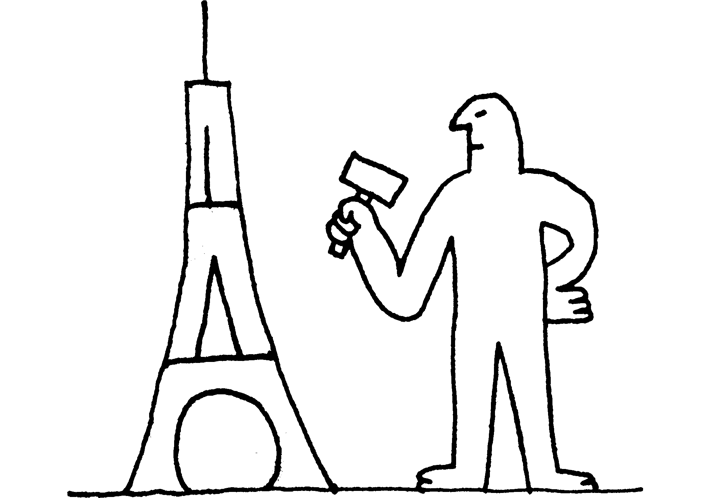
Et l'étonnement en fait c'est ça. C'est un phénomène qui vient bouleverser ta vision du monde.
D'ailleurs, c'est précisément pour ça que les enfants ont tant de facilité à s'étonner. Parce que tout est nouveau pour eux, n'importe quoi peut bouleverser leur vision du monde. Jusqu'à un certain âge on est capable de s'étonner de littéralement n'importe quoi. Il y a un âge où on peut s'étonner du fait qu'un bâton soit un bâton, ou on peut s'étonner qu'un objet tombe quand on le lâche. Il y a un âge où même une flaque d'eau peut bouleverser notre vision du monde.
Cette notion d'inattendu qu'on vient d'évoquer (La rencontre avec quelque chose qu'on ne s'attendait pas à pouvoir rencontrer dans le monde tel qu'on l'imaginait) elle est très importante pour créer de l'étonnement, mais elle n'est pas suffisante. S'il n'y a que de l'inattendu, ça crée juste de la surprise. Pour avoir de l'étonnement il faut quelque chose de plus.
Quand j'avais 5 ans on est allé au Parc Astérix. Et dans ce parc d'attraction il y a quelque chose de vraiment très étonnant : c'est une poubelle qui parle.
C'est une poubelle avec un visage. On peut lui mettre des déchets dans la bouche. Et elle parle, il y a deux phrases qu'elle n'arrête pas de répéter en boucle : J'ai faim !
et Du papier…
Je me souviens que les enfants et même les adultes qui étaient avec moi ce jour-là ils voulaient faire les manèges, les montagnes russes, et je ne sais pas quelles autres attractions il y avait. Mais moi je n'avais vraiment d'yeux que pour la poubelle qui parle. D'ailleurs aujourd'hui c'est à peu près la seule chose que j'ai retenue de cette journée au Parc Astérix.
Et donc bien-sûr que c'est surprenant une poubelle qui parle, c'est inattendu. Surtout que moi, toutes les poubelles que j'avais vues jusque-là, elles étaient muettes. Mais, au-delà de cette surprise, ça m'a surtout posé plein de questions : tout le monde n'arrête pas de la nourrir toute la journée, comment ça se fait qu'elle ait toujours aussi faim ? Est-ce que les autres poubelles, les poubelles qui ne parlent pas, pensent la même chose que ce que cette poubelle a la chance de pouvoir dire à voix haute ? Comment cette poubelle peut-elle aimer les déchets sachant que par définition un déchet c'est ce dont personne ne veut, ce que personne n'aime ? Est-ce que si on s'intéresse à un déchet, le déchet cesse d'être un déchet ? Ou est-ce que s'intéresser à un déchet ça fait juste de nous une poubelle ?
Et c'est ça le propre de l'étonnement, ce qui différencie l'étonnement de la surprise : l'étonnement ça nous pose question.
D'ailleurs, c'est précisément pour ça que beaucoup de philosophes depuis Aristote disent que l'étonnement c'est la source de la philosophie. Que c'est l'étonnement qui amène les philosophes à philosopher. Tout simplement parce que l'étonnement, c'est ça qui nous fournit les questions importantes.
(Petit aparté rapidement parce que c'est quand même fou quand on y pense : on a vu que pour faire de la philosophie il fallait être capable de s'étonner, on a vu que les personnes les plus aptes à s'étonner c'étaient les enfants. Alors pourquoi à l'école les cours de philosophie ne commencent qu'une fois que l'enfance est terminée ? Ça n'a pas trop de sens.)
Moi j'habite dans une grande ville, du coup j'ai la chance de pouvoir souvent observer la réaction des enfants qui découvrent des escalators pour la première fois. C'est un étonnement très fort que vit l'enfant à ce moment-là. Parce qu'il faut bien comprendre que l'enfant il a déjà vu des escaliers dans sa vie. Mais jusqu'ici il envisageait la relation personne-escalier comme une relation de fixité-mouvement dans laquelle l'escalier était fixe et la personne était en mouvement.
Alors bien sûr que la rencontre avec l'escalator c'est un peu magique. Parce que d'un coup cette vision du monde se retrouve renversée. Ici c'est l'escalier qui est en mouvement et la personne qui est immobile.
Cet étonnement va donc provoquer plein de questions. Des questions aussi simples que : que se passe-t-il si on prend l'escalator à contre-sens ? La relation de fixité-mouvement peut-elle aussi s'inverser chez d'autres objets avec lesquels on entretient une relation de fixité-mouvement ? Et des questions plus compliquées comme : que deviennent les marches une fois qu'elles arrivent en haut ? D'où proviennent les marches qui apparaissent en bas ? Est-ce que ce sont les mêmes marches ? Peut-être, peut-être pas (ça parait quand même peu probable…).
On retrouve donc les deux caractéristiques, les deux temps de l'étonnement : La rencontre avec un phénomène qui vient bouleverser notre vision du monde et l'avalanche de questions qui s’ensuit. Mais ce qu'il faut préciser c'est que l'enfant il n'a pas forcément conscience de tout ça. Il n'est pas forcément capable d'expliquer en quoi cette rencontre a bouleversé sa vision du monde. Et il n'est pas forcément capable de formuler précisément toutes les questions que ça lui pose. Lui il est juste étonné. Et c'est pas parce que c'est un enfant ! Moi-même il y a plein de choses qui m'étonnent et je suis incapable d'expliquer pourquoi. Comme par exemple quand quelqu'un dans la rue appelle par son prénom quelqu'un qui a le même prénom que moi. Ou quand je ramasse un caillou et que le visage du caillou me semble super familier. Ou même tout simplement se tromper de porte. Les sacs plastiques qui volent. Un très grand chien. Quand j'ai l'impression que mon train part alors que c'est juste le train d'en face qui arrive en gare.

Vous connaissez cette sensation je pense. Quand on est en gare dans son train et qu'on a l'impression que le train démarre alors que c'est juste le train qu'on voit par la fenêtre qui arrive en gare. Maintenant que j'y pense c'est une histoire d'inversion de la relation fixité-mouvement comme pour l'escalator : J'avais une certaine vision du monde dans laquelle mon train était en mouvement et le train d'en face était fixe. Et cette vision du monde s'est retrouvée bouleversée quand j'ai compris que c'était mon train qui était fixe et l'autre qui était en mouvement.
Et du coup forcément quand mon train démarrera pour de bon, je ne pourrai pas m'empêcher de me demander : est-ce que c'est vraiment mon train qui part ou est-ce que ce n'est pas plutôt le paysage qui arrive en gare ?

Les paysages ce sont des sources d'étonnement très célèbres et qui peuvent provoquer des étonnements très intenses. J'ai pu en faire l'expérience il y a quelques mois, j'étais en Lozère, en voiture. À un moment la route sort d'une forêt et là on tombe sur un paysage vraiment incroyable. C'est en amont d'un petit village qui s'appelle Saint-Énimie. Et c'est très étonnant comme étonnement parce qu'on est face à quelque chose d'immense donc on se sent un peu tout petit, mais en même temps, tout ce qu'on voit, toutes les maisons, les arbres, tout est minuscule, du coup on se sent aussi géant.
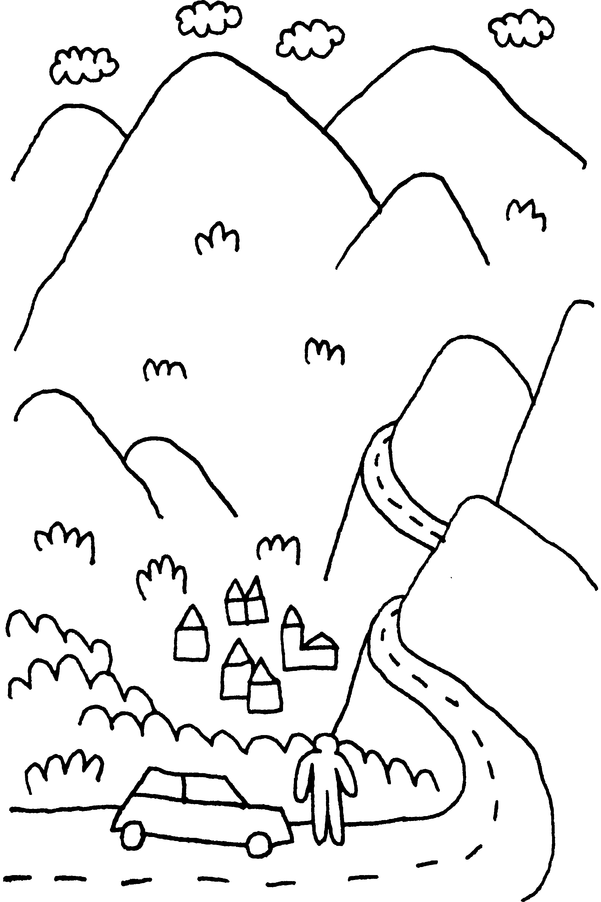
C'est très dangereux parce que c'est une route de montagne donc très étroite et tortueuse, et comme tout le monde est sous l'emprise de l'étonnement les gens ne regardent pas devant eux. Des fois même il y en a qui s'arrêtent au milieu de la route et qui quittent leur voiture pour s'étonner du paysage. Donc il faut un peu slalomer comme ça, entre des gens à moitié ébahis.
Les nuages aussi c'est une source d'étonnement que j'aime beaucoup. En fait ce que je trouve le plus étonnant chez les nuages, c'est la faculté qu'ils ont à ne pas avoir de forme.
Évidemment quand on dessine un nuage comme ça, il a une forme (une forme de nuage). Mais on est d'accord que c'est une forme fictive. En réalité, aucun nuage ne ressemble à ça, tout simplement parce qu'un nuage, par définition, ça n'a pas de forme. D'ailleurs des fois des personnes trouvent des formes aux nuages, on va te dire Oh ! Regarde ce nuage, il a une forme de cœur !
et on va vouloir que tu t'étonnes de ça. Mais moi j'ai beaucoup de mal à m'étonner de ce genre de choses. Parce que justement, ce que je trouve étonnant chez un nuage, c'est le fait qu'il n'ait pas de forme.
Attention, je ne dis pas que ces personnes ont tort de s'étonner de ça, chacun s'étonne de ce qu'il veut. Ce que je veux dire c'est que parfois les choses les plus étonnantes ce ne sont pas celles qu'on imagine. Je m'explique :
Je pense que vous connaissez ce dicton, c'est assez connu. Quand le sage montre la lune, l'imbécile regarde le doigt
. Souvent cette phrase elle est attribuée à Confucius. Ce qu'il faut savoir avec les phrases de Confucius, c'est que ce sont rarement des phrases que Confucius a véritablement dites ou écrites. C'est un peu comme les citations d'Einstein. En fait Confucius et Einstein c'est juste des mots qu'on ajoute arbitrairement à la fin des phrases quand on veut leur donner l'air intelligent. Parce qu'en effet, quand on me dit que c'est Confucius qui a dit ça, comme je sais que Confucius était sage, je suis un peu obligé d'y croire, de me dire que le sage de l'histoire est vraiment sage, que c'est vraiment sage de montrer la lune et vraiment imbécile de regarder le doigt. Mais comme je viens de le dire, ce n'est pas Confucius qui a dit ça, en fait on ne sait pas qui a dit ça, si ça se trouve, celui qui a dit ça n'était pas sage, peut-être même que c'était un imbécile, qu'il a mal interprété la situation. Peut-être qu'en fait c'était l'imbécile qui montrait la lune et le sage qui regardait le doigt.
En fait, là où je veux en venir, c'est qu'il y a des choses desquelles il est bon ton de s'étonner. Comme par exemple (typiquement) la lune. La lune c'est beau, c'est grand, ça brille, c'est rond, c'est un peu parfait, un peu inaccessible, c'est unique, ça mérite notre étonnement. Alors qu'un doigt… C'est pas très beau, c'est un peu vulgaire, et puis c'est banal (tout le monde en a des dizaines), c'est pas intéressant. Sauf que selon moi, ce qui est banal c'est de s'étonner de la lune. S'étonner d'un doigt, ça c'est original, ça c'est puissant intellectuellement. On a tendance à penser que les choses étonnantes nous étonnent car elles sont merveilleuses et extraordinaires, mais le plus souvent c'est l'inverse, c'est parce que les choses nous étonnent qu'elles sont merveilleuses et extraordinaires.
La conférence De ce qui provoque l'étonnement à ce que l'étonnement provoque a été écrite à Mende en septembre 2023, sur invitation des Scènes Croisées de Lozère
Les objets respirent aussi

Pendant longtemps dans ma chambre j'avais une petite figurine que j'aimais bien. C'était un petit personnage qui dansait, avec une tête d'éléphant. Je pense que ça devait être une fève de galette des rois.
Et c'était très étrange parce que dès que je le regardais, il arrêtait de danser.
(C'est pas évident à expliquer.) Je savais qu'il dansait quand je ne regardais pas ou que je n'étais pas dans la chambre, mais j'avais jamais pu le voir, parce que dès qu'il était dans mon champ de vision il s'immobilisait. Et j'ai beaucoup essayé, par tous les moyens, de l'observer en train de danser. Pas pour me prouver quoi que ce soit, parce que encore une fois, j'avais pas besoin de preuve je savais qu'il dansait quand j'avais le dos tourné. J'avais pas besoin de preuve, mais c'est juste que voilà, il était tellement rigolo quand il dansait que je voulais juste le voir quoi, au moins une fois.
J'ai tout essayé, je me suis caché, j'ai essayé de loin avec des jumelles, par le trou de la serrure. Je me souviens avoir essayé de l'observer à travers un miroir.

Et j'ai mis du temps à comprendre qu'aucun de ces stratagèmes ne pouvait marcher, que ça ne servait à rien de se cacher. Que s’il s'immobilisait quand je l'observais, c'était pas parce qu'il savait que je le voyais, c'était le fait même de le voir qui l'immobilisait. Et aucune ruse, aucune technique, aucune technologie ne pourrait jamais me permettre de regarder quelque chose sans le voir. Comme dit Heisenberg :
On ne peut observer le monde sans intervenir dessus,
La séparation entre l'objet et l'observateur est arbitraire.
C'est un peu comme la lumière du frigo. Tout le monde sait que la lumière du frigo est éteinte quand sa porte est fermée. Pourtant, personne ne peut prétendre avoir déjà observé ce phénomène. Tout simplement parce que, de par sa nature, on ne peut observer l'intérieur du frigo que quand la porte est ouverte.
Et donc comme je disais, tout ça je l'ai compris assez tard. Je l'ai pas compris grâce à Heisenberg, parce que j'ai entendu parler beaucoup plus tard de ses travaux, des débats entre lui et Bohr d'un côté, Einstein et Schrödinger de l'autre, et de tout ce qui concerne l'interprétation de Copenhague. Non moi tout ça, je l'ai compris quand j'ai vu Toy Story 1.
Parce que Toy Story ça parle de ça en fait, c'est l'histoire de jouets qui s'animent et vivent leur vie quand l'enfant n'est pas dans la chambre. Et dès que l'enfant revient, plus personne ne bouge. Et donc dans Toy Story 1, l'enfant reçoit un nouveau jouet pour son anniversaire, un jouet qui s'appelle Buzz L'Éclair. Et sa particularité (c'est très important) c'est que, contrairement aux autres jouets, lui il ne sait pas qu'il est un jouet. Il pense qu'il est vraiment un ranger de l'espace.
Et pourtant, alors qu'il ne sait pas qu'il est un jouet, dès que l'enfant rentre dans la chambre, Il se fige, comme les autres jouets ! Alors ça c'est un peu le grand mystère de Toy Story. Souvent résumé par la question : Why does buzz freeze ?
(En français : Pourquoi buzz se fige
). C'est la question qui est au cœur de la plupart des théories sur l'univers de Toy Story. Et même si je n'ai pas la réponse à cette question (pas plus que n'importe qui), je trouve que la question en elle-même permet d'y voir plus clair : Jusque-là, on pouvait penser que les jouets se figeaient, pour que l'enfant ne sache pas qu'ils étaient vivants. On pouvait penser que c'était un acte intentionnel, conscient. Mais le fait que Buzz se fige aussi alors qu'il ne sait pas qu'il est un jouet, ça nous prouve le contraire. Et ça rejoint cette idée que j'évoquais à l'instant : les objets sont inanimés quand on les regarde, pas parce qu'ils ne veulent pas qu'on les voit s'animer, mais simplement parce qu'on les voit.
Bon voilà, je suis désolé c'est un peu subtil tout ça. Mais ce qui est important à retenir c'est que souvent, c'est en l'absence des humains que les objets prennent vie. Et d'ailleurs c'est paradoxal parce que c'est aussi grâce aux humains que les objets prennent vie ! Et ça, j'avais pas prévu d'en parler mais c'est un peu le thème de Toy Stroy 2.
Dans Toy Story 2 il y a toute une séquence qui se passe dans un magasin de jouets. Et on y découvre que les jouets neufs ne sont pas vivants. Dans ce magasin, les seuls jouets qui sont vivants c'est des modèles d'exposition, des jouets qui ont donc déjà été sortis de leur boite, manipulés, qu'on a mis en scène… Et donc, sans que ce soit dit explicitement, avec cette séquence on comprend que c'est les humains qui donnent vie au jouet. Un jouet devient vivant à partir du moment où un humain joue avec lui.
Et alors Toy Story 2 c'est non-seulement le film où on comprend comment les jouets deviennent vivants, mais c'est aussi le film où on entrevoit pour la première fois comment ils peuvent cesser d'être vivants. Et encore une fois c'est pas dit directement. Mais l'intrigue principale de cet opus c'est que Woody (un autre jouet, le personnage principal de la saga avec Buzz) il se voit offrir l'opportunité de devenir un jouet de collection dans un musée.
Et tout l'enjeu pour Woody, ça va être de lutter contre la tentation de devenir une pièce de musée. Parce que évidemment quand un jouet devient un objet de collection, il cesse d'être un jouet.
C'est un peu, aussi, la thèse de Les statues meurent aussi. Les statues meurent aussi c'est un film des années 50 qui parle des statues de l'art traditionnel africain qui ont été pillées pour être exposées dans les musées européens. Et donc le film explique que quand l'Europe a colonisé l'Afrique on a non seulement tué beaucoup de gens, mais on a aussi tué des statues. Et les statues on les a tuées, pas en les détruisant, mais en les mettant dans des musées. La première phrase du film c'est :
Quand les hommes sont morts ils entrent dans l'histoire,
Quand les statues sont mortes, elles entrent dans l'art.
Et d'ailleurs dans les statues meurent aussi, ils parlent du lien qu'il y a entre la mort des statues et la notion de communication. À un moment la voix off elle dit : Colonisateurs du monde, nous voulons que tout nous parle, et ces statues-là sont muettes.
Et ça c'est très intéressant, parce que, en effet, le fait de pouvoir ou non communiquer avec quelque chose, c'est un très bon indicateur pour savoir si cette chose a une conscience.
On l'a vu, tous les objets ne sont pas vivants. Tous les objets ne sont pas conscients. Mais les objets qui le sont, c'est souvent que d'une certaine manière, on communique avec eux. Souvent c'est des formes de communications non verbales, Comme par exemple quand on dit d'une vieille théière qu'elle raconte une histoire
(C'est pas une histoire qu'elle raconte avec des mots). Mais, ça arrive aussi qu'on parle carrément aux objets à voix haute.
Alors moi ce que j'ai le plus souvent observé c'est des gens qui parlent à leur voiture. Et d'ailleurs j'ai remarqué que à chaque fois, quand une personne parle à sa voiture, c'est parce que la voiture ne fonctionne pas correctement. La phrase typique c'est de dire à la voiture : allez s'il te plaît démarre
.
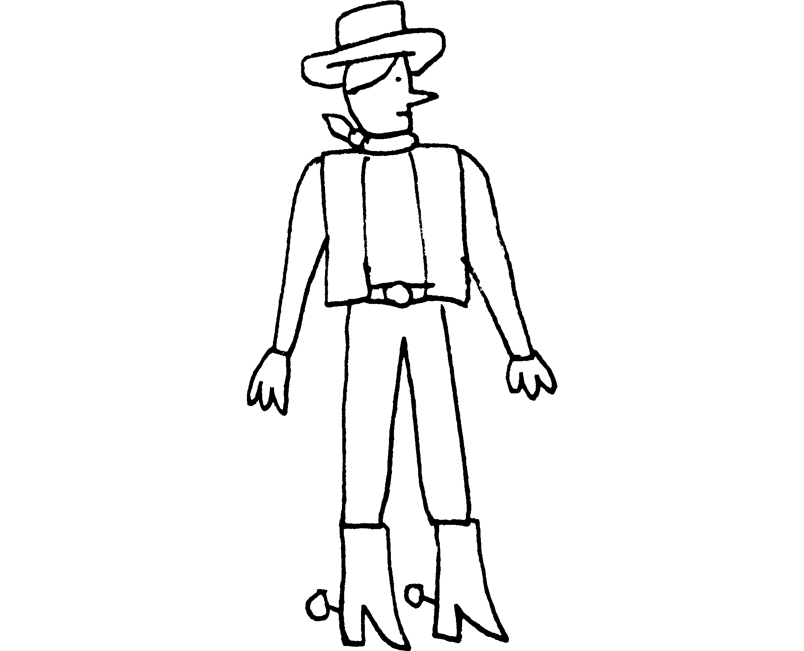
Et en fait, je ne trouve pas ça très gentil. Parce que tous les jours où ta voiture te conduit là où tu veux, tu l'ignores totalement, même pas un petit merci. Et comme par hasard c'est le jour où elle n'arrive pas à démarrer que tu daignes lui adresser la parole. Mais en fait, je ne veux pas donner de leçon, mais peut-être que ta relation avec ta voiture elle irait mieux si vous vous parliez aussi quand ça va bien.
Une voiture, on a l'impression que les moments où elle est vivante, libre, c'est quand elle ne fonctionne pas. Et c'est vrai pour plein d'autres objets, on leur attribue du libre arbitre, seulement quand ils décident de désobéir et d'en faire qu'à leur tête. De ne pas faire ce qu'ils sont censés faire. Et c'est étrange parce que en vrai je pense que les voitures par exemple, ce qu'elles préfèrent faire, c'est rouler. Pas être en panne ! Et c'est un détail mais ça, ça me fait trop penser à un dialogue dans Toy Story 3.
En fait dans Toy Story, il y a un truc très étrange :
Les jouets ils sont libres de faire ce qu'ils veulent quand les humains sont pas là. Alors on pourrait penser que ce qu'ils préfèrent c'est quand les humains ne sont pas là. Et pourtant, au contraire, les jouets n'ont toujours qu'une chose en tête : ils veulent qu'on joue avec eux. Leur plus grande peur c'est d'être abandonnés ou perdus par leur enfant. Et à chaque opus de la saga, ils remuent ciel et terre pour qu'on puisse continuer de jouer avec eux.
C'est étrange non ? Pourquoi les jouets aiment tellement qu'on joue avec eux ? Eh ben la réponse à cette question elle m'est apparue dans Toy Story 3. À travers un tout petit détail dans un dialogue. Donc, dans cet épisode, l'enfant à qui appartient Woody a grandi, il va rentrer à la fac. Et à un moment Woody discute avec un jouet qu'il vient de rencontrer. Et ce jouet demande à Woody : Depuis combien de temps tu n'as pas joué avec un enfant ?
Il ne demande pas Depuis combien de temps un enfant n'a pas joué avec toi ?
mais depuis combien de temps tu n'as pas joué avec un enfant ?
. Moi quand j'ai entendu ça, ça m'est apparu clairement. Les jouets n'aiment pas tellement qu'on joue avec eux, ce qu'ils aiment c'est jouer avec nous ! Alors en soi c'est la même chose, mais ce qui est important c'est que de son point de vue, le jouet il joue. Et les jouets ils aiment jouer, c'est des jouets ! C'est comme (je sais pas moi), c'est comme les valises, elles aiment voyager.
Je ne sais pas si vous êtes au courant du nombre de valises qui partent en voyage sans leur propriétaire, mais les chiffres sont incroyables. On parle de dizaines de valises arrêtées chaque jour en France, rien que dans les trains et dans les gares. Et on estime qu'il y en a au moins le triple qui parviennent à voyager jusqu'à leur destination sans se faire arrêter par la police. Alors au début on croyait que c'était les gens qui oubliaient leur valise, mais là je sais pas si vous avez vu, récemment la SNCF a dévoilé une étude comme quoi plus de 80% de ces bagages n'ont pas de propriétaire !
Bon et des exemples d'objets (comme ça) qui de manière autonome s'animent pour faire ce pour quoi ils ont été conçus, il y en a plein. Par exemple, vous avez peut-être déjà eu la chance de voir un livre oublié sur un banc qui se lisait tout seul.
Ou d'entendre une porte laissée ouverte qui se fermait toute seule.
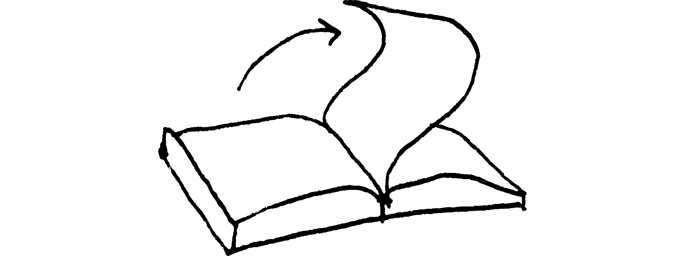
Et alors vous allez me dire (enfin, vous allez peut-être pas directement me dire, parce que là je ne suis pas à côté de vous, mais en tout cas vous allez peut-être penser, ou vous retenir de me dire) que la porte qui se ferme toute seule et le livre qui se lit tout seul, c'est pas vraiment des objets vivants. Que c'est grâce au vent ou à un courant d'air, qu'ils s'animent. Et alors je vous répondrais que vous avez bien fait de vous retenir de le dire, parce que c'est un argument qui tient pas trop la route :
En effet, sans air ces objets ne s'animeraient pas. Mais nous les humains sans air, on ne s'animerait pas beaucoup non plus. Et est-ce que vous diriez d'un humain qu'il n'est pas vraiment vivant parce que s'il était privé d'air il ne bougerait pas ? Non. Parce que les humains on est comme les livres et les portes, C'est l'air qu'on respire qui nous permet de nous animer.
Là j'aimerais faire une petite parenthèse parce que c'est intéressant cette histoire d'air :
Depuis tout à l'heure on parle d'objets qui s'animent. Et en fait il s'avère que le verbe s'animer il vient du latin anima et justement anima ça veut dire l'air, le souffle ! Et d'ailleurs anima en français ça a aussi donné le mot âme. C'est pour ça que pour parler des objets qui s'animent, Vous entendrez aussi parfois parler d'objets qui ont une âme (c'est la même chose).
L'idée d'attribuer une âme aux objets ça ne date pas d'hier. C'est une idée à peu près aussi ancienne que l'idée même d'objets. Le plus vieil objet connu qui a une âme c'est le galet de Makapansgat, c'est un manuport et il a 3 millions d'années (c'est énorme). Et dans l'histoire récente, l'idée des objets qui ont une âme, ça a beaucoup été popularisé par Lamartine. Parce qu'il a une punchline qui est relativement célèbre dans un de ces poèmes :
Objets inanimés avez-vous donc une âme,
Qui s'attache à notre âme et la force d'aimer ?

C'est dans un texte où il parle de l'endroit où il a grandi. Et il décrit l'affection qu'il éprouve pour chaque banc, chaque arbre, chaque mur. Et que c'est étrange parce que c'est juste des objets, mais il les aime comme si c'était des personnes. Et il décrit aussi tous ces objets un par un (il est super long ce poème).
Et d'ailleurs il y a une anecdote qui est drôle, c'est qu'à un moment parmi tous les objets qu'il aime beaucoup il parle d'un lierre qui pousse sur un mur (on voit que c'est un lierre qui l'a marqué parce qu'il en parle quand même pendant une petite dizaine de vers). Et un jour la mère de Lamartine elle lit ce poème. Et elle, elle habite encore là-bas. Et en lisant le poème elle est très gênée parce que le lierre en question en fait il n'existe pas, il n'a jamais existé, Lamartine l'a inventé. Et comme elle ne veut pas que son fils soit un menteur, quelqu'un qui raconte n'importe quoi dans ses poèmes, elle va elle-même planter un lierre à l'endroit où c'est écrit dans le poème !
Et moi du coup je me demande sincèrement, est ce qu'on peut considérer le lierre planté par la mère qui pousse aujourd'hui sur le mur, c'est le même lierre que celui qui est décrit dans le poème ? Parce que si le poème avait été inspiré par le lierre ce serait évident, mais là c'est le lierre qui a été inspiré par le poème.
Alors peut-être c'est à la fois le même lierre et pas le même lierre. Pourquoi pas. C'est pas du tout un problème. Un objet peut très bien être à la fois quelque chose et son contraire. Ça arrive tout le temps. Par exemple : un objet peut à la fois être un objet perdu et un objet trouvé.
Si par exemple tu perds tes clés et que quelqu'un les trouve, pour toi ces clés seront perdues, et pour l'inventeur les clés seront trouvées. (inventeur ou inventrice c'est comme ça qu'on appelle la personne qui trouve un objet, dans les textes juridiques).

Ces clés sont à la fois perdues et trouvées, elles sont à la fois une chose et son contraire. Parce qu'en fait, ce qui fait qu'un objet est ce qu'il est, c'est le regard qu'on porte sur lui. C'est notre regard qui le définit qui lui donne un contour, qui le conceptualise.

Ce qui fait (par exemple) que tel bout de tissu une chaussette droite ou une chaussette gauche ; une chaussette perdue, une chaussette qui s'est cachée, une chaussette qui s'est enfuie, une chaussette orpheline ou une chaussette retrouvée ; un objet qui a une âme ou un objet qui n'a pas d'âme ; un souvenir, une cachette, un chiffon, un déchet ou une marionnette, c'est pas inscrit en lui, ça vient de nous.
Voilà juste pour finir j'aimerais faire une dernière petite parenthèse parce que cette question de qu'est-ce qui fait qu'un objet est ce qu'il est c'est brillamment abordé dans Toy Story 4.
Dans Toy Story 4, il y a une petite fille qui s'appelle Bonnie. Et à un moment elle joue avec une vieille fourchette en plastique trouvée dans une poubelle, et dès qu'elle joue avec, la fourchette devient un jouet, et elle prend vie, comme les autres jouets. Et ça c'est vraiment une super idée je trouve. Parce que non seulement ça enrichit vraiment l'univers de Toy Story (parce qu'en même temps ça élargit le spectre de ce qui peut être considéré comme un jouet et en même temps ça précise ce que c'est qu'un jouet : un jouet qu'est-ce que c'est ? On le sait depuis Toy Story 4 : c'est un objet avec lequel on joue). Mais c'est aussi très beau parce que ça propose une vision anti-essentialiste. Tout le développement du personnage de Fourchette (Fourchette c'est le nom de la fourchette) tourne autour de l'idée que les catégories de jouets et de déchets sont des constructions sociales. Fourchette a été conditionnée en tant que déchet et dans ce film elle va devoir apprendre à s'accepter en tant que jouet.
La conférence Les objets respirent aussi a été écrite à Marseille en mars 2024, sur invitation du Périscope à l'initiative de l'UsinoTOPIE au Théâtre de Cuisine
La question du sens de la vie
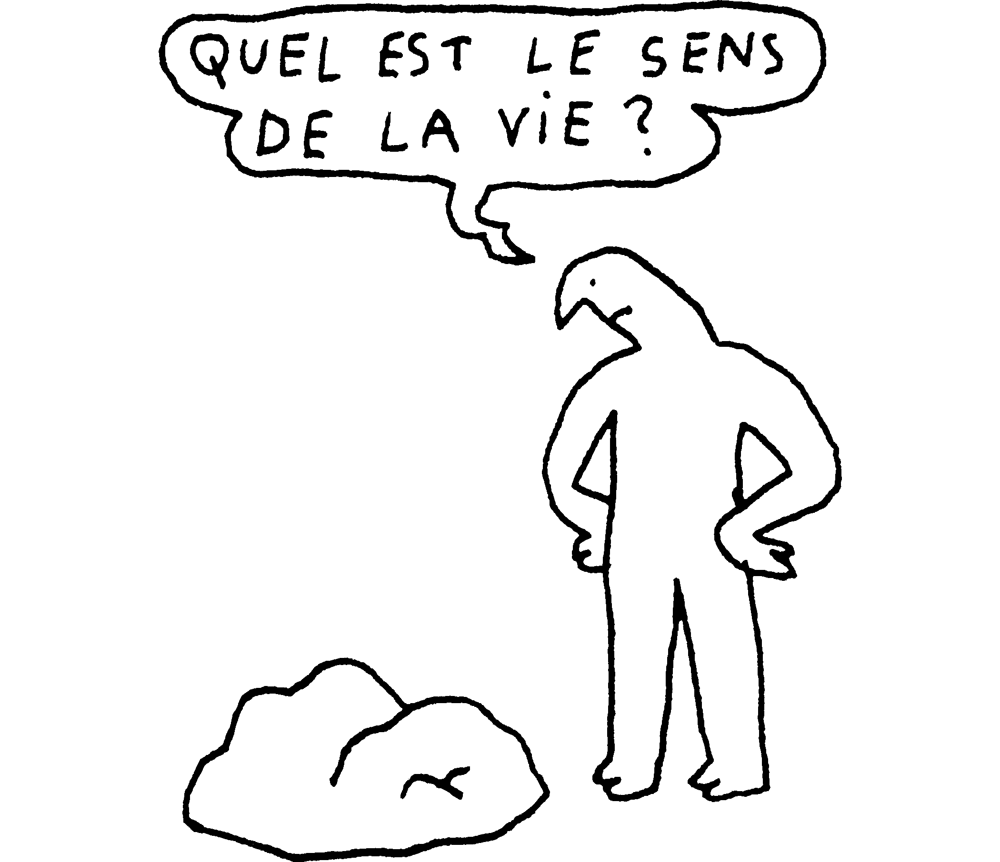
Donc on a ici un personnage qui pose la question du sens de la vie. On peut remarquer qu'il pose sa question à un rocher. Les rochers ont cette particularité (qu'ils partagent avec d'autres objets inanimés) qu'ils ne peuvent pas parler. On dit que les rochers sont muets.
Le personnage sait très bien que le rocher ne peut pas parler. Il sait que par conséquent il ne va pas pouvoir répondre à sa question. Et en fait, s'il pose sa question au rocher, c'est plus pour lui une manière de se la poser à lui-même.
La question qu'il pose, la question du sens de la vie, c'est une question qui est assez connue. Assez difficile aussi. Peut-être d'ailleurs connue parce qu'elle est difficile. Elle est difficile pour plusieurs raisons, mais notamment parce que dans sa formulation standard (Quel est le sens de la vie
), elle comporte plusieurs ambiguïtés. Une ambiguïté autour du mot vie bien sûr, mais ce qui intéresse plus particulièrement ce personnage c'est l'ambiguïté autour du mot sens.
Ce personnage sait très bien qu'avant de pouvoir répondre à la question du sens de la vie, il va d'abord falloir qu'il réponde à la question du sens du mot sens. Sauf que la question du sens du mot sens, c'est aussi une question difficile. C'est une question difficile principalement pour deux raisons. D'abord pour un problème tout bête d'autoréférence : quand on me pose la question du sens du mot sens, c'est un peu comme si on me demandait de définir le mot définir. Je dirais Oui, bien sûr, je veux bien définir le mot définir, je veux bien définir tous les mots que vous voulez. Mais avant que je me lance dans cette définition, est-ce que vous voulez bien m'expliquer un peu plus précisément ce que vous entendez par définir, que je puisse correctement définir le mot définir ?
. Et puis l'autre problème quand on tente de répondre à la question du sens du mot sens c'est qu'on se retrouve assez vite avec des phrases assez longues dans lesquelles le mot sens est présent plusieurs fois avec des sens différents et ça peut devenir compliqué à suivre si on ne se concentre pas.
Mais la question du sens du mot sens est quand même une question intéressante. Notamment parce que le mot sens, il a une étymologie un peu particulière. On dit que le mot sens a deux étymons. Ça veut dire qu'il y a deux mots différents qui viennent de deux langues différentes qui ont en quelque sorte fusionné pour donner le mot sens en français. Ces deux mots c'est sensus du latin, qui fait référence à la notion de signification. Et sen de l'ancien français, qui fait référence à la notion de direction.
Et il s'avère qu'on retrouve ces deux sens dans le mot sens, mais aussi dans la question du sens de la vie. Puisque la question du sens de la vie on peut se la poser en termes de direction, c'est ce qu'on retrouve dans les formulations D'où venons-nous, où allons-nous ?
, Quel chemin emprunter pour correctement mener ma vie ?
. Mais on peut aussi se poser la question du sens de la vie en termes de signification : Qu'est-ce que la vie veut dire ?
, Qu'est-ce que ça signifie que je sois là, ici et maintenant ?
.
Cette ambiguïté autour du sens du mot sens elle rappelle beaucoup une autre ambiguïté qu'il y a dans la langue française autour du mot pourquoi.
On va prendre deux nouveaux personnages :
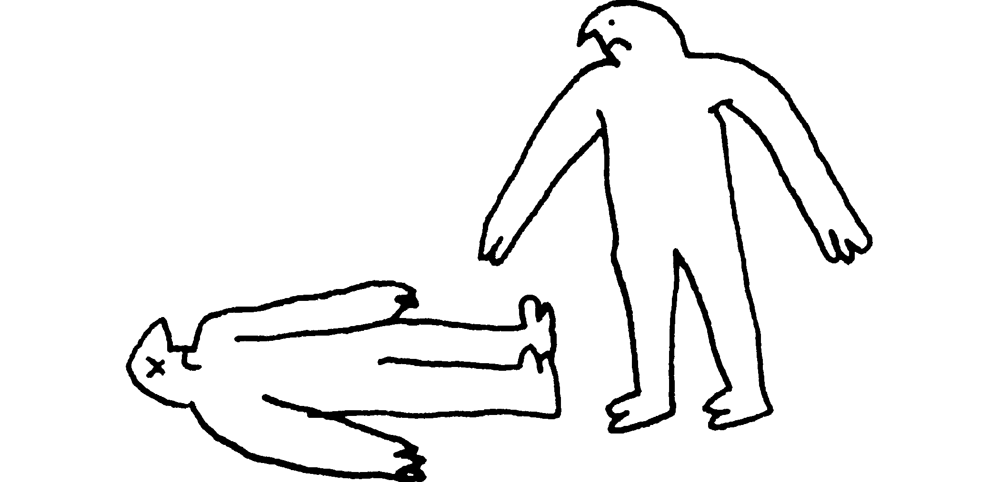
Le premier personnage est debout (je vous préviens, c'est un peu triste), il se tient debout devant le cadavre de son ami qui vient de mourir.
Le deuxième personnage est debout lui aussi, il est dans le désert et il se tient debout devant un petit tas de coquillages qu'il a trouvé, par terre, en se baladant dans le désert.
Et, à ce moment, les deux personnages laissent échapper un Pourquoi ?
. Deux fois le même mot donc, et pourtant, deux sens totalement différents.
En bas on a ce qu'on appelle un pourquoi causaliste, qui s'intéresse à la cause d'un phénomène. En haut on a ce qu'on appelle un pourquoi finaliste qui s'intéresse à la finalité, au but d'un phénomène. Qu'est-ce que ça veut dire ? Ça veut dire que si vous allez voir le personnage du haut, qui se demande pourquoi son ami est mort et que vous lui répondez que c'est parce qu'il était malade, vous répondez à côté de la plaque. Ce personnage sait très bien que son ami avait un cancer. Et quand il demande pourquoi il est mort, ce n'est pas parce qu'il veut savoir la cause de sa mort mais parce qu'il veut savoir, en quelque sorte, dans quel but il est mort. De la même manière, si vous allez voir le personnage du bas qui se demande pourquoi il y a des coquillages dans le désert et que vous lui répondez que c'est pour faire parler les curieux. Encore une fois, vous répondez à côté de la plaque. Celui-là ne veut pas savoir quel est le but de la présence de ces coquillages mais quelle en est la cause, quel est l'enchaînement d'événements qui a amené à la présence de ces coquillages ici.
Pour moi cette ambiguïté autour du mot "Pourquoi" c'est un des plus gros problèmes qu'on a dans la langue française, ça crée plein de quiproquo et je pense même que ça nous empêche de réfléchir correctement. Et j'ai une idée, pour régler ce problème. Ça s'inspire de l'espagnol. En espagnol, quand on est dans ce genre de situation, on a deux mots à notre portée. D'un côté on a para qué, qui est l'équivalent du pourquoi finaliste. Et de l'autre côté on a por qué qui est l'équivalent du pourquoi causaliste. Et il s'avère que para et por sont des mots qui ont déjà leur traduction établie en français, para se dit tout simplement pour et por se dit tout simplement par. Donc on pourrait nous aussi avoir deux mots. D'un côté on aurait pourquoi qui resterait pourquoi, le pourquoi finaliste. Et de l'autre on aurait parquoi qui remplacerait le pourquoi causaliste.
Après je sais bien qu'il ne suffit pas d'avoir une bonne idée pour que du jour au lendemain tout le monde l'adopte. Et tant mieux ! La langue ça doit évoluer par l'usage que les gens en font et pas par une réforme qui viendrait comme ça d'une seule personne. Mais je voulais quand même vous en parler, comme ça la prochaine fois que vous serez confrontés au problème de l'ambiguïté autour du mot pourquoi, vous saurez que vous pourrez toujours utiliser parquoi pour vous en sortir.
Pourquoi j'insiste autant sur l'ambiguïté autour du mot pourquoi ? C'est parce qu'il y a une grande différence, très importante entre les questions en pourquoi causalistes et les questions en pourquoi finalistes. C'est que, alors que les premières ont toujours une réponse (parce que tout a toujours une cause) les deuxièmes n'ont pas toujours une réponse (parce qu'il n'y a pas toujours un but derrière les choses qui arrivent).
De manière générale, il y a un préjugé, que j'appelle le préjugé du dualisme question-réponse, qui nous pousse à penser que derrière chaque question il y aurait toujours une réponse. C'est ce qu'on retrouve dans des formulations du type Pas de problème sans solution
.
Pas de problème sans solution
c'est une phrase qu'on entend beaucoup y compris dans des endroits comme par exemple à l'école. Alors que c'est une phrase totalement fausse. Bien sûr qu'il y a des problèmes sans solution, il y a plein de problèmes sans solution, tout comme il y a plein de questions sans réponse.
Attention, quand je parle de questions sans réponse, je ne parle pas des questions dont on ne connaît pas la réponse. Prenons l'exemple d'un personnage qui se tient devant une boite en carton et qui se demande ce qu'il y a dans la boite en carton :
Vous voyez bien que ce n'est pas parce qu'il ne connait pas la réponse à sa question que sa question n'a pas de réponse. Il lui suffirait d'ouvrir la boite en carton pour savoir ce qu'il y a dedans.
Je ne parle pas non plus des questions dont on ne connaîtra jamais la réponse. Par exemple, si vous, vous vous posez la question de savoir ce qu'il y a dans cette boîte en carton, contrairement au personnage, vous ne pourrez jamais le savoir. Le personnage peut très bien ouvrir la boîte, car c'est une boite dessinée et que lui-même il est dessiné, mais vous vous ne pouvez pas l'ouvrir car vous êtes dans la vraie vie. (Ce n'est pas vraiment un avantage que le personnage a par rapport à vous, car de la même manière, s’il y avait une boite dans la vraie vie, vous pourriez l'ouvrir et lui ne pourrait pas l'ouvrir.)
Je disais donc, quand je parle des questions sans réponse, je ne parle pas des questions dont on ne connait pas la réponse, je ne parle pas des questions dont on ne connaitra jamais la réponse, je parle bien des questions qui n'ont pas de réponse.
Un exemple que j'aime beaucoup c'est la question de ce qu'il y avait avant le début de l'univers. Si je me pose cette question de ce qu'il y avait avant le début de l'univers, à cause du préjugé du dualisme question-réponse dont je suis victime comme tout le monde, je vais à tout prix essayer de trouver une réponse. Alors je vais peut-être dire Avant le début de l'univers il n'y avait rien
, si je ne crois pas en Dieu. Si je ne crois pas en rien peut-être que je dirais Avant le début de l'univers il y avait Dieu
. Si je veux être plus prudent je dirais peut-être Je ne sais pas ce qu'il y avait avant le début de l'univers
ou On ne saura jamais ce qu'il y avait avant le début de l'univers
. Mais toutes ces réponses sont forcément mauvaises, car la question de ce qu'il y avait avant le début de l'univers est tout simplement une question qui n'a pas de réponse.
L'univers c'est tout ce qui est. Y compris l'espace et le temps. Donc si je me pose la question de ce qu'il y avait avant le début de l'univers c'est comme si je me posais la question de ce qu'il y avait avant le temps. Mais la notion de avant elle ne peut avoir du sens que dans le temps. On ne peut pas être avant quelque chose sans le temps. On dit que c'est une question qui est insensée, ou que c'est une question qui n'a pas de réponse.
Un autre exemple plus courant de questions sans réponse c'est les questions qui admettent un présupposé faux. On va prendre un nouveau personnage (celui-ci a un chapeau) et on va se demander quel est l'âge de son fils :
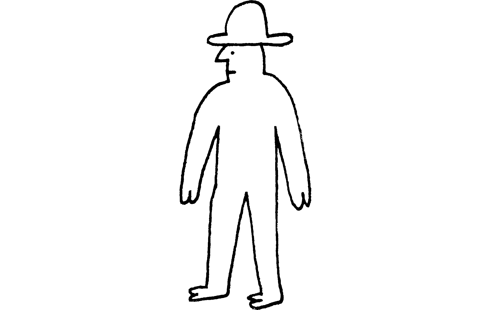
(Je précise que ce personnage n'a pas d'enfant.) Vous voyez bien qu'ici ma question admet un présupposé faux, elle admet que ce personnage a un fils alors qu'il n'en a pas. Il vaudrait mieux d'abord se demander si ce personnage a un fils et si oui, quel est l'âge de son fils. Ou alors directement se demander quel est l'âge de son chapeau.
Et donc si j'insiste là-dessus c'est parce que je pense que quand on se pose une question aussi compliquée que la question du sens de la vie, ça peut valoir le coup de d'abord se demander si c'est bien une question valide. Est-ce que c'est bien une question qui a une réponse. Est-ce que par exemple cette question n'admet pas un présupposé faux ? Un présupposé faux pour la question du sens de la vie ça pourrait être tout simplement le fait que la vie ait un sens. Si la vie n'avait pas de sens, ça n'aurait aucun sens de se demander quel est le sens de la vie.
Et il y a plein de gens qui pensent que la vie n'a pas de sens. C'est d'ailleurs la thèse principale du film des Monty Python sur le sujet. Ils enchaînent les sketchs absurdes pour montrer que la vie est absurde, que la vie n'a pas de sens. En tout cas en termes de signification. Parce qu'en termes de direction les Monty Python proposent un sens à la vie. Qu'on pourrait résumer comme ça :
Pour les Monty Python, la vie c'est ce qui va de la naissance à la mort, et dans cette direction.
Alors ça c'est une idée assez répandue. On trouve ça beaucoup aussi dans des définitions de dictionnaire. Si j'ouvre un dictionnaire à la page du mot vie, j'ai beaucoup de chances de tomber sur une définition du type Période qui s'étend de la naissance à la mort
. Alors c'est une définition que je trouve assez belle parce que j'aime bien l'idée d'une période qui s'étend. Mais en soi c'est une définition que je trouve très mauvaise. Je ne vois pas du tout pourquoi on aurait besoin des concepts de naissance et de mort pour définir le mot vie. En fait je ne vois pas trop le rapport.
Prenons par exemple un dernier personnage :
et on va dire que ce personnage est immortel (il ne va jamais mourir). Est-ce que pour vous, du coup, il est moins vivant que tous les autres personnages qu'on a vus jusque-là ? Juste parce qu'il ne va jamais mourir ? Non, ça n'a aucun sens. Pas besoin de mourir pour être vivant.
Juste avant de finir je voulais revenir rapidement sur le personnage avec le chapeau. Parce que je trouve qu'il a une idée assez intéressante à propos de la question du sens de la vie. Et ça aurait été dommage de ne pas la partager avec vous.
Ça utilise beaucoup le vocabulaire autour des jeux. L'idée de base c'est de dire qu'un jeu peut toujours se définir comme une liste de règles. Tous les jeux peuvent être définis comme une liste de règles. Et des règles il y en a de deux sortes. Il y a ce qu'on appelle les règles fortes et ce qu'on appelle les règles faibles.
Une règle forte dans un jeu, c'est une règle que l'on ne peut pas transgresser. À la limite, si on la transgresse, le jeu cesse d'exister. Par exemple, aux échecs, il y a une règle qui dit que la tour ne peut se déplacer qu'en ligne droite. Si lors d'une partie d'échecs, vous déplacez votre tour en diagonal, dès l'instant où vous faites ça, vous ne jouez plus aux échecs, le jeu cesse d'exister.
De l'autre côté il y a les règles faibles. Une règle faible dans un jeu c'est une règle qu'on peut transgresser. Seulement voilà, si on la transgresse, on a perdu. Par exemple aux échecs, il y a une règle qui dit que mon roi ne peut pas être en situation d'échec à la fin de mon tour. Si à la fin de mon tour, mon roi est en échec, le jeu ne va pas cesser d'exister, j'aurai juste perdu.
Et on remarque qu'il y a des jeux (pas mal de jeux) qui sont entièrement basés sur des règles faibles. C'est le cas du Ni oui ni non par exemple. Le Ni oui ni non c'est un jeu qui peut se résumer en une liste de deux règles faibles :
- interdit de dire oui
- interdit de dire non.
Si lors d'une partie de Ni oui ni non vous transgressez une de ces deux règles, le jeu ne va pas cesser d'exister, vous aurez juste perdu.
Par contre, ce qui n'existe pas, ce sont des jeux entièrement basés sur des règles fortes. En fait c'est comme si les jeux ils avaient besoin des règles faibles pour exister.
Et donc l'idée de ce personnage, c'est de dire que la vie, c'est un peu comme un jeu dans lequel on arrive en cours de partie et dont on ne connait pas les règles. Et donc je ne sais pas si vous avez déjà essayé de jouer à un jeu dont vous ne connaissez pas les règles mais en général c'est très frustrant. Et en général qu'est-ce qu'on essaye de faire, on essaye à tout prix de comprendre quelles sont les règles du jeu. Et c'est ce qu'on fait avec la vie, on cherche, on gratte, pour essayer de trouver quelles sont les règles de ce jeu dans lequel on a atterri.
Et il s'avère qu'à force de chercher, on trouve des règles. Par exemple il y a une règle qui dit qu'un livre ne peut pas passer au travers d'une table. Il y a une règle qui dit que quand je lâche un livre, il tombe. À force de chercher et de réfléchir sur ces règles on s'aperçoit qu'elles font partie d'un système. Que ces règles sont souvent des cas particuliers de règles plus générales. Par exemple, le fait que le livre tombe quand je le lâche, c'est en quelque sorte un cas particulier de la règle qui dit que la force qu'exerce un objet A sur un objet B est égale au produit de la masse de ces deux objets sur le carré de leur distance.
Et tout ça c'est très intéressant, on adore parler de ça. D'ailleurs on en parle beaucoup et depuis très longtemps. Mais il y a un problème, c'est que toutes ces règles, ce ne sont que des règles fortes, des règles qu'il est impossible de transgresser. Seulement voilà, on l'a dit, un jeu pour être intéressant, il a besoin de règles faibles. Malheureusement, les règles faibles, on dirait bien que ça n'existe pas à l'état naturel. Alors qu'est-ce qu'on fait ? On en invente. Et c'est ce qu'on fait. Depuis toujours on invente des règles faibles pour rendre notre vie plus amusante.
Alors ça peut être par exemple des conventions sociales : quand on me donne le sel, je dis merci
, moi je joue avec cette règle littéralement tous les jours. Ça peut être des lois : Interdit de fumer dans les lieux publics
. Je ne peux pas passer le livre au travers de la table, je ne peux pas fumer dans les lieux publics, mais vous voyez bien que ce n'est pas vraiment le même type de règles. Il y a aussi tout ce qui est dogme religieux : Tu ne tueras point, tu ne voleras point, tu n'envieras point la femme ou la chèvre de ton voisin
. Il y a les buts dans la vie (très intéressant ça, les buts dans la vie) : Mon but dans la vie c'est d'être la personne la plus riche du monde
, si à la fin de ma vie je ne suis pas la personne la plus riche du monde, la vie ne va pas cesser d'exister, j'aurai juste perdu.
Et puis il y a un dernier type de règle faible, qui intéresse particulièrement le personnage avec le chapeau, il appelle ça les superstitions. Alors vous allez voir que ce n'est pas exactement ce qu'on appelle les superstitions dans le langage courant mais c'est pas très éloigné non plus. En gros c'est un ensemble de règles faibles peu contraignantes, que l'on va s'imposer seulement à soi-même pour rendre son quotidien plus intéressant. Par exemple moi, quand on m'offre un couteau, je donne une pièce en échange. Quand je parle du futur, je touche du bois. Quand je vais quelque part, je ne prends jamais le même chemin à l'aller et au retour. Si je fais tomber un aliment par terre, je peux toujours le manger mais seulement si je le ramasse en moins de 3 secondes. Si je fais tomber une pièce par terre, je peux toujours la remettre dans ma poche mais seulement si je la frappe une fois contre le sol avant de la ramasser. Je ne donne jamais du savon à quelqu'un en main propre. Quand je traverse au passage piéton, je ne marche que sur les bandes blanches. Je ne termine jamais le texte d'une conférence par une phrase dont le nombre de mots n'est pas un nombre premier.
La conférence La question du sens de la vie a été écrite à Arles en juin 2019, sur invitation de l’association 2 SI2 LA pour l’exposition C’est par où la vie ?
Le syndrome de la reine rouge
Un bon exemple de question sans réponse, c'est une question souvent posée par les enfants aux adultes, c'est la question Jusqu'à combien tu sais compter ?
. A priori, il n'y a pas de limite à jusqu'à combien je sais compter. Et je pourrais être tenté de répondre : Je sais compter jusqu'à l'infini
. Mais en réalité, personne ne peut prétendre pouvoir compter jusqu'à l'infini.
En réalité c'est une question très embarrassante. Beaucoup plus embarrassante à mes yeux que d'autres questions d'enfant réputées pour être embarrassantes. Comme par exemple Comment on fait les bébés ?
ou Est-ce que tu as déjà pris de la drogue ?
.
Quand on me pose la question de jusqu'à combien je sais compter, ma stratégie en général c'est de détourner la conversation vers une autre question à peu près similaire, mais à laquelle je peux répondre. Par exemple : jusqu'à combien je sais compter sur mes doigts. Compter sur ses doigts ça s'appelle la dactylonomie, et c'est vraiment un sujet passionnant.
En France on apprend en général à compter sur ses mains, en dépliant les doigts uns par uns en partant du pouce. Avec une main on peut en général compter jusqu'à 5. Et vu qu'on a deux mains, on peut compter jusqu'à 10. C'est la façon la plus primitive de compter sur ses doigts. C'est sûrement comme ça que comptaient sur leurs doigts, les premiers humains qui ont compté sur leurs doigts. Et c'est sûrement pour ça qu'on utilise la base 10 (le système décimal) pour représenter les nombres dans la vie de tous les jours.
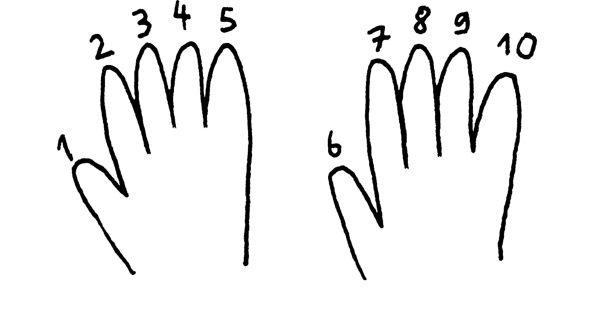
Cette technique (qu'on appelle communément la technique à la française), a un énorme défaut : elle est extrêmement inconfortable lorsqu'on atteint le nombre 4. Et on a un gros problème avec ça en France, un problème de santé publique, avec un nombre de tendinites à l'auriculaire beaucoup plus élevé qu'ailleurs.
Dans d'autres endroits on a des manières beaucoup moins douloureuses de compter jusqu'à 5. Par exemple en partant de l'index et en finissant par le pouce. En partant de la main ouverte et en fermant les doigts uns par uns. Ou encore en partant du pouce, mais en finissant par l'auriculaire.
Et donc tout ça c'est très bien pour compter publiquement, si je veux que la personne en face sache où j'en suis, mais si je dois compter pour moi-même, en général je vais utiliser une autre technique qui s'appelle la technique décimale à deux chiffre. À deux chiffres ça veut dire que chacune de mes deux mains va représenter un chiffre (la main gauche c'est le chiffre des dizaines et la main droite c'est le chiffre des unités). Et décimale ça veut dire que chacun de ces deux chiffres peut avoir 10 valeurs (est compris entre 0 et 9).
J'associe un chiffre entre 0 et 9 à chacune de mes phalanges, comme sur un clavier de calculatrice. Et pour compter, je déplace mes pouces sur mes phalanges. C'est très pratique et très intuitif. Et surtout, ça permet de compter jusqu'à 100.
Enfin, dans les cas où ce que je dois compter risque de dépasser la centaine, j'utilise une dernière technique, la technique binaire à 10 chiffres. À 10 chiffres ça veut dire que chacun de mes doigts va représenter un chiffre. Binaire ça veut dire que chacun de ces chiffres peut avoir deux valeurs (0 ou 1). Cette technique est un peu plus compliquée, elle demande pas mal d'entraînement, mais elle a un énorme avantage : elle permet de compter au-delà de 1 000 !
J'associe à chaque doigt une puissance de 2 (1, 2, 4, 8, 16, 32, 64, 128, 256, 512). Et pour savoir où j'en suis dans le compte, je n'ai qu'à additionner les nombre correspondants aux doigts levés.
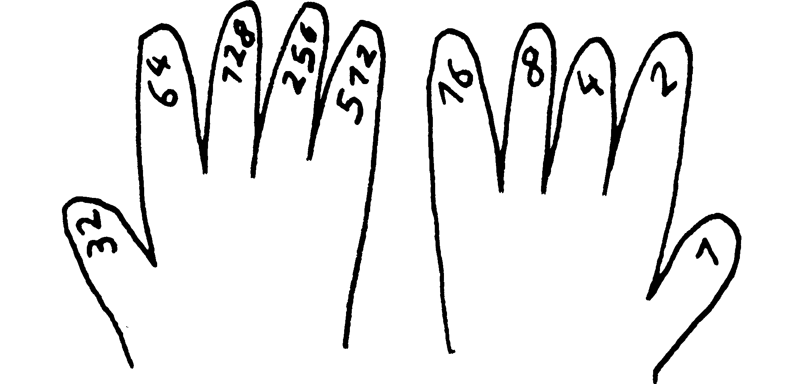
Vous avez sûrement entendu parler de cette technique, elle est de plus en plus utilisée. Là, il y a quelques jours, j'étais chez une amie qui est tatoueuse et elle me racontait que de plus en plus de gens viennent se faire tatouer les puissances de 2 les doigts pour pouvoir plus facilement compter en binaire.
Et une fois que j'en arrive là dans l'explication de jusqu'à combien je sais compter sur mes doigts, en général mon interlocuteur à totalement oublié sa question de départ qui était, pour rappel, jusqu'à combien je sais compter ?
(tout court). Faire oublier cette question c'était mon but, mais malheureusement, moi cette question je ne vais pas l'oublier de si tôt…
Par exemple, dans l'histoire, c'est quoi le plus loin qu'on est allé dans le décompte des nombres entiers ? Dans le Guiness Book Des Records, le record du plus grand nombre compté à voix haute il est détenu par un Américain qui s'appelle Jeremy Harper et qui a compté jusqu'à 1 million en une centaine de jours. Et c'est assez étonnant, mais ils ne mentionnent pas du tout Opalka.
Opalka c'est un peintre qui un jour a décidé de tout arrêter pour consacrer tout son temps au décompte des nombres de 1 à l'infini. Et donc il comptait à voix haute en s'enregistrant sur un dictaphone. Et en même temps il écrivait les nombres en tout petit sur des tableaux. Avec de la peinture à l'huile blanche (du blanc de titane). Malheureusement Opalka est mort avant d'arriver à l'infini, mais il a quand même réussi à compter jusqu'à plus de 5 millions ! 5 fois plus que Jeremy Harper.
Et alors quand j'ai écrit au Guiness à ce sujet, ils m'ont répondu qu'ils connaissaient bien le cas Opalka. Mais que son record ne pouvait pas être validé, parce qu'il y avait une erreur dans le comptage. Et en effet, c'est connu, sur un des tableaux d'Opalka il manque un nombre. Un jour il était un peu fatigué et il est passé directement de 2 273 543 à 2 273 545. Mais franchement, c'est pas très grave ! Surtout que Jeremy Harper il n'a pas oublié de nombre mais contrairement à Opalka, il ne comptait pas de tête. Il était assisté par un ordinateur, il avait un écran devant lui avec les nombres qui défilaient automatiquement. Et ça, entre nous c'est un peu de la triche. Parce que compter, pour un ordinateur c'est vraiment facile. Compter c'est même ce que les ordinateurs savent faire de mieux. Et je peux aller plus loin : compter c'est la seule chose que les ordinateurs savent faire.
Et c'est ça qu'on appelle le numérique quand on parle des ordinateurs. Numérique ça veut dire quoi ? Ça veut juste dire nombre. Parce qu'un ordinateur, en fait c'est juste un nombre. Et quand on dit le digital pour parler des ordinateurs. Digital ça veut dire quoi ? Ça juste dire doigts (comme dans emprunte digitales). Parce qu'en fait un ordinateur c'est quoi ? C'est juste une machine qui compte sur ses doigts en binaire. Rien de plus ! Rien de plus si ce n'est qu'elle compte très vite, et qu'elle a beaucoup de doigts.
Rien que mon téléphone portable, mon ordinateur de poche, il fait 128 Go. 128 gigaoctets ça veut dire qu'il peut compter sur 128 milliards de mains. Et les mains des ordinateurs c'est des octets, Ce qui veut dire qu'il y a 8 doigts par mains. Et je ne sais pas vous, mais moi ça me fait toujours un peu bizarre de savoir que j'ai 128 milliards de mains à 8 doigts qui comptent en continu dans ma poche.
Les ordinateurs n'ont pas toujours été aussi petits ! S'ils sont si petits aujourd'hui c'est principalement à cause de la loi de Moore. La loi de Moore pour résumer, ça dit que tous les deux ans on a besoin de deux fois moins de place pour construire un ordinateur de même puissance. Donc si mon ordinateur fait cette taille :
Il y a deux ans, pour la même puissance, il aurait dû faire le double :
Deux ans avant, le double du double :
Deux ans avant, le double du double du double :
Et ainsi de suite :
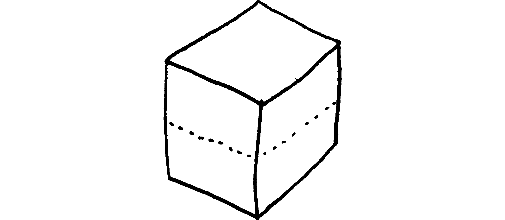
Donc là je m'arrête parce que je n'ai plus de place, mais vous avez compris le principe, c'est exponentiel, ça augmente très vite. Et si je répétais l'opération 50 fois, qu'est-ce qu'on découvrirait ? On découvrirait qu'il y a 100 ans, pour faire un ordinateur aussi puissant que mon ordinateur de poche il fallait un immeuble de 60 étages qui occupe toute la superficie de la ville de Toulouse.
Et je trouve que ça explique assez bien pourquoi, à cette époque, personne n'avait envie de construire des ordinateurs. Parce que pour construire un ordinateur de la taille de Toulouse, déjà il te faut pas mal de place, et puis surtout il te faut du temps. Et il ne faudrait pas que la construction de l'ordinateur te prenne trop longtemps. Parce que si par exemple ça te prend 100 ans : au bout de 100 ans, le jour ou tu as fini ta ville-ordinateur, tu es content, tu sors faire un tour pour en parler autour de toi et là, tu découvres quoi ? Que tout le monde a dans sa poche, un ordinateur aussi puissant que celui que tu viens de mettre 100 ans à construire !
L'autre penchant de la loi de Moore c'est que si on construit des ordinateurs qui font toujours la même taille, ils doubleront de puissance tous les deux ans. Et du coup, on peut légitimement se poser la question : Si les ordinateurs sont toujours de plus en plus puissants, de manière exponentielle, pourquoi est-ce qu'aujourd'hui, ils rament toujours autant ?
Et ça c'est très bien expliqué par la loi de Wirth. La loi de Wirth en gros ça dit que plus les ordinateurs sont rapides, plus les programmes qu'on développe pour ces ordinateurs sont lents. Plus on a de puissance, plus on fait des programmes qui sont gourmands en puissance. Si la puissance des ordinateurs double tous les deux ans, la lenteur des programmes doublera tous les deux ans.
Par exemple à la fin des années 90, on avait un logiciel qui s'appelait Microsoft Word, qui était un petit éditeur de texte très pratique, mais avec un gros défaut, il ramait beaucoup. Si on avait gardé ce logiciel tel quel, aujourd'hui sur nos nouvelles machines, il serait extrêmement rapide. Mais au lieu de ça, au fur et à mesure que les ordinateurs devenaient plus puissants, on a ajouté des fonctionnalités à Microsoft Word, de telle sorte à ce qu'il soit toujours aussi lent. Et c'est comme ça, on y peut rien. Ce que nous dit la loi de Wirth, c'est que la lenteur des programmes est inhérente à l'informatique tel qu'on le pratique.
Si vous avez connu les Mac avant les années 2000, vous vous souvenez peut-être de ce très bel icone en forme de montre.

C'était un curseur, qui avait été dessiné par Susan Kare. Et il apparaissait dès que l'ordinateur ramait. Et même si la montre était très bien dessinée et très jolie, les utilisateurs détestaient voir la petite montre de Susan. Et c'est normal car quand on attend quelque chose, il y a rien de plus agaçant que de regarder sa montre, ça fait paraître le temps encore plus long.
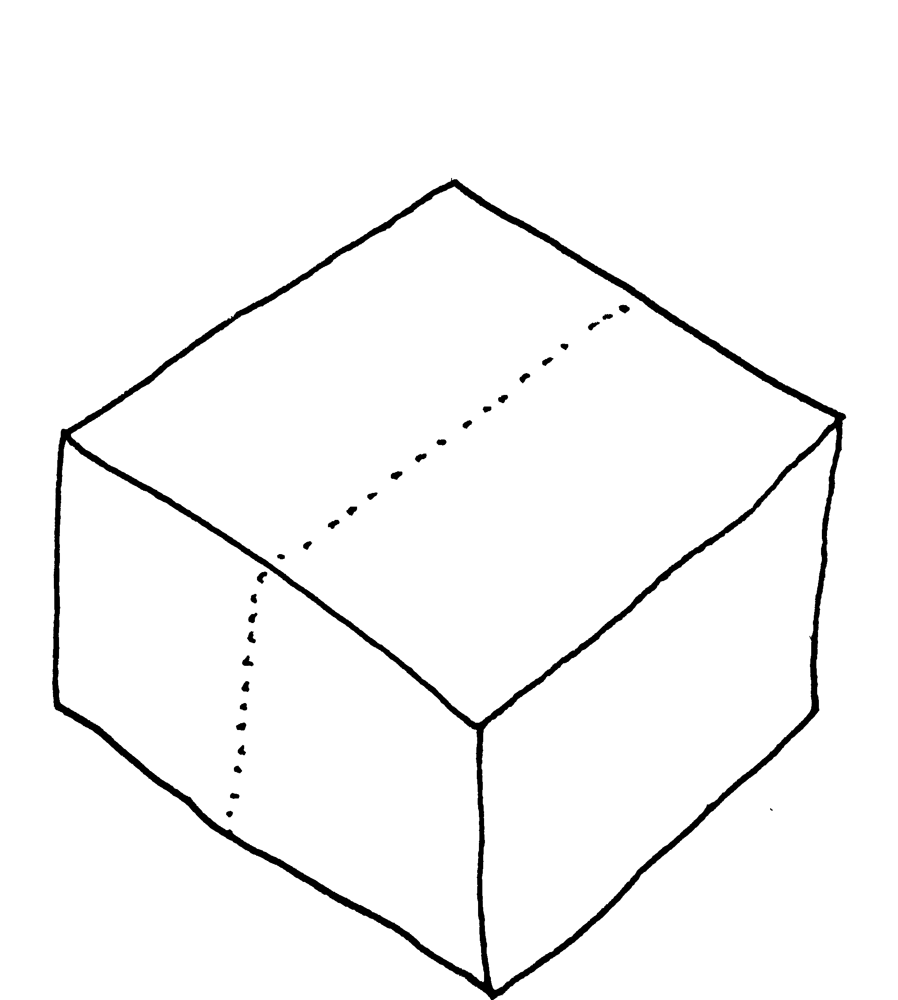
Quand Apple a sorti sa nouvelle génération de système d'exploitation (OSX), ils auraient pu se dire : les gens détestent voir la petite montre de Susan, en même temps nos ordis sont devenus plus puissants, on va s'arranger pour que les programmes ne rament plus.
Mais ils ne se sont pas du tout dit ça. Ils se sont dit : Personne n'aime voir la petite montre de Susan, qu'à cela ne tienne, on va remplacer le joli dessin de Susan par un icone nettement moins joli. Une sorte de petite roue qui tourne, un peu en forme de spirale…
…comme ça quand les ordinateurs rameront, ça va un peu hypnotiser les gens et ils ne vont pas voir le temps passer.
Sous aucun prétexte Apple n'aurait fait des programmes qui rament moins. Parce qu'il faut bien comprendre quelque chose : si les programmes ne rament plus, on n'a plus besoin de faire des nouveaux ordinateurs plus puissants. Et s' il n'y a plus de nouveaux ordinateurs plus puissants, aucune raison de faire des nouveaux programmes plus gourmands. Et s'il n'y a plus besoin de faire des nouveaux ordinateurs ni de faire des nouveaux programmes, c'est tout le modèle économique d'Apple s'effondre.
En fait, l'histoire de l'informatique, c'est le syndrome de la reine rouge.
Je ne sais pas si vous vous souvenez dans Alice au pays des merveilles, il y a ce passage où Alice et la Reine Rouge courent pendant très longtemps. Elles courent dans une sorte de forêt. Et c'est très fatiguant pour Alice. Parce que la reine court vraiment vite et aussi ça fait vraiment longtemps qu'elles courent.
À un moment Alice est beaucoup trop fatiguée, elles décident de faire une pause et Alice s'aperçoit alors qu'elles n'ont pas bougé de l'endroit où elles étaient au début de la course. Elles sont toujours devant le même arbre devant lequel elles étaient quand elles ont commencé à courir. Et donc Alice elle dit à la reine : C'est bizarre, là d'où je viens, quand on court beaucoup comme ça, on change d'endroit.
Et la reine rouge lui répond : Ça doit être très lent là d'où tu viens. Ici il faut courir de toutes ses forces, si on veut rester au même endroit.
Et pour moi, l'histoire de l'informatique c'est vraiment ça. On court à des vitesses folles, et c'est comme si on avançait pas. On a des débits internet super faibles et on galère à regarder des vidéos en 720p. 10 ans plus tard, on a la fibre, la 5G, les débits ont été multipliés par 10, et nous qu'est-ce qu'on fait ? Au lieu de profiter de vidéos fluides en 720p, on galère à regarder des vidéos en 4K. On a des disques durs de quelques mégaoctets qui sont toujours presque pleins, 20 ans plus tard, on a des disques durs de plusieurs téraoctets et ils sont toujours presque pleins.
Et plus on court, et plus on reste au même endroit.
Un autre exemple que j'aime bien du syndrome de la Reine Rouge dans l'histoire de l'informatique, c'est l'histoire du bug de l'an 2000.
Le bug de l'an 2000 on a pris l'habitude de l'écrire comme ça :
Y2K BUG
(Le Y ça veut dire année en anglais, et le K ça veut dire 1000 c'est le K de Kilo). Le bug de l'an 2000 c'est donc un bug qui n'a pas eu lieu. Il devait se produire au 1er janvier 2000 un peu partout dans le monde. Et s'il n'a pas eu lieu c'est parce qu'on a vraiment eu peur et qu'on a dépensé des centaines de milliards de dollars pour le corriger avant qu'il ne se produise.
Le problème qu'on avait est assez simple à comprendre : Quand on faisait des programmes dans les années 80 et qu'il fallait garder la date en mémoire, on n'écrivait pas 1980 (ça prenait trop de place), on écrivait seulement 80. Et au moment de restituer l'information on ajoutait 19 devant.
À cette époque les gens se disaient que c'était cool, car ça économisait pas mal de mémoire. Ils n'étaient pas bêtes, ils savaient bien que ça ne pourrait pas durer éternellement. Mais tout le monde était d'accord pour se dire que les programmes des années 80, ça ferait longtemps qu'ils ne seraient plus utilisés dans les années 2000.
Sauf que 19 ans plus tard on est en 99, et il s'avère que des programmes des années 80 sont encore utilisés un peu partout dans le monde. Sauf que bientôt on va passer à l'an 2000. Et selon comment les programmes sont faits, soit ils vont nous ramener en 1900, soit (encore pire) nous emmener en 19100 ! Et croyez-moi, ça aurait eu des conséquences assez graves.
Heureusement on a réagi à temps ! Et surtout on a appris de nos erreurs. Maintenant ce n'est plus du tout comme ça qu'on stocke les dates en mémoire. Maintenant pour stocker la date on utilise généralement ce qui s'appelle le temps POSIX. Le temps POSIX C'est le nombre de secondes qui se sont écoulées depuis le 1er janvier 1970. Par exemple, au moment où j'écris ce texte, le temps POSIX c'est 1 666 012 960.
Comme c'est un nombre de secondes c'est facile à convertir en nombre d'années et surtout, ça ne pose pas de problèmes quand on change de siècle ou de millénaire ! Et cd nombre de seconde, cette valeur, on va la stocker sur 4 octets (c'est à dire 4 mains à 8 doigts qui comptent en binaire) et comme ça, on est tranquille pour un bon bout de temps. Plus précisément on est tranquille jusqu'en 2038. Et ça va 2038, c'est dans longtemps ! De toute façon, les programmes qu'on a aujourd'hui, ça fera longtemps qu'ils ne seront plus utilisés en 2038…
Je rigole bien sûr, c'est problématique et on est au courant. Ça s'appelle le bug de l'an 2038 et c'est pris très au sérieux. On a pris l'habitude de l'écrire comme ça :
Y2K38 BUG
Rapidement, l'idée pour fixer ce bug, c'est qu'au lieu d'utiliser 4 octets, on en utilise 8. Et si on stocke le temps POSIX sur 8 octets, le prochain bug de ce type il se produira dans 292 milliards d'années. Et ça c'est dans vraiment longtemps. C'est ce qu'on appelle le bug de l'an 292 milliards. On l'écrit comme ça :
Y292G BUG
(Le G c'est ça veut dire milliard, c'est le G de Giga). Et même si c'est dans vraiment longtemps (l'an 292 milliards c'est bien après la disparition de la terre et du soleil), c'est important de préciser que ce bug il existe quand même, c'est vraiment une limitation qu'ont nos ordinateurs. Et c'est important de le préciser parce que ça rejoint la question que vous me posiez au début quand vous me demandiez jusqu'à combien je sais compter ?
Parce que comme je le disais au début, personne ne peut prétendre compter jusqu'à l'infini. Et même pas les ordinateurs. Et je peux aller plus loin : les ordinateurs, même s'ils comptent plus vite que nous, ils peuvent encore moins compter jusqu'à l'infini que nous.
Parce que compter jusqu'à l'infini c'est pas une histoire de compter vite ou de compter beaucoup. Tu peux être le processeur le plus rapide du monde et avoir une cadence de 50 GHz (c'est à dire être capable compter 50 milliards de nombres par secondes). Tu peux compter de 10 en 10, de 1000 en 1000, tu peux même compter de plus en plus vite sans jamais arrêter d'accélérer. Quoi que tu fasses, l'infini il ne va pas se rapprocher pour autant.
Parce que compter jusqu'à l'infini c'est comme courir avec la Reine Rouge. Tu peux compter de toutes tes forces, aussi longtemps que tu veux, tu seras toujours au même endroit, aussi loin de ton but.
La conférence Le syndrome de la reine rouge a été écrite à Toulouse en octobre 2022, sur invitation de l’Espace Job
Sur les documents
Si je laisse assez longtemps, dans ma poche (ou dans mon portefeuil), un ticket de caisse (ou un ticket de carte bleu), le contenu de ce ticket, ce qui est inscrit sur ce ticket, va disparaître. Et je vais me retrouver avec un ticket vierge, blanc. Un blanc assez beau d'ailleurs, un peu polis, presque nacré. C'est un phénomène qui est assez fulgurant. Le contenu du ticket peut disparaître en à peine quelques jours. Et c'est dû au fait que les tickets de caisse sont imprimés sur du papier thérmique.
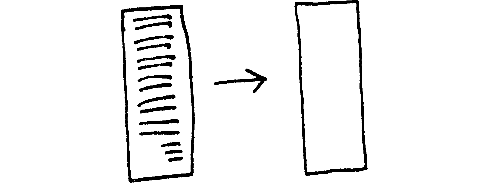
Quand on parle de document (et c'est ce qu'on est en train de faire, là, on est en train de parler de documents), on a tout de suite cette idée qui nous vient en tête, qu'un document c'est l'union de deux choses. D'un côté un support, qui appartient plutôt au monde physique. Et de l'autre une information, qui appartient plutôt au monde des idées. Ce qui est étonnant dans l'exemple du ticket de caisse, c'est que c'est l'exemple d'un document dont l'information va totalement disparaître pour qu'il ne reste que le support. Et ça, c'est pas du tout banal. Pour beaucoup d'autres documents, ça ne se passe pas du tout comme ça. Prenons par exemple, l'exemple du papyrus. Le papyrus c'est un document très ancien avec en général tout un tas de signes incompréhensibles écrits dessus. Si on laisse vieillir ce document assez longtemps, on se retrouve avec ce qu'on appelle un fragment de papyrus. Et on voit qu'on a le support et l'information qui disparaissenten même temps.
En vérité c'est plus compliqué que ça, parce que les personnes qui travaillent avec ce type de document, en général elles sont capable de faire ce qu'on appelle prolonger les signes voir même parfois *compléter les signes manquants. On a en fait l'exemple inverse du ticket de caisse : un document dont le support disparaît plus vite que l'information.
De toute façon, ce qui est commun à tous les documents quels qu'ils soient, c'est cette idée qu'un document a toujours une durée de vie limitée. Tous les documents sont voués à mourrir. Tous les documents sont voués à disparaître. Et ça, ça nous embête ! Parce qu'un document, justement ça sert à quoi ? Ça sert à fixer une information (qui, on l'a dit, appartient au monde des idées, donc est très volatile) à un support, pour la conserver dans le temps. Alors évidement le fait que tous les documents soient voués à mourrir ça nous embête. Et comme d'habitude quand quelquechose comme ça nous embête on trouve tout un tas de solutions, tout un tas d'inventions, qui vont par exemple permettre de ralentir la destruction du document : la pochette cartonnée (qui protège assez bien le document mais qui a l'inconvéniant de le masquer en même temps qu'elle le protège), la pochette plastique (qui protège un peu moins bien que la pochette cartonnée mais qui a l'avantage de garder le document visible tout en le protégeant). Et puis, bien sûr, des inventions qui vont permettre d'accélerer la destruction des documents : la déchiqueteuse (machine dans laquelle on insère un document et d'où ressortent plein de petites bandelettes), et des inventions plus sophistiquées comme la Xerox 530.
La Xerox 530 c'est une machine qui a été commercialisée par Xerox dans les années 50. Elle a parfois été surnommée la duplikilleuse. Ça ressemble un peu à une grosse photocopieuse. Bien sûr, on est dans les années 50, les photocopieuses n'existent pas encore, mais c'est un peu le même principe. D'un côté de la machine il y a une fente par laquel on insére un document. Et de l'autre côté il y a une copie du document qui va sortir. Vous allez me dire que ça ressemble quand même drôlement à une photocopieuse, alors oui, mais la différence c'est que la technologie qui est en jeu à l'interieur de cette machine fait que l'original est systématiquement détruit. En fait c'est un peu comme une photocopieuse qui détruit l'original.
Évidement, ça a été un gros échec commercial. Déjà ça coûtait très cher et puis surtout le fait que l'original était systématiquement détruit ça posait plein de problèmes. Comme par exemple si on avait oublié de remettre de l'encre ou du papier, on se retrouvait avec l'original détruit et pas de copie. Mais c'est quand même une invention qui a fait date, notament parce que c'est ce qui a permis par la suite à Xerox de commercialiser les premières photocopieuse qui ne détruisaient pas l'original.
On a évoqué une première règle, l'idée que les documents on tous une durée de vie limitée. Maintenant on va parler d'une deuxièrme règle, qui découle un peu de la première, c'est l'idée que les documents les plus interessants sont ceux qui disparaissent le plus vite. Attention, je ne dis pas qu'il sont plus interessant parce qu'ils disparaissent plus vite. Au contraire : il disparaissent plus vite parcequ'ils sont plus interessant. Et ça vous le savez si vous avez chez vous une collection de CDs. Vous savez que vos meilleurs CDs, vos CDs les plus interessants, ceux que vous écoutez le plus, sont ceux qui vont le plus vite s'abîmer, se rayer, et être inécoutables. Et le destin de toute collection de CDs c'est de voir ses bons éléments disparaîtres pour qu'à la fin il ne reste que les plus médiocres. Et ce qui est tragique c'est que c'est quelquechose contre lequel on ne peut absolument rien faire. Je ne peux pas me dire par exemple : OK, j'arrête d'écouter mes bons CDs comme ça ils arrêteront de s'abîmer
. Parce qu'un bon CD, il n'est bon que si on l'écoute. Un CD qu'on n'écoute jamais, ne peut pas être bon, c'est un document dont on n'a pas accès à l'information, ce n'est presque plus un document.
Le meilleur exemple de documents qui ont une durée de vie proportionnel à l'interêt qu'on leur porte, c'est les dessins pariétaux dans les grottes préhistoriques. On découvre une grotte avec tout un tas de jolis dessins à l'interieur. Ces dessins au moment ou ils sont découverts ils ont déjà survecus à plusieurs dizaines de milliers d'années d'histoire. Pourtant, dès l'instant où ils sont découverts, leur durée de vie est réduite à moins de 100 ans. Comme on estime que c'est précieux, en général on fait ce qu'on appelle fermer la grotte au public, et on va construire une copie, un facsimilé de la grotte. Donc on choisi une autre grotte dans la même région (si possible une grotte où il n'y a pas déjà des dessins préhistoriques) et on y réalise la copie la plus fidèle dont on est capables des dessins de la première grotte. Et on va proposer au public de visiter plutôt celle-ci.
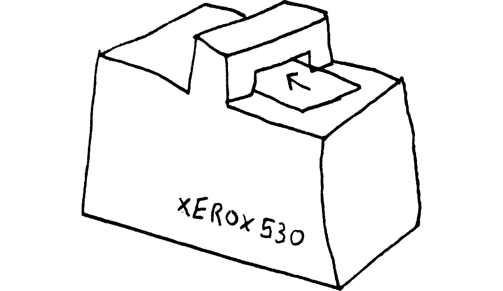
Qu'est-ce qu'on remarque, 50 ans plus tards ces dessins se sont déjà) abîmés, et alors on ne regrette pas d'avoir fermé la grotte originale.
Qu'est-ce qui abîme les peintures dans ces grottes préhistoriques ? Quand on lit la litterature à ce sujet, l'idée qui revient souvent c'est que c'est le souffle des visiteurs qui est la principle cause de déterioration des peintures. Ça ne veut pas dire qui les visiteurs soufflent contre les murs. Les visiteurs réspirent normalement, mais à force, ça fait des mouvements d'air qui vont petit à petit deterriorer les peintures.
Ça peut sembler difficile à croire cette histoire de souffle des visiteurs qui serait la principale cause de deterioration des peintures. Ça me rappelle un peu quand j'étais enfants et qu'on m'a expliqué que les bibliothèques gardaient leur volets fermés parce que les livres s'abîment à la lumière du jour. J'étais très jeune quand on m'a dit ça mais j'avais déjà eu des livres entre les mains, y compris en plein jour, et je voyais bien que ça ne faisait rien. La vérité, c'est que les choses sont souvent beaucoup plus fragiles qu'on l'imagine. Et ça vous le savez, si parfois vous êtes en voitures avec des amis et que le ciel est très beau (vous savez quand le ciel est très beau, avec toutes les nuances de rose et d'orange), vous dites à vos amis : Oh ! Regardez comme le ciel est beau !
Et dès l'instant où vous dites ça, le ciel devient beaucoup moins beau. En général on avance deux hypothèses pour expliquer ce phénomène. La première c'est de dire que le ciel est surtout beau le matin et le soir, c'est à dire dans les moment où il change le plus vite. Donc le temps que ça vous prend de dire que le ciel est beau, ça suffit pour qu'il ait le temps de changer. La deuxième hypothèse, celle qu'on va privilégier ici, c'est de dire qu'en effet, certaines choses sont beaucoup plus fragiles qu'on l'imagine, et la beauté d'un ciel peut-être ne supporte pas d'être montrée du doigt ou juste nommée.
Est-ce que ça veut dire pour autant que la prochaine fois que vous serez devant un beau ciel vous allez devoir vous empecher de le dire à vos amis, pour ne pas gâcher la beauté du ciel ? Non ! Bien sûr que non. Parce qu'il ne faut pas non plus tomber dans le travers opposé qui est de dramatiser la fragilité des choses. Ce qui est un problème tout aussi grâve, dont on trouve aussi plein d'exemple dans la vie quotidienne. La dernière fois par exemple on était au restaurant avec des amis, on nous apporte le dessert, et là quelqu'un à ma table dit : C'est tellement beau, on a pas envie d'y toucher.
C'est une remarque totalement idiote et un très bon exemple de dramatisation de la fragilité des choses. Bien sûr qu'il faut y toucher, c'est un dessert, c'est fait pour ça. Et si la cheffe a travaillé à que ce soit joli, c'est juste pour qu'on ait d'avantage envie d'y toucher, pas pour qu'on ait moins envie d'y toucher.
L'exemple qui m'a le plus marqué (presque traumatisé) de la dramatisation de la fragilité des choses c'est ce message qu'on trouve à l'arrière des livres scolaires : Danger, le photocopillage tue le livre
.
Alors ce n'est pas le sujet de cette conférence donc on ne va pas parler ici de cet horrible jeu de mot qu'on a du supporté pendant toute notre scolarité. Ici on ne va parler que du fond, du sens de ce message. Qu'est-ce que ça veut dire que la photocopie tue le livre ? Tout simplement, ça veut dire que si vous êtes prof, et que vous faites des photocopies d'un livre scolaire pour vos élèves, vos élèves n'auront pas besoin d'acheter le livre, l'éditeur vendra moins de livre, l'année suivante il n'aura pas gagné assez d'argent pour imprimer le livre à nouveau, vous aurez tué le livre en le photocopiant.
ICICICICICICICICIIC
Évidement la réalité est un peu plus complexe. La photocopie ne tue pas le livre au sens où on l'entend depuis le début de cette conférence, des documents qui sont voués à mourrir. Au contraire, quand vous allez dupliquer l'information sur differents supports vous allez lui donner plus de force, plus de vigueur. De manière générale, la copie et le faux, ça fait partit des actes illégaux que je trouve les moins amoraux. Alors que ça peut véritablement être considéré comme illégal de copier, des fois c'est même considéré comme très grave. Des fois pas du tout. Par exemple il y a cette histoire que j'aime bien, d'un faussaire américain qui s'appelle Marc Landis. On a retrouvé des faux tableaux qu'il avait peint dans plus de 50 musées différents aux États-Unis. Pourtant le jour où on a découvert que c'était lui, il n'a eu aucun problème avec la justice, aucune peine de prison, aucune amende, aucune poursuite. Pourquoi ? Parce qu'il n'avait jamais gagné d'argent avec ça. Sa technique c'était de prendre une fausse identité, il se déguisait en riche donnateur, et il allait voir des musées privés pour leur offrir de soit-disant toiles de grands maîtres (qu'il avait en réalité peint lui-même). Les musées étaient bien content, ils n'allaient pas trop chercher à savoir d'où ça venait. Et comme ce n'était que des dons, comme il n'a jamais gagné d'argent avec ça, le jour où on a découvert ses faux, il n'a pas eu de problèmes.
De la même manière si moi je décide de faire un faux seul chez moi, je ne risque rien, mais à partir du moment ou je décide de la vendre ça devient instantanément illégal. Dès que l'argent entre en jeu, ça devient grave. Le pire, c'est quand ce qui est faux, ce qui est copié, c'est l'argent. Le faux-monnayage en france ça peut aller jusqu'à 30 ans de prisons. 30 ans de prisons c'est énorme, c'est sûre de faire plus, sans tuer quelqu'un. Chez moi j'ai une collection de faux billets de 100 €. Je vous rassure ce ne sont pas des vrais faux billets. C'est des faux faux billets, des billets qui viennent je jeux de société, ou un tapis de souris imprimé d'un faux billet de 100 €, une boite d'allumette à l'image d'un faux-billet de 100 €, un paquet de mouchoir, une tirelire, un rouleau de papier-toilette, un bloc-note dont chaque page est un faux billet de 100 €. Je voulais un vrai faux billet de 100 € pour compléter ma collection, je me suis un peu renseigné sur comment en obtenir et on m'a conseillé d'aller sur le darknet. c'est ce que j'ai fait, je suis allé sur un site qui s'appelait Dream Market, un site vraiment incroyable, tout ce que vous pouvez imaginer d'illégal, c'est en vente sur ce site. Et donc bien sûr il y a des faux billets. Au final je n'en ai pas acheté parce qu'il y a un problème c'est que ça coûte assez cher. Les faux billets c'est jamais vendu à l'unité. Pour les faux billets de 100 € ce qu'on trouve minimum c'est des lots de 10. Et 10 faux billets de 100 € ça vaut dans les 400 €. J'avais pas cet argent à mettre dans ma collection de faux billets et puis j'avais pas non plus envie d'avoir 1000 € en fausse monnaie chez moi, je pense que j'aurais un peu paranoyé. Mais en me baladant sur ce site, je suis tombé sur une annonce qui m'a beaucoup intriguée. Déjà parce que c'était un faux billet de 100 vendu à l'unité et aussi parce que son prix de vente c'était 120 €. Au début j'ai cru que j'avais fait une erreur de conversion (les prix étaient indiqués en bitcoin sur ce site). Mais après avoir refait le calcul plusieurs fois j'ai vu que je ne m'était pas trompé. Je suis allé voir la page du vendeur, il avait l'air serieux, et comme ça m'intriguait beaucoup, je me suis permis de lui écrire, pour lui demander comment il pouvait se permettre de vendre un faux billet de 100 € plus de 100 €. J'ai eu la chance qu'il me réponde, voilà sa réponse :

La conférence Sur les documents a été écrite à Montreuil en mars 2019, sur invitation du collectif S.P.O.R.T.S pour l’exposition DO-KU-MAN
Six techniques pour améliorer votre mémoire

On a souvent tendence à penser que la mémoire concerne exclusivementle passé. Enfait la mémoire, notre mémoire, elle est autant tournée vers le passé que vers le futur. Vous le savez si parfois vous utilisez une phrase comme "Il faut que je me souvienne de quelquechose". Cette phrase peut autant faire référence à quelqeuchose de passé, par exemple "Il faut que je me souvienne de où est-ce que j'ai mis mes clés hier.", qu'à quelquechose de futur, par exemple : "Il faut que je me souvienne de téléphoner à Louis demain".

La première technique dont on va parler elle concerne cette deuxième catégorie de la mémoire. La mémoire tournée vers le futur.
Si vous vous trouvez dans cette situation ou il faut que" vous vous souveniez de téléphoner à Louis demain, vous allez peut-être faire ce que beaucoup de gensd font dans ce genre de situation : utiliser la technique de la croix sur la main. C'est une technique assez simple, oin se dessine une croix sur la main et le lendemain, en voyant cette croix on éspère se souvenir qu'il fallait qu'on téléphone à Louis. Personnellement c'est une technique que je n'utilise pas du tout. Parce que je la trouve pas du tout assez fiable. En dehors du fait que la croix peut très bien s'effacer pendant la nuit, ça peut aussi arriver que le lendemain, en voyant la croix, on se souvienne qu'il fallait qu'on pense à quelquechose mais qu'on arrive pas à se rappeler quoi, ou qu'on se souvienne qu'il fallait qu'on tééléphone à quelqu'un mais qu'on arrive pas à se rappeler à qui, ou même qu'on se souvienne qu'il fallait qu'on téléphone à Louis mais qu'on arrive pas à se rappeler ce qu'on vouyloaiut lui dire. Du coup moi, la technique que j'utilise dans ces cas là, elle n'a rien à voir, ça s'appelle la technique du pont vers le futur.
Le pont vers le futur c'est une technique de gestion mentale, c'est assez simple, quand je dois me souvenir de quelquechose dans le futur, tout simplement je vais me projeter mentalement, au moment ou j'aurait besoin de cette chose, en train de m'en servir. En l'occurence je m'imaginerait demain, on est demain, je prend mon petit déjeuner, j'ai fini, je débarasse la table, j'attrappe mon téléphone, j'appelle Louis et je lui dit ce que j'avais à lui dire. Et comme ça, quiand ce moment se présentera dans la vraie vie, je m'en rappellerait automatiquement.
C'est une technique qui marche très bien, beaucoup de gens l'utilisent sans forcement le savoir. Par exemple vous vous êtes peut-être déjà demandé pourquoi certaines personnes connaissaient plein de blague alors que vous vous n'en connaissez qu'une ou deux. Tout simplement ces gens là quand on leur raconte une blague, en plus de trouver ça drôle, ils vont comme ça se projeter mentalement au moment ou ils la raconteront à leur tour.
Il y a quelques temps alors que je jouait une des conférences de poche (je ne sais plus exactement laquelle), j'ai eu un trou de mémoire. Un trou de mémoire quand on est un comédien sur un plateau de théâtre c'est vraiment l'experience la plus angoissante qu'on puisse imaginer. Ce qu'il faut bien comprendre c'est que ça n'a rien à voir avec le fait de bien ou mal connaître son texte. C'est un blocage mental qu'on a à ce moment qui va nous empecher d'acceder à la suite du texte, même si on le connaît sur le bout des doigts. Et c'est pour ça que quand on a un trou de mémoire ça ne sert à rien de chercher activement à retrouver la suite du texte. C'est un peu comme quand on est en voiture et qu'on arrive pas à fermer la ceinture de sécurité. Instiunctivement on a l'impression qu'il faut tirer fort, ou donner des petits couyps secs, alors qu'en vérité ce qu'il faut faire c'est tout l'inverse : ne surtout pas essayer de retrouver la suite du texte et attendre que ça revienne tout seul.
C'est ce que je fais dans ces cas là, ça s'appelle la technique de la réminiscence. Et donc en gros, je ne fais rien. Ou plus précisément je fais semblant de réfléchir à ce que je vais dire ensuite, mais interieurement j'essaye d'y penser le moins possible. Et en général au bout de deux, trois ou quatre secondes, le texte me revient en mémoire.
La réminiscence ça marche très bien, moi cette technique ne m'a jamais fait défaut. Par contre il y a un problème, c'est que ça fait très peur. Les 3-4 secondes pendant lesquelles on attend que le texte nous reviennent, elles parraissent toujours très longues. Et surtout, pendant qu'elles s'écoulent, on ne peut pas s'empecher de s'imaginer que ça va être vraiment très long. Et qu'est-ce qu'il se passerait par exemple si ça mettait cinq minutes à me revenir ? Est-ce que les gens ne trouveraient pas ça bisare de me voir comme ça pendant 5 minutes, faire semblant de réfléchir à ce que je vcais dire ensuite ? Ou pire, si ça mettait une heure ? est-ce qu'au bout d'une heure des personnes ne vont pas vouloir intervenir ou quitter la salle ? Ou même si ça durait toute ma vie ? Si j'étais condamné à rester là jusqu'à la fin de mes jours à attendre que le texte me retombe magiquement dessus.
Je pense que c'est à cause de ça, parce que cette technique fait très peur, qu'elle n'est pas du tout utilisée traditionnellement par les comédiens sur les plateaux de théâtre. Traditionnellement la technque qu'on utilise elle n'a rien à voir.
Traditionnellement la technique qui est utilisée par les comédiens sur les plateaux de théâtre ça s'appelle la soufflée. La soufflée c'est lié à un métier, le métier de souffleur.
Sur ce schéma on peut voir le comédien debout sur scène qui dit son texte, et on peut remarquer que dans le plateau il y a un trou, c'est le trou du souffleur, le souffleur lui il est assis, et il a le texte sous les yeux. On pense souvent que le rôle du souffleur c'est de souffler le texte au comédien au cas où le comédien oublierait son texte. Mais en fait c'est pas ça la fonction principale du souffleur. La fonction principale du souffleur c'est de soulager le comédien de la peur d'oublier son texte.
Aujourd'hui ça a un peut disparu les souffleurs, on n'en trouve plus trop dans le théâtre contemporain. À une époque les souffleurs étaient des personnages beaucoup plus présents et importants. Certains souffleurs étaient même connus et reconnus pour leur travail. On a des histoires de gens qui vont au théâtre juste parce qu'il savent que tel souffleur joue dans la pièce. Les souffleurs les plus connus, les stars de leur domaine, ils étaient connus pour ne même pas avoir le texte sous les yeux. C'est à dire qu'il connaissaient par cœur les répliques de chaque personnage de tel sorte qu'ils pouvaient à tout moment les souffler de tête à chaque comédien. (Bien sûr on n'était pas fous, quand on travailler comme ça avec un souffleur qui n'avait pas le texte sous les yeux, on mettait toujours un second souffleur à ses pieds, pour soulager le souffleur principal de la peur d'oublier son texte).
Alors que s'est-il passé, pourquoi ce métier a disparu aujourd'hui ? C'est parce que les souffleurs (je parle ici des souffleurs les plus connus, qui n'avaient pas le texte sous les yeux), ils utilisaient une tecchnique de mémorisation particulière pour retenir des grandes quantité de texte. Technique de mémorisation autour de laquelle un petit scandale a éclaté à l'époque, la technique est subitement devenue très mal vue et les souffleurs sont eux aussi devenus très mal vus.
La technique qu'ils utilisaeint ça s'appelle la technique du palais de la mémoire. Pour moi c'est une des plus belle technique de mémorisation qui éxiste. C'est assez simple, ça consiste à se construire un palais mental. Ou n'importe quel espace mental, pas forcément un palais. MAis c'est vrai que vu que c'est un endroit dans lequel on va passer pas mal de temps et vu qu'on peut faire ce qu'on veut, en général on s'arrange pour que ce soit au moins un peu classe. Une fois qu'on a son palais, on y passe du temps, on s'y balade, on apprend à le connaître, et le jour ou on est à l'aise dedans, si on a quelquechose de compliqué à retenir (comme par exemple le texte d'une longue pièce de théâtre) on aura qu'à choisir un trajet à l'interieur du palais, et le long de ce trajet on placera des images (des tableaux, des objets, etc.) qui chacune nous rapellera un élément de ce qu'on doit apprendre. Et le jour où il faudra réstituer l'information, on aura qu'à refaire mentalement ce trajet, et chaque image qu'on croisera sur notre route, nous rapellera un mot ou une phrase du texte qu'il fallait apprendre.
Et alors je vous parlait d'un scandale qui avait éclaté autour de cette technique. C'est qu'à un moment, on s'est aperçu que le palais de la mémoire, ça marchait beaucoup mieux si les images qu'on placait à l'interieur c'était des images un peu choc (des images de sexe ou de violence). Et dans une angleterre à l'époque très purritaine, cette idée de technique de mémorisation basée sur des images blaspĥématoire c'est pas du tout passé. Ainsi une technique qui avait déjà à l'époque près de 2000 ans (C'était déjà utilisé en grèce antique), du jour au lendemain, plus personne ne l'a utilisée. Et encore aujourd'hui (alors qu'on a beaucoup moins de tabou autour de tout ce qui est sexe et violence) c'est une technique qui reste très peu utilisée.
Moi je ne connais qu'une personne qui a un palais de la mémoire mais c'est un peu différent, elle n'appelle pas ça un palais de la mémoire, elle appelle juste ça un palais mental. Parce qu'elle ne s'en sert pas pour retenir des choses. La seule chose qu'elle cherche à retenir, c'est le palais en lui même. C'est un endroit vraiment magnifique, j'ai eu la chance de pouvoir le visiter. Dans ce qu'elle appelle une visite déscriptive, par opposition aux visites mentales, qu'elle seule peut faire, par définition. Donc elle me décrit tout ce qu'il y a dans une pièce et il s'avère qu'il y a une porte alors je dis "et derrière cette porte ?" et elle me décrit le couloir, et ainsi de suite. Et c'est vraiment très beau. Et très grand ! Je ne sais plus exactement mais je crois qu'elle m'a dit que ça faisait 200000 m². Je ne sais pas si vous vous rendez compte. Deux fois le chateau de versaille, à l'interieur de sa tête !
Quelquechose qui permet c'expliquer ce genre d'exploit de mémorisation, c'est que la partie de notre cerveau qui gère la mémoire à long terme, c'est la même qui s'occupe de tout ce qui est orientation et déplacement dans l'éspace. Du coup c'est toujouirs plus simple de retenir quelquechose quand on s'y déplace. Cette zone du cerveau elle s'appelle l'hyppocampe. Vous pouvez voir où c'est sur le schéma. Les 4 autres zones du cerveau représentées sur le schéma ça n'a rien à voir avec ce dont on parle, c'est pas la peine de s'en souvenir. Mais je voulais quand même les mettre sur le schéma pour parler d'une autre technique de mémorisation qui s'appelle la technique des 20%. En gros, quand on apprend une grande quantité d'information, en moyenne on n'en retient que 20%. Par exemple moi quand j'ai fais mes recherches pour cette conférence, j'ai appris par cœur 25 zones du cerveau. Aujourd'hui j'ai tout oublié sauf ces 5 là, mais c'est pas grâve parce que moi je veux que vous n'en reteniez qu'une, L'hyppocampe, et une c'est 20% de 5 donc c'est parfait.
L'hyppocampe on l'appelle comme ça parce qu'il a une forme d'hyppocampe. Pas sur le schéma, ni dans votre tête d'ailleur, mais dans tous les textes où il est décrit, c'est écrit qu'il a une forme d'hyppocampe. Alors je vous le dit, ça fait un bon moyen mnémotechnique. Et très important, l'hyppocampe il est plastique. Ça veut dire qu'il peut grossir ou retrecir selon si on s'en sert beaucoup ou pas. Il y a une très belle étude qui a été faite sur des chauffeurs de taxi et des chauffeurs de bus à Londres. Où on s'est appercçu que les chauffeurs de Taxi ils avaient un hyppocampe beaucoup plus développé, parce qu'ils devaient retenir le nom de toutes les rues de la ville, alors que les chauffeurs de bus ne devaient retenir que le nom des rues de leur itinéraire.
Et le fait que l'hyppocampe soit plastique, qu'il puis grossir si on s'en sert beaucoup, ça explique que d'autres humains que nous soient capable d'exploits de mémorisation dont nous on se sentirait totalement incapable.
Récement je me suis interressé aux championnats du monde de la mémoire. C'est très beau, il y a plein d'épreuves. L'épreuve la plus célèbre consiste à donner aux participants une grande liste de chiffre et à leur demander d'en retenir le plus grand nombre dans l'ordre en une demi-heure. Le reccord actuel il est détenu par un américain et il est de 3845 chiffres, retenus dans l'ordre en une demi-heure. Je ne sais pas si vous réalisez à quel point c'est énorme. Moi rien que pour retenir ces 4 chiffres "3845" dans l'ordre ça m'a demandé un effort, et quasiment une demi-heure. Alors que ce n'est qu'une suite de 4 chiffres. Et les suites de 4 chiffres c'est pas compliqué à retenir, on est habitué à en retenir, c'est très présent dans notre quotidien, on en connait plein. Par exemple moi je me souvient encore du code de mon premier cadenas à vélo 1477, du code d'immeuble de l'époque où j'habitais à Paris 6532, 1234 le code PIN de mon téléphone, 8687 le code de ma carte bleue, 1418 première guerre mondiale, 1998 date de naissance de ma sœur, 2000 "l'an 2000" une année très connue (tout le monde connait). Et d'autres suites de quatre chiffres qui peuvent être lié soit à une certaine culture geek (1337) soit à une certaine culture politique (1312).
En tout, des suites de quatre chiffres il y en a 10000 (car ça va de 0000 à 9999). En vérité j'en connais beaucoup plus que ça, mais supposons que je ne connaisse que les dix que je viens de citer, qu'est-ce que ça veut dire ? ça veut dire que si un jour j'ai une nouvelle suite de 4 chiffres à apprendre, j'ai déjà une chance sur 1000 qu'elle soit dans cette liste, une chance sur 1000 de déjà la connaître. Et c'est pas si mal une chance sur 1000 !
Ça c'est ce que j'appelle le recyclage mnésique : Quand vous avez quelquechose de nouveau à apprendre, verifiez toujours que vous ne le connaissez pas déjà pour une autre raison.
Voilà je vous encourage vraiment à vous approprier ces techniques de mémorisation et à les utiliser dans les domaines où vous en avez le plus besoin. Moi par exemple j'ai un gros problème avec la mémoire des prénoms. Quand quelqu'un me dit qu'il s'appelle Thomas, en général 5 minutes après j'ai déjà oublié. C'est très handicapant socialement, ça crée plein de situations génante. Donc je sais que je pourrais utiliser par exemple le recyclage mnésique : quand il me dira qu'il s'appelle Thomas je penserais "Facile ! Thomas c'est le prénom du cousin de ma mère", comme je n'ai aucun problème pour retenir le prénom du cousin de ma mère, je n'aurai aucun problème pour retenir le prénom de ce nouveau Thomas. Si ça ne marche pas je sais que je pourrais utiliser la technique des 20% : "Ah tu t'appelles Thomas ? Mais comment s'appelle ton père ? Comment s'appelle ta mère ? Comment s'appelle ton chien ? Comment s'appelle la personne avec qui tu discutais tout à l'heure ?" Comme ça j'aurais appris 5 prénom, au bout du compte j'en retiendrai qu'un seul, avec un peu de chance celui de Thomas, celui qui m'interesse. Ou la technique du palais de la mémoire ! je me construirait une sorte d'hotel mental et je rangerais chaque personne que je rencontre dans une chambre avec leur nom sur la porte, quand j'aurais besoin de retrouver le prénom de thomas je n'aurais qu'a frapper à toute les portes pour savoir dans quelle chambre il est rangé. La technique de la Soufflée : je n'essayerait pas particulièrement de me souvenir du prénom de Thomas et quand j'aurais besoin je demanderais discretement à quelqu'un qui le connaît (discretement parce que c'est quand même encore assez mal vu...). La technique de la réminiscence, pourquoi pas : je n'essairai pas non plus de retenir activement le prénom de thomas et peut-être que dans 10 ou 20 ans, au moment où je m'y attendrais le moins, son prénom me resurgira en mémoire, parce que je serait en train de manger une madeleine ou autre. Et enfin la technique du pont vers le futur, ça marche bien pour les prénoms : quand il me dira qu'il s'appelle Thomas je m'imaginerais 5 minutes plus tard en train de l'appeler par son prénom, 1 heure plus tard en train de l'appeler par son prénom, etc. Et quand ces moments se présenteront dans la vraie vie, son prénom me reviendra facilement en tête.
Juste avajnt de finir, il y a un dernier truc dont il fallait que je parle. Pour moi c'est un peu le concept le plus important du domaine de la mnémotechnique. En fait quand j'étais enfant, ma tante m'a offert une technique pour faire la différence entre le chameau et le dromadaire, pour savoir lkequel a deux bosses et lequel n'en a qu'une (Accrochez vous parce que c'est un peu tordu) : "Dromadaire ça commence par un D, comme le chiffre Deux, donc on pourrait penser que le dromadaire a deux bosses, mais non, c'est le chameau qui a deux bosses, le dromadaire n'en a qu'une". Au départ quand elle m'a dit ça je n'y ai pas du tout cru, je ne trouvais pas ça élégant comme technique et je pensais que ça allait plus m'embrouiller qu'autre chose. Mai il s'avère qu'aujourd'hui, 20 ans plus tard, c'est encore comme ça que je fais la différence entre un chameau et un dromadaire. Alors qu'est-ce qu'on peut retenir de cette histoire ? En fait je pense que les mauvaises techniques de mémorisation, ça n'existe pas. Les choses sont compliquées à retenir, c'est pour ça qu'on utilise des technique pour les retenir. Parce qu'une technique est toujours plus simple à retenir que la chose en elle-même. Donc si vous avez quelquechose de compliqué à retenir, la meilleure technique à utiliser, peut-être même la seule bonne technique, c'est juste d'avoir une technique.
La conférence Six techniques pour améliorer votre mémoire a été écrite à Montreuil en novembre 2019, sur invitation du Transmuttateur au théâtre Berthelot
Les anniversaires
C'est assez étonnant parce que j'ai une mauvaise mémoire, mais je me souviens très précisément du jour où j'ai quitté l'enfance. C'était un 10 juillet, je le sais parce que c'était un anniversaire (pas mon anniversaire, l'anniversaire d'un ami un peu plus jeune que moi).
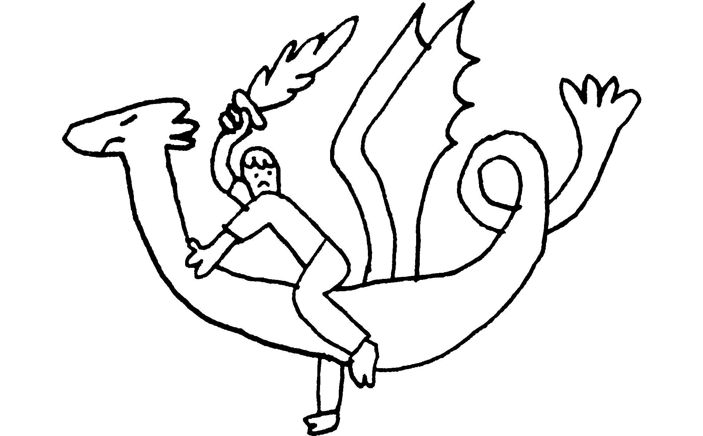
Ça s'est passé en plein cœur d'une bataille épique. On n'avait vraiment peur de rien à l'époque, on chevauchait des dragons, on avait des immenses épées soit faites de feu, soit de lumière, ou à la limite de glace. Et c'était pas le genre de bataille facile, parce que même si on avait des dragons, des épées magiques et tout, on était quand même juste trois enfants, contre des armées entières. Et alors qu'on venait à peine de reprendre l'avantage, subitement, j'ai arrêté de m'amuser.
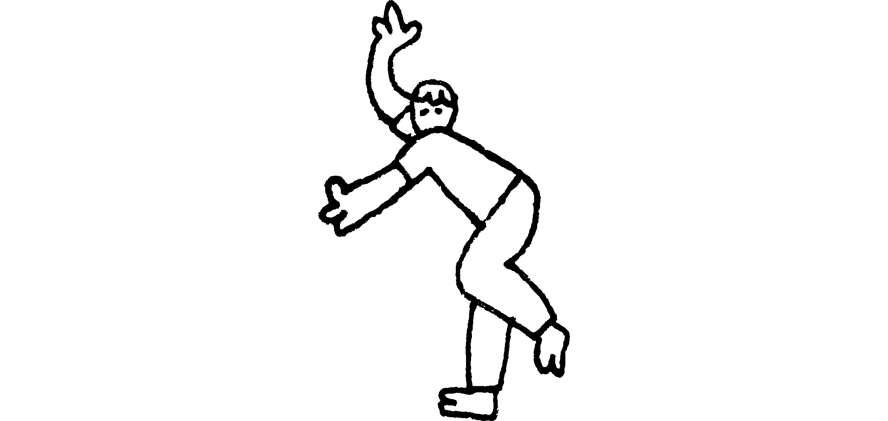
Et il s'avère que j'avais déjà observé des comportements similaires chez des amis un peu plus âgés que moi. Du coup j'ai tout de suite compris ce qu'il se passait. J'ai tout de suite compris que tout ce que j'avais vu, tout ce en quoi j'avais cru, je ne pourrais plus jamais y croire. Et pour la première fois j'ai eu un aperçu de ce que c'est que la mélancolie de vieillir. C'était pas très grave, je n'ai pas pleuré ni rien, c'était léger. Mais j'ai quand même senti que je perdais quelque chose que je ne pourrais plus jamais retrouver.
Après c'est vrai il y avait aussi un petit côté satisfaisant, parce que évidement quand on est enfant, et même pré-ado, puis ado, et même jeune adulte, vieillir globalement c'est plutôt chouette. Plus on vieillit plus on est libre ; plus on vieillit plus on est beau ; plus on vieillit plus on est intelligent. Et puis à un moment ça s'inverse on devient de moins en moins beau de moins en moins intelligent.
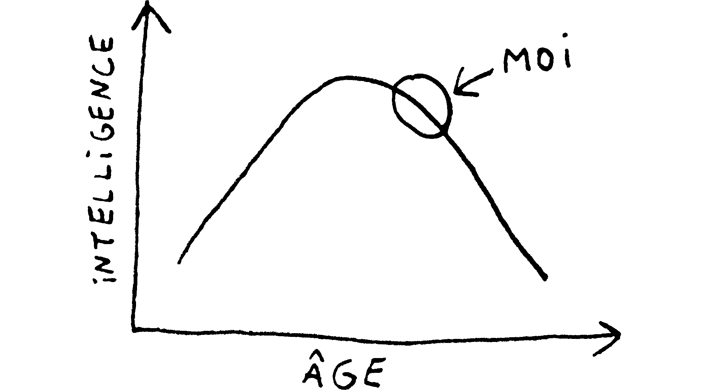
Après je sais bien que quand je dis ça, je n'apprends rien à personne. Tout le monde le sait, même les enfants ils le savent bien. On le voit quand on est enfants que les adultes ils n'aiment pas fêter leur anniversaire, qu'ils n'aiment pas donner leur âge, alors que nous on est tout fier de dire qu'on a presque 6 ans et demi… Attention cependant,
Quand je dis qu'à partir d'un moment en vieillissants on devient bête, c'est un peu plus complexe que ça. Bien sûr qu'en vieillissant on peut très bien gagner de la sagesse, apprendre des choses, voir même dans certains cas rester ouvert. C'est juste que globalement, passé un certain âge, vieillir rend bête (désolé, je ne sais pas comment le dire autrement). Même statistiquement c'est clair, on le voit. Par exemple les vieux ils votent n'importe comment, on a des chiffres là-dessus.
Après ça veut pas dire encore une fois qu'on peut pas apprendre des choses et tout. Moi par exemple j'ai dépassé le pic de mon intelligence, je suis dans la période de ma vie ou je suis de moins en moins intelligent. Et pourtant j'apprends des nouveaux trucs tout le temps. Rien que très récemment par exemple, j'ai appris que le truc jaune qu'on a dans les oreilles ça s'appelait le cérumen. Jusque-là j'avais toujours cru que c'était la cire humaine. Je pense que j'ai pas mal été influencé par une scène de Shrek où il fabrique une bougie à partir de son cérumen. Et comme je savais par ailleurs que les bougies ça se faisait avec de la cire (que, j'avais appris, notamment grâce à Minecraft, qu'on pouvait en faire avec de la cire d'abeille). Du coup, je sais pas, quand les gens disaient cérumen j'entendais cire humaine.
En réalité, aujourd'hui, les bougies (celles qu'on met sur les gâteaux) ce n'est pas fait avec de la cire d'abeille, c'est plutôt fait avec de la paraffine ou de la tristéarine.
Alors traditionnellement sur un gâteau d'anniversaire de naissance, des bougies on en met soit une, soit plusieurs. Mais ça n'a pas de lien avec l'âge de la personne. Je dis ça parce qu'il y a eu à la fin du XXe siècle et au début du XXIe siècle, une coutume dont vous avez sûrement déjà entendu parler qui consistait à mettre autant de bougie sur le gâteau que la personne avait d'années. Par exemple si la personne avait 20 ans on mettait 20 bougies, si la personne avait 5 ans on mettait 5 bougies.
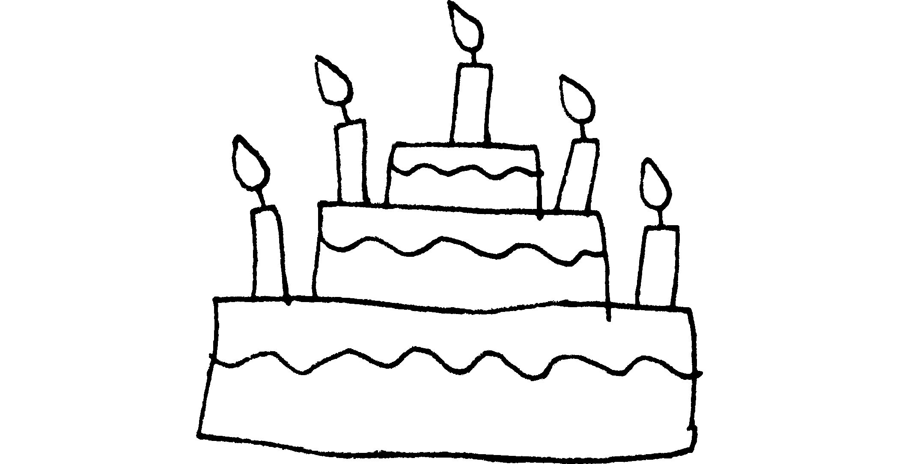
Comme si l'anniversaire ça célébrait l'âge qu'on a. Comme si ça célébrait le fait que l'on vieillisse. Parce que ça j'en ai pas parlé encore, mais j'imagine que c'est clair pour tout le monde : quand vos amis fêtent votre anniversaire de naissance, ce qu'ils célèbrent, c'est votre naissance. Ils célèbrent le fait que vous existiez, le fait que vous soyez au monde. Vos amis ils ne célèbrent pas le fait que vous aillez un an de plus que l'année d'avant, ça a priori ils s'en foutent.
De ce que j'ai compris, c'est en train de disparaître cet usage. C'est vrai que moi, à tous les derniers anniversaires de naissance que j'ai fait, le nombre de bougies sur les gâteaux ne correspondait jamais au nombre d'années de la personne, C'était juste un nombre au hasard.
Après, je me dis que peut-être pour les enfants ça se justifie un peu plus d'avoir le bon nombre de bougies, pour le côté Ludique de compter les bougies et tout. C'est vrai que quand on est enfant, c'est un âge où on aime bien compter. Enfin, je crois… En vrai j'en sais rien, moi ça fait depuis le 10 juillet 2006 que je ne suis plus un enfant, donc comment je pourrais savoir ce que les enfants aiment ou pas ? Parce que j'arrête pas de dire les enfants ils sont comme ça, les enfants ils aiment ça, les enfants ils aiment vieillir les enfants ils aiment compter... Mais la vérité c'est que à partir du jour où on quitte l'enfance, l'enfance ça devient vraiment compliqué à comprendre.
Lire son âge dans le fond des verres à la cantine par exemple. Je l'ai fait à l'époque, comme beaucoup d'enfants. Ça parait simple dit comme ça : tu regardes le chiffre écrit au fond de ton verre, c'est ton âge. Mais moi maintenant aujourd’hui, je suis devenu incapable de comprendre ça. Aujourd’hui, si je regarde le chiffre au fond de mon verre,
je vais voir quoi 36 je vais me dire Non n'importe quoi j'ai pas 36 ans, c'est faux
. Vous voyez ce que je veux dire ? Je suis devenu intellectuellement incapable de faire ça.
Et comme on est incapable de comprendre l'enfance, forcement, on est incapable de mesurer la richesse de la culture enfantine. Ce qu'on appelle la culture enfantine c'est toutes les choses que les enfants inventent et se transmettent sans que l'on intervienne. Et je pense vraiment qu'on est très loin de réaliser à quel point c'est riche et vaste. Et même quand un élément de la culture enfantine arrive jusqu'à nous, on est incapable de s'en rendre compte.
Par exemple, la chanson Joyeux Anniversaire, qui se souvient que c'est des enfants qui ont inventé les paroles, dans une cours de récréation, à Louisville, à la fin du XIXe siècle ? Voici les paroles de cette chanson :
Joyeux anniversaire,
Joyeux anniversaire,
Joyeux anniversaire Prénom,
Joyeux anniversaire !
Alors évidement, quand on lit ces paroles, on se dit que ça ne vole pas haut (d'un point de vue littéraire). On pourrait même se dire que c'est un peu nul. Sauf qu'aujourd'hui Joyeux Anniversaire, c'est la chanson la plus connue du monde ! Donc je pense qu'on doit du respect aux enfants qui l'on écrit.
Louisville c'était aux États-Unis, dans le Kentucky. Donc la version qu'on connaît en France c'est une traduction, la version originale c'était Happy Birthday, mais en gros c'est la même chose. Happy ça veut juste dire Joyeux et Birthday c'est le mot qu'on utilise en général pour traduire Anniversaire.
Bien qu'anniversaire soit souvent utilisé pour traduire birthday, en réalité ce sont deux mots très différents. anniversaire c'est l'union de deux concepts : anni qui veut dire année, et versaire (du latin vertere) qui veut dire tourner. Birthday c'est aussi l'union de deux idées, mais deux autres idées, totalement différentes : birth veut dire naissance et day ça veut dire la date, le jour.
Et c'est vrai que parler de jour c'est très important pour comprendre ce que c'est qu'un anniversaire, c'est aussi important que de parler d'année. Par contre, le concept de naissance, je trouve qu'il limite un peu le sens du mot. Par exemple, comment on fait en anglais pour parler de l'anniversaire de la mort de quelqu'un ? Je ne pense pas qu'on dit death birthday
… Peut-être tout simplement qu'en anglais on ne parle pas des anniversaires de mort, pourquoi pas. En vrai le concept d'anniversaire de mort ça m'a toujours un peu perturbé…
Par exemple cette année, France Mémoire (France Mémoire c'est l'organisme qui décide un peu des anniversaires officiels en France) veut qu'on fête le 100e anniversaire de la mort de Sarah Bernhardt… C'est pas très sympa ! Déjà elle est morte, la pauvre. En soit, être morte c'est pas cool. Mais en plus, 100 ans après, nous on va fêter le fait qu'elle soit morte ?
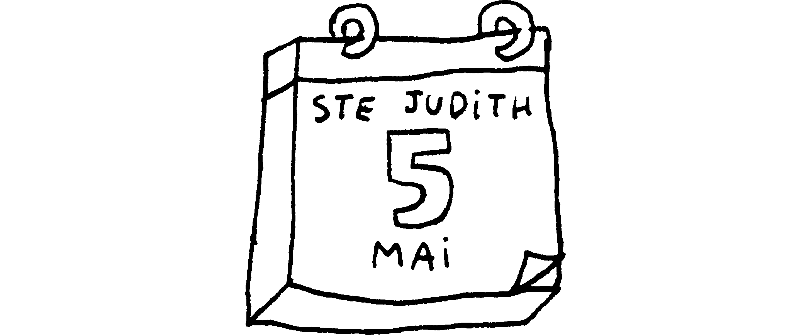
Encore quand France Mémoire ils proposent de fêter le cinquantenaire de la mort de Pablo Picasso je dis pas ! Picasso c'était une ordure, il est mort, tout le monde est content, je veux bien trinquer un coup. Mais Sarah Bernhardt, quand même…
À une époque en France, on était très branchés anniversaire de mort. Ça a pas mal changé récemment, mais de base dans les pays catholiques on aimait pas trop que tu fêtes ton anniversaire de naissance. Pendant longtemps pour l'église, il y avait un anniversaire de naissance qu'on pouvait fêter, c'était celui de Jésus (le 25 décembre) et c'est tout. À part celui-là les autres anniversaires de naissances c'était un peu interdit. Par contre, les anniversaires de mort, c'était OK !
Sauf que le problème avec les anniversaires de mort, c'est que les gens ils ne savent pas forcément à quelle date ils vont mourir. Donc comment on fait pour savoir quand se le fêter ? Et c'est là que l'église a inventé un super concept : le calendrier des saints. En gros le concept c'est que ta fête ce ne sera pas le jour où tu es né, mais le jour ou est morte une personne qui avait le même prénom que toi.
Alors les gens ils avaient trouvé une petite astuce pour un peu de hacker ce système. C'était de donner à un enfant le prénom du saint du jour de sa naissance. Par exemple : tu as une fille qui naît le 5 mai, le 5 mai c'est la sainte Judith, donc tu appelles ta fille Judith. Et comme ça, le jour ou Judith fêtera son anniversaire de naissance, si quelqu'un vient râler, elle pourra toujours lui faire croire qu'elle fête juste la sainte Judith !
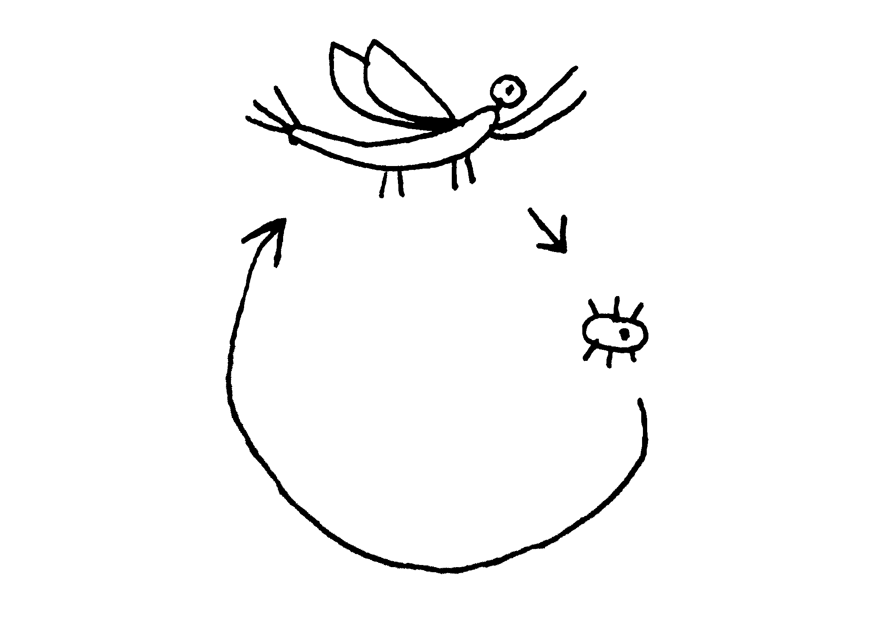
Ce type de calendrier comme ça, avec un seul jour par page, ça s'appelle une éphéméride. C'est un objet magnifique, en tout cas moi j'adore. Chaque jour en se levant le matin, on arrache une page et on la jette à la poubelle (ce qui symbolise un peu le fait qu'on ne peut pas revenir dans le passé). Et c'est toujours un moment très beau, notamment parce qu'il y a ce suspens de savoir sur quoi on va tomber, ce qu'on va trouver derrière. Et on est rarement déçu, parce qu'en général, derrière on trouve une autre date (ce qui symbolise un peu le fait que le temps suit son court).
Le mot éphéméride ça vient de éphémère, un éphémère c'est un insecte très beau aussi, tout en longueur, avec des grandes ailes. Et c'est un insecte qui est indispensable pour comprendre de quoi on parle quand on parle d'anniversaire. D'ailleurs si les éphémères ne s'appelaient pas déjà éphémères, je pense qu'on aurait pu les appeler anniversaires.
Donc les éphémères c'est des insectes qui ne vivent qu'une seule journée. Pendant cette journée ils vont donner naissance à une naïade. Cette naïade, elle va rester sous sa forme larvaire pendant 1 an, et au bout d'un an elle va spontanément se métamorphoser et vivre son unique journée d'éphémère.
Et cette unique journée, vous vous en doutez, elle est très intense. Pour vous donner une idée d'à quel point c'est intense : les éphémères ils ne peuvent pas replier leurs ailes ! Karim m'a même dit qu'il y a des éphémères qui n'ont pas de bouche ! Tellement c'est intense leur vie, ils n'ont même pas le temps de manger !
Vous voyez je pense le lien entre l'éphémère et l'anniversaire, (c'est plutôt évident). Comme l'anniversaire, la vie d'un éphémère c'est une journée, qui vient couronner une année. Comme l'anniversaire c'est la rencontre entre le temps court, et le temps long. Et surtout on retrouve cette idée de cycle, de rotation (comme le versaire dans l'anniversaire qui vient de vertere qui veut dire tourner, on en parlait un peu plus haut). Car, comme vous savez, il y a deux manières d'appréhender le temps. Il y a ce qu'on appelle le temps linéaire et ce qu'on appelle le temps cyclique.
Le temps linéaire c'est simple, il faut s'imaginer quelqu'un qui marche, tout droit, le long d'un chemin, sans jamais s'arrêter.
Le temps cyclique c'est aussi simple, il faut s'imaginer quelqu'un qui marche, le long d'un chemin, sans jamais s'arrêter, mais son chemin a lui il est pas tout droit, il est circulaire.
Ces deux personnages marchent sans jamais faire demi-tour, sans jamais changer de rythme, sans jamais faire de pause, comme le temps qui suit son court. Sur le dessin du temps linéaire on dit que là où se trouve le personnage, c'est le présent, le chemin qu'il a parcouru c'est le passé et le chemin qu'il reste à parcourir c'est le futur. Dans le dessin du temps cyclique c'est un peu différent, le personnage se trouve aussi au présent, mais un cycle représente une année. Quand le personnage aura réalisé un tour complet, il sera l'an prochain à la même date.
Maintenant pour bien comprendre l'intérêt d'avoir ces deux visions concurrentes du temps, on va introduire un événement. On va assister à la naissance d'un nouveau né. Sur chacune des deux représentations du temps, je dessine un nouveau né aux pieds du personnage pour symboliser cette naissance.
Et je pense que vous commencez à saisir en quoi les deux représentations diffèrent. Pour le temps linéaire cette naissance est juste un événement ponctuel qui sera vite oublié une fois qu'il l'aura dépassé. Mais le temps cyclique, lui, repassera par cet événement à chaque cycle, l'événement se répétera chaque année à la même date, cette naissance va devenir un anniversaire. Ça, c'est ce qu'on appelle enrouler le temps. Dans un temps enroulé, tous les événements se répètent à intervalles réguliers, à chaque cycle tel personne naît à nouveau, tel être cher meurt à nouveau, tel événement historique se produit à nouveau, telle guerre se termine à nouveau, tel festival se fête à nouveau. Et années après année les événements s'empilent les uns sur les autres.
Peut-être qu'un jour dans votre vie, vous allez croiser quelqu'un qui vous dira : Ma mère et moi, on est nées le même jour
. Quelqu'un qui n'est pas capable d'enrouler le temps, ne sera pas capable de comprendre cette phrase, et se dira : c'est impossible, on ne peut pas donner naissance le jour de sa propre naissance. Une mère et sa fille ne peuvent pas naître le même jour
. Mais vous, pour qui c'est totalement naturel d'enrouler le temps, cette phrase ne vous posera aucun problème.
La conférence Les anniversaires a été écrite à Bessines sur Gartempe en mai 2023, sur invitation de Graines de Rue pour les 25 ans du festival
La nuit est un lieu que l’on visite toutes les nuits
La nuit est un lieu que l'on visite toutes les nuits.
Manuscrit de la conférence de poche écrite en août 2021 à Cuzals (46).
Par Léon Lenclos (Compagnie Nokill) sur invitation de la Compagnie des Clous.
En italique : le texte n'est pas prononcé.
Entre crochets : les indications relatives aux dessins.
Partie 1 : Savoir faire semblant de dormir.
[page 1]
[dessin : dormeur]
J'ai mis du temps à vraiment savoir faire semblant de dormir.
Je m'allonge, je m'immobilise.
Je relâche mes muscles.
Je ferme les yeux.
Je ralentis ma respiration.
Et de temps en temps : j'émets un signe.
Ça peut être un mouvement, un gémissement, ou un léger changement de position.
Malheureusement, maintenant que je suis plutôt doué, ce savoir-faire il me sert plus à rien.
J'aurais aimé avoir cette faculté de savoir faire semblant de dormir quand j'étais enfant.
À l'époque où la nuit, on était obligés de dormir.
Et où, passée une certaine heure, les adultes venaient régulièrement dans la chambre,
Vérifier qu'on était bien en train de dormir et pas de lire, discuter ou jouer à la gameboy.
[dessin : livre]
Enfant, la nuit c'est le lieu où il faut dormir.
Et c'est une règle qui est difficile à comprendre à cet âge là.
Alors on nous dit : "Il faut dormir car sinon tu vas être fatigué demain".
Mais la fatigue c'est extrêmement abstrait comme concept quand on est enfant.
Enfant, la fatigue ça ressemble beaucoup à une invention d'adulte.
Qui sert juste à nous contrôler ou à nous embêter.
Parfois le soir, les adultes disent aux enfants qui pleurent,
Qu'ils pleurent parce qu'ils sont fatigués.
Mais les enfants ils savent pas ce que c'est la fatigue. Les enfants ils pensent :
"Mais non ! je pleure pas parce que je suis fatigué,
Je m'en fous d'être fatigué, d'ailleurs je suis pas fatigué !
Je pleure parce que je suis triste, je pleure parce que le monde est cruel,
Parce que la vie est injuste !"
Personnellement, c'est extrêmement tard que j'ai compris ce que c'était la fatigue.
(À peu près au début du collège).
Que j'ai remarqué que, en effet, certains jours,
Mes pensées n'étaient pas aussi fluides que d'habitude,
Que mon corps ne m'obéissait pas aussi simplement que d'habitude.
Et surtout, que j'ai remarqué que ces moments arrivaient à chaque fois,
Le lendemain des nuits où j'avais lu en secret jusqu'à 2h du matin (ou plus).
Et du coup, jusqu'à cette époque le fait qu'il fallait dormir la nuit c'était vraiment un mystère.
Partie 2 : Passer d'un jour à l'autre
À force d'y réfléchir j'ai quand même fini par dégager une raison,
Que je considère encore aujourd'hui comme une bonne raison (une raison valide) de dormir :
On dort pour pour passer du jour au lendemain.
Passer du jour au lendemain c'est important,
Tout le monde est d'accord là-dessus.
Personne ne s'imagine vivre toute sa vie dans la même journée.
Or le passage du jour au lendemain ne se fait pas tout seul.
On a tendance à l'oublier car pour des raisons pratiques,
La journée administrative se termine à heure fixe.
À minuit on passe officiellement d'un jour à l'autre.
[dessin : horloge]
Mais tout le monde sait que ce changement de journée à minuit est totalement arbitraire.
Et que ça ne correspond à rien de réel.
Par exemple :
Si vous décidez de faire la fête samedi soir,
(Pour une raison ou pour une autre (ou même sans aucune raison)).
Cette fête du samedi soir,
Ne va pas devenir une fête du dimanche matin dès que vous aurez passé minuit.
À 3h du matin, si vous êtes encore réveillés, ce sera toujours samedi soir.
À 4h du matin, si vous décidez d'aller vous coucher, vous serez toujours samedi.
Ce n'est que quand vous vous réveillerez le lendemain qu'il sera dimanche matin.
Et le petit malin qui vous dit qu'il est dimanche un samedi soir à 1h du matin,
Il ne dit pas ça sérieusement.
Il essaye juste de faire une blague,
Pour souligner l'inconsistance du découpage administratif des journées.
La vérité c'est que pour passer d'un jour à l'autre, il faut une nuit de sommeil.
Et c'est pour ça,
Que les gens vaquent à leurs activités le jour et dorment la nuit.
Alors vous allez me dire : "pourquoi pas l'inverse ?".
C’est vrai, pourquoi pas vaquer à ses activités la nuit et dormir le jour ?
Eh bien c'est simple : à une époque où on n'avait pas encore inventé le feu,
La lampe à huile, la lampe à gaz, l'électricité, etc.
La nuit était un lieu où c'était quasiment impossible de vaquer à ses activités.
Du coup on a préféré dormir la nuit et vaquer à nos activités le jour.
Et depuis, on a gardé l'habitude.
Aujourd'hui, qu'on a inventé le feu, la lampe à huile, la lampe à gaz, l'électricité, etc,
Il y a bien des gens qui vaquent à leurs activités la nuit et qui dorment le jour.
Je sais pas à quel point ils sont nombreux ou pas, moi j'en connais pas.
Mais en même temps c'est normal parce que quand ils vaquent à leurs activités je dors.
Et quand moi je vaque à mes activités c'est eux qui dorment.
Donc forcément il y a peu de moments où on peut se croiser.
Mais bon, de ce que j'ai entendu, je pense qu'on peut dire que,
Au moins presque tout le monde dort la nuit.
Et la conséquence de ça c'est que la nuit est noire.
Partie 3 : La nuit est noire car on a les yeux fermés
On pense que la nuit est un endroit qui est obscur,
Parce qu'il n'est pas éclairé par le soleil.
Et c'est pas totalement faux.
Mais, la raison principale pour laquelle la nuit est noire
C'est que tout le monde a les yeux fermés.
(D'ailleurs une nuit où on ne ferme pas du tout les yeux, on appelle ça une nuit blanche).
Quand on a les yeux fermés tout est obscur.
Vous pouvez même faire l'expérience maintenant :
Fermez les yeux et vous verrez : tout est noir.
De manière générale ce qu'on ne regarde pas est par définition obscur, invisible.
[page 2 (tourner la page)]
C'est en ceci que la théorie de l'émission,
Une théorie de la vision formulée notamment par Euclyde,
Ne me paraît pas si absurde que ça.
[dessin : émission]
Pour Euclyde la vision fonctionne grâce à des rayons émis par l'œil.
Ces rayons, si on les additionne, prennent la forme d'un cône.
(Dont le sommet est le centre de l'œil).
Et donc, la théorie de l'émission, c'est vraiment l'idée d'un feu intérieur,
La lumière est émise depuis l'intérieur de l'œil vers l'extérieur.
Et c'est quand cette lumière rencontre un objet, que l'objet devient visible.
Bien sûr, cette théorie a ses limites. Par exemple :
Elle n'explique pas pourquoi on ne peut pas voir un objet s'il n'y a aucune source de lumière.
Mais la théorie de la vision qui est admise aujourd'hui.
Qui dit que la lumière fait le chemin inverse (depuis l'objet vers l'œil),
Elle a aussi ses limites :
Elle est beaucoup moins efficace pour discuter de cette réalité :
[dessin: monstre]
Les choses ne sont visibles que si on les regarde.
Les choses que l'on ne regarde pas sont invisibles.
Et c'est pour ça que je disais tout à l'heure que :
La principale raison pour laquelle la nuit est noire,
C'est qu'on ne la regarde pas.
Vous pouvez faire l'expérience :
Une nuit ouvrez les yeux et vous verrez que quand on a les yeux ouverts,
La nuit n'est pas si obscure que ça.
Même si elle n'est pas éclairée.
En fait paradoxalement,
Les choses la nuit sont d'autant plus visibles qu'elles ne sont pas éclairées.
Partie 4 : Plus la nuit est éclairée, moins on la voit.
La plupart du temps, plus il y a de lumière mieux on voit les choses.
Mais la nuit nous rappelle que parfois c'est aussi l'inverse.
Je pourrais prendre l'exemple des animaux nocturnes,
Que l'on observe beaucoup mieux quand il n'y a aucune lumière.
Je pourrais prendre l'exemple des monstres.
Tout le monde a assimilé depuis sa plus tendre enfance.
Que les monstres ne sont visibles que dans l'obscurité la plus totale.
Mais je vais plutôt aborder le cas des étoiles.
[dessin : étoiles]
Pour comprendre ce qui se passe avec les étoiles,
Il faut d'abord comprendre que l'air qui nous entoure n'est pas totalement transparent.
Quand il y en a peu (comme par exemple entre vous et le dessin) il semble transparent,
Mais s'il y en a suffisamment et s'il est bien éclairé, l'air est visible.
D'ailleurs il a même une couleur : l'air est bleu.
Le jour, le soleil est tellement puissant,
Que l'air au-dessus de nos têtes n'est plus transparent du tout.
Il ne laisse passer aucune lumière et on ne voit donc aucune étoile.
(Enfin, en réalité, on ne voit qu'une seule étoile : le soleil lui-même).
Dans certains endroits comme par exemple à Paris (où j'ai vécu 8 ans de ma vie).
La ville de nuit, émet une lumière.
Alors, c'est une lumière qui est bien moins puissante que celle du soleil,
Mais l'air là-bas est beaucoup plus épais qu'ailleurs.
Si la lumière des lampadaires à Paris avait la même couleur que la lumière du soleil,
L'air serait bleu la nuit comme en plein jour.
Pour cette raison les lampadaires sont de couleur plutôt chaude,
La nuit à Paris, l'air est donc opaque comme le jour, mais orange clair.
Et du coup on peut bien distinguer le jour de la nuit ce qui est plutôt pratique.
Dans d'autres endroits comme par exemple ici où je viens de passer une semaine,
Dans ce qu'on appelle depuis le début des années 2000, le triangle noir du Quercy,
Quand il y a ni lune ni soleil, l'air n'est pas du tout éclairé. Il est donc transparent.
Partie 5 : La distance des étoiles.
De manière générale donc,
La nuit est le seul lieu sur terre où l'on peut voir ce qu'il y a derrière l'air :
C'est à dire principalement : les étoiles.
Alors... Les étoiles...
[page 3 (tourner la page)]
Les étoiles sont au nombre d'une infinité.
(Heureusement on ne les voit pas toutes,
Sinon, comme l'a fait remarquer Olbers,
Le ciel tout entier serait partout aussi brillant que le soleil).
Et aussi, c'est important :
Les étoiles sont extrêmement loin de nous.
Pour vous donner une idée, l'étoile la plus proche qu'on peut observer la nuit,
(Proxima du Centaure) est à 4 a.l. de la terre.
4 a.l. ça veut dire que la Lumière met 4 ans à nous arriver de cette étoile.
4 ans c'est beaucoup.
Surtout pour la lumière qui est (je sais pas si c'est nécessaire de le rappeler),
Tellement rapide que rien ne peut aller plus vite qu'elle.
Pour vous donner une idée de ce que ça représente 4 a.l je vais faire un dessin à l'échelle :
[dessin : soleil et terre à l'échelle]
[diamètre soleil : 1cm ; distance terre-soleil : 1m]
L'échelle de ce dessin c'est 1:150 000 000 000 ("le cent-cinquante milliardième")
Le soleil est donc en réalité 150 milliards de fois plus grand que sur le dessin.
Et la distance entre la terre et le soleil 150 millards de fois plus grande.
(La terre ne peut pas être représentée.
Car pour être à l'échelle elle devrait mesurer moins d'un dixième de millimètre.
Et je n'ai pas de feutre assez fin).
Pour pouvoir représenter Proxima du Centaure sur ce dessin,
Il me faudrait (vous vous en doutez) une feuille beaucoup plus grande.
En fait il me faudrait précisément une feuille qui aille jusqu'à Marseille.
(environ 200km)(Querçy/Marseille c'est plutôt 500 km, mais ça n'a peut-être pas d'importance, c'est peut-être une erreur volontaire)
Et comme je disais, Proxima du Centaure est l'étoile la plus proche de nous.
Toutes les autres étoiles sont beaucoup plus loin.
L'objet le plus lointain qu'on peut voir à l'œil nu,
(Si on se concentre bien et que les conditions sont bonnes),
C'est la galaxie d'Andromède (une galaxie c'est-à-dire un gros groupe d'étoiles).
Pour pouvoir représenter la galaxie d'Andromède sur ce dessin,
Il me faudrait (vous avez compris) une feuille beaucoup plus grande.
Beaucoup plus grande que la feuille sur laquelle je pourrais représenter Proxima.
Il me faudrait une feuille qui aille jusqu'au soleil.
(Le vrai soleil, pas le soleil du dessin).
Je sais pas si c'est clair...
Enfin voilà.
Ce qu'il faut retenir c'est que dans le ciel,
Certaines étoiles sont très très très loin,
Et d'autres sont extrêmement extrêmement extrêmement loin.
Seulement voilà,
Notre regard n'est pas du tout taillé pour apprécier ce genre de distances.
[page 4 (tourner la page)]
Et pourtant on possède plein de méthodes pour évaluer les distances des choses.
[dessin : arbres]
Par exemple si je dessine deux arbres :
Vous pouvez deviner que le deuxième est plus loin que le premier, car il est plus petit.
Si j'en dessine un troisième,
Même s'il est plus grand, vous pouvez deviner qu'il est plus loin que le premier.
Car il est en partie occulté (masqué) par le premier.
Une autre méthode efficace pour évaluer les distances c'est la parallaxe : Si vous vous déplacez sur la gauche,
Vous verrez l'arbre proche se déplacer vers la droite,
L'arbre lointain se déplacer un peu moins,
Et l'arbre du fond se déplacer encore moins.
[dessin : lune]
Un objet très lointain ne se déplacera pas.
C'est quelque chose qui est frappant quand on regarde la lune en voiture.
C'est comme si elle nous suivait.
Tous les autres objets se déplacent plus ou moins à toute vitesse dans la même direction.
Mais la lune ne se déplace pas du tout.
C'est que la parallaxe,
Comme toutes les autres méthodes dont on dispose pour évaluer les distances,
Sont inefficaces pour les objets très lointains.
[dessin : étoiles]
La conséquence de ça c'est qu'on voit toutes les étoiles sur le même plan.
Comme si elles étaient toutes à la même distance de nous.
C'est ce qu'on appelle la voûte céleste.
Une sorte d'immense plafond au-dessus de notre tête.
Assez loin de nous mais pas tant que ça. Juste derrière la lune et le soleil.
Sur lequel toutes les étoiles sont fixées.
La voûte céleste c'est une des choses qui fait que,
La nuit est le plus bel endroit sur terre.
Partie 6 : Le plus bel endroit sur terre.
[page 5 (tourner la page)]
Alors oui, juste avant de finir :
Je me rends compte qu'il faudrait que j'éclaircisse un peu ce point là :
Parce que depuis tout à l'heure je parle de la nuit comme d'un endroit,
Mais je me rends compte que c'est pas forcément évident pour tout le monde.
Et c'est normal : la nuit de notre point de vue ressemble beaucoup à un moment.
Pourtant, fondamentalement c'est un lieu.
Comment expliquer ça...
Bon. Par exemple :
[dessin : train]
Pour venir ici j'ai pris le train depuis Marseille.
Et j'ai dormi de Arles à Montpellier.
(Jusque-là ça va ?)
Normalement quand on dit "j'ai dormi de ... à ..." on utilise des repères temporels.
Par exemple : "j'ai dormi du début à la fin du film".
Le début et la fin du film sont des repères temporels.
Arles et Montpellier par contre, ce sont des lieux.
Qu'est-ce qui me permet de dire "J'ai dormi de Arles à Montpelier" ?
C'est que j'étais dans un train en mouvement.
De mon point de vue Arles et Montpelier étaient comme des moments.
Si la nuit semble être un moment c'est uniquement car on est sur terre,
Et que la terre tourne sur elle-même (au rythme d'un tour toutes les 24h).
[dessin : terre]
De la même manière que Arles et Montpellier sont des lieux,
Que j'ai vécus comme des moments car j'étais dans un train en mouvement.
La nuit est un lieu,
Que l'on vit comme un moment car on est sur une terre en mouvement.
[dessin : nuit]
Donc ça c'est la nuit que je représente hachurée sur le dessin.
En dessin la nuit c'est ce qu'on appelle une ombre propre.
C'est l'ombre de la terre sur elle même produite par le soleil.
[dessin : soleil]
Si on prend du recul,
Et qu'on se place du point de vue du soleil, on voit bien que la nuit est immobile.
C'est la terre qui tourne.
La nuit est un lieu.
C'est le plus bel endroit sur terre.
Et on a la chance de le visiter toutes les nuits.
Fin.
Annexe 1 : Les dessins.
[page 1]
La conférence La nuit est un lieu que l’on visite toutes les nuits a été écrite à Cuzals en août 2021, sur invitation de la Compagnie des Clous
Les pareurs
J'ai vécu pendant environ 3-4 ans dans un appartement dont l'unique fenêtre donnait sur la rue Guy Mooquet. Et notament sur le 65 rue Guy Moquet qui était l'immeuble juste en face du mien. La particularité de cet immeuble c'est qu'il est un peu plus petit que tous les autres immeubles de la rue. Et du coup ça fait une sorte de créneau qui laisse apparaître derrière tous les toits de la ville. Et l'autre particularité de cet immeuble, c'est qu'au dernier étage, il y a un homme qui habite, et qui passe son temps à travailler. Son appartement il mesure trois fenêtres. Celle de gauche, c'est sa chambre, celle de droite c'est sa salle de bain (avec, bien sûr, des vitres faites de telle sorte à que l'on ne puisse pas voir à travers) et la fenêtre du milieu c'est son bureau, où il passe à peu près 13 heures par jours, dos à la fenêtre et face à une immense bibliothèque. Je ne sais pas ce que c'est son travail mais il n'a pas d'ordinateur et il écrit beaucoup. Et l'époque où j'habitais en face de chez lui j'ai vraiment passé du temps à l'observer et ça m'a fait me poser pas mal de question sur le voyeurisme et l'annonymat dans les grandes villes.
Et un soir alors que je rentrais chez moi, un peu comme tous les soirs je vais à ma fenêtre pour observer cet homme, et sur les toits, juste derrière chez lui, il y avait trois ouvriers qui travaillaient. Et ça a tout de suite attiré mon attention parce que je n'arrivais pas à comprendre ce qu'ils faisaient. C'est à dire qu'il travaillaient, ça c'est sûr, ils avaient des outils, ils étaient actifs, ils n'étaient pas là à rien faire. Mais c'était rien de précis, c'était très flou. Je suis résté environ 20 minutes à les observer sans comprendre ce qu'ils faisaient et c'est seulement des années plus tard que j'ai compris que ceux que j'avais vus ce soir là, c'était les pareurs. Les pareurs de Paris, c'est une histoire vraiment incroyable, et je n'arrives pas à comprendre pour quoi à chaque fois que j'en parle à quelqu'un, personne n'est au courant.
Donc les pareurs c'est trois personnes. C'est une organisation qui a été crée à l'époque du second empire (le baron Haussman, les grands travaux à Paris, etc.) et la mission qui leur a été donnée c'est d'apporter des retouches, des modifications sur les toits de la villes, pour donner aux toits de Paris un aspect plus pitoresque. Et donc leur vie, c'est qu'ils vont de toits en toits, ils font leur actions, ils font leur modifications, et le jour où ils en ont marre ou qu'ils sont trop vieux, ils forment un remplaçant et ils démissionnent. Et ils sont totalement indépendant dans l'exercice de leur métier, malgrè le fait que ce soit finnancé à 100% par la ville de Paris.
Le type d'action qu'ils vont faire ça va être par exemple si à un moment ils arrivent sur un toit où les tuiles sont très sales, ils vont en nétoyer mais juste une. Parfois quand ils sont face à un conduit de cheminé avec toutes les cheminées bien alignées comme ça ils arrivent avec une disqueuse et ils en scie certaines pour donner à la silhouette du bâtiment un aspect un peu plus accidenté. Ça leur arrive de tendre un cable qui ne sert à rien entre deux objets. Ils se sont beaucoup battus pour que toutes les antennes de télévisions hertzienne qui ne sont plus uttilisées restent sur les toits de la ville, pareil pour les antennes paraboliques en panne.
C'est très beau leur travail (en tout cas moi j'aime beaucoup) et c'est très discret. C'est pas évident de remarquer leur présence quand on ne les connait pas tellement c'est subtile. Et même quand on les connaît, c'est pas facile de faire la différence entre ce qui est d'eux et ce qui est juste du hasard. Je regrette beaucoup maintenant que je sais à qui j'avais à faire, de ne pas être résté plus longtemps à les observer. C'est quand même pas tous les jours qu'on peut voir des pareurs en face de chez soit. Déjà que ce n'est pas tout les jours qu'on peut simplement voire des gens sur les toits. Alors qu'il y en a des gens sur les toits à PAris. Entre les ouvriers couvreurs, les ramoneurs, les urbexplorateurs, les taggeurs, les cambrioleurs, les pareurs. Mais je ne sais pas pourquoi : tous ces gens là, on ne les voit pas.
On raconte que Einstein (Albert), le jour ou il a eu l'idée de la relativité générale, il était en train d'observer un ouvrier qui travaillait sur un toit par la fenêtre de son bureau. Il regardait cet homme travailler, et dans un moment de rêverie sadique, il s'est imaginé l'homme tombé. Et il s'est posé la question suivante : Est-ce que pendant sa chute, cet homme a senti le poid de son propre corps ? Alors bien sûr que non. C'est le principe d'une chute libre. quand on est en chute libre, on ne sent pas le poid de son propre corps. Et ça einstein il le sait bien, il n'est pas bête (c'était déjà connu à son époque). Ce qui est interessant c'est pas vraiment cette question en particulier, c'est tout le cheminement de pensée qu'il va y avoir ensuite. Mais l'annectote qui est drôle c'est que beaucoup plus tard, des années après, Einstein il a vraiment rencontré un ouvrier qui était tombé d'un toit et qui avait survécu. Il lui a donc posé la question : "Est-ce que pendant ta chute tu as senti le poid de ton propre corps ?". L'ouvrier a répondu qu'il ne s'en souvenait pas, qu'il se souvenait seulement qu'il avait eu très peur. Et comme Einstein ne s'interess pas du tout à la peur et aux phénomènes psychologiques, il ne lui a pas demandé de quoi il avait eu peur. Et donc l'histoire ne nous le dit pas. On peut s'imaginer qu'il a eu peur de se faire mal en tombant, mais en fait on n'en sait rien, si ça se trouve il a eu peur d'abimer le sol.
Parce qu'on sait que quand un objet tombe sur un autre, au moment de l'impact, le choc qui est ressenti par l'objet qui tombe est exactement le même que celui qui est ressenti par l'objet sur lequel il tombe. Ça c'est l a troisème loi de Newton, la réciprocité des forces. En gros : si vous faites tomber un marteu sur une vitre, vous aurez exactement le même résultat que si vous faites tomber une vitre sur un marteau. Et ça ça nous interesse par rapport aux toits. PArce que justement les toits, il y a des choses qui tombent dessus. En fait c'est même précisément à ça que ça sert un toit, ça sert à que des choses tombent dessus. Ce qui tombe le plus souvent sur les toits c'est de l'eau (quand il pleut). Il faut s'imaginer la pluie donc c'est plein de gouttes d'eau qui tombent les unes après les autres sur le toit. Au moment de l'impact ces gouttes d'eau vont se briser, secasser en des milliers de petites goutelettes. Mais si un jour il pleut particulièrement beaucoup, et que ce jour là la pluie est particulièrement lourde (voir solide) alors ça va être le toit qui va s'abimer, parce qu'il y a une réciprocité des forces. Et on ne veut pas que le toit s'abime, du coup nous (les humains) avons a eu une suepr idée, c'est de construire les toits penchés. Parce qu'en effet, si le toit est penché, il y a beaucoup moins de chance qu'il s'abime.
Ce qu'il faut retenir, c'est qu'on construit les toits penchés. Bien sûr, si on est dans une région où il ne pleut pas beaucoup, opn va le pencher pas beaucoup. Si, au contraire, on est dans une région où il pleut beaucoup, on va le pencher beaucoup. On compte les pentes des toits en pourcentage donc sur ce schéma ça va de 12% à 65%, c'est des choisis arbitrairement, en fait il n'y a pas vraiment des règles, on fait un peu ce qu'on veut. On peut très bien s'imaginer un toit avec une pente de 95%, ça donnerait qulquechose comme ça :
Et la prochaine fois que vous faites le trajet en voiture de Allicante jusqu'à Ostende, observez bien les toits sur le bord de la route et vous verrai qu'en effet, plus vous allez vers le nord, plus vous allez vers des régions pluvieuses, plus les toits, eux monteront vers le ciel.
Alors là il y a un petit piège, peut-être que vous l'aveze deviné : Plus un toit est penché, moins il va s'abimer en cas de pluie. Alors on pourrait se dire "Pourquoi ne pas faire directement un toit avec une pente de 100%, pour être sûr de ne pas avoir de problème ?" Sauf que si vous faites ça, vous allez vous retrouver avec les deux pans du toit parallèle, et la pluie va tomber entre les deux. Donc c'est une mauvaise idée.
De toute façon on a de moins en moins ce genre de problème parce qu'aujourd'hui, grace aux progrès qu'on a fait en architecture et en materiaux, on est capblaes de construire ce qu'on appelle des toits plats.
Il y a une règle d'or avec les toits. Si vous devez retenir une chose de ce livre c'est ça : un toit, c'est toujours penché. Sauf que parfois, on a besoin (ou envie) que des gens marchent sur les toits, et si les gens marchent sur des toits tels qu'on les a dessinés plus haut, ils risquent de tomber. Et personne n'a envie de tomber d'un toit (à part Bas Jan Ader). Du coup on a eu l'idée du toit plat, qui est un toit penché bien sûr, comme tout les toits, mais avec une pente très faible : de 1% à 2%. Ce qui permet que l'eau tombe mais pas l'humain qui marche dessus.
Ça a un autre avantage les toits plats c'est que pour une même hauteur de bâtiment on va pouvoir mettre beaucoup plus de gens dedans. Si vous êtes dans une région ou beaucoup de gens veulent habiter et que les toits ne sont pas plats, quelqu'un va devoir virvre dans le toit. Et personne n'a envie de vivre dans le toit (je sais de quoi je parles).
En été la chaleur c'est juste atroce, quand il pleut ça fait un bruit pas possible, comme les murs sont penchés on ne peut pas vraiment mettre de meubles, on ne peut se tenir debout que sur une toute petite surface.
Alors évidement quand on voit ce personnage dans sa chambre de bonne, on n'a qu'une envie c'est qu'il fasse ça :
Et là c'est beaucoup mieux. Maintenant ce personage vit dans une mansarde. Une mansarde c'est un toit comme ça dont chaque versan est divisé en deux pans, le terrasson et le brisis, alignés autour de la ligne de bris. Ça s'appelle une mansarde à cause de François Mansart, l'architecte qui aurait inventé ça. Je dis aurait inventé parce qu'en réalité on sait que Pierre Lescot, cent ans avant la naissance de Mansart, il avait déjà construit une aile du louvre qui avait cette forme. Mais bon , on n'appelle pas ça une Lescotte. Et Pierre Lescot il n'a pas beaucoup de mérite non plus parce que si on regarde par exemple les tentes noirs des Gilzai (un peuple nomade) on n'a déjà cette forme depuis des sciècles et des sciècles. Et il y a une grande difference, très importante entre la tente noire des Gilzai et la mansarde de Mansart, c'est que dans le premier cas, la personne qui a dessinée, celle qui a construit et celle qui a habité le batiment, ça peut être une seule et même personne. Alors que dans le second cas, on sait que c'est minimum trois personne differentes.
Je parle de ça parce qu'en ce moment je suis en train de lire un livre qui s'appelle L'Architecture de survie. Et c'est beaucoup sur ces questions d'autoplanification. De comment on pourrait nous même s'occuper des villes et des batiments dans lesquels on habite, sans que ce soit forcément des bureaux d'architecte et d'urbaniste (totalement déconnecté de nos besoins réels) qui s'en chargent. C'est drôle parceque c'est un architecte qui a écrit ce livre, et dedans il crache beaucoup sur le metier d'architecte (sur son propre métier). Par exemple il y a une phrase qui revient souvent dans le livre : On n'a pas besoin des architectes pour dessiner nos maisons. Et c'est pas faux quand on y pense ! Les maisons c'est à peu près le premier truc qu'on apprend à dessiner quand on est enfants :
Moi je me souviens j'avais appris à dessiner ça et deux trois autres formes et je ne pouvait plus m'arrêter, j'en faisait partout.
À la même époque j'avis appris à dessiner les usines. C'est très beau une usine. Ça a un toit en dents de scie (on appelle ça des sheds). Et c'est pas évident de comprendre la raison d'être de cette forme. Pourquoi les usines ont des toits comme ça ? Je pense que si on veut vraiment comprendre il faut se mettre à la place du fabricant d'usines. Sauf que le fabricant d'usine, malheurreusement, on sait peu de choses sur lui. En fait on sait deux choses : On sait que c'est un fabricant, et on sait qu'il fabrique des usines.
Alors premièrement c'est un fabricant. Donc comme tous les fabricants du monde, il a une usine, mais son usine elle ne ressemble pas au dessin ci-dessus parce que vous comprenez bien que si elle ressemblait à ça, une fois qu'il aurait construit l'usine à l'interieur, il ne pourrait pas la sortir, la porte est trop petite. Donc ce qu'on peut déduire c'est que son usine elle ressemble au moins à ça :
Avec une grande porte, comme ça il peut tranquilement construire l'usine à l'interieur et quand il a fini il la met dehors avec les autres.
L'autre choses qui est très importante quand on est un fabricant (de quoi que ce soit) c'est ce qu'on appelle le stock. Par exemple, si tu construit des balais, tu ne va pas attendre qu'on vienne te demander un balai pour le construire. Par ce que sinon, ler temps qque tu le construise, ou ton client il n'en aura plus envie, ou pire, il sera allé voir ailleur (chez un concurent). Du coup tu fait ce qu'on appelle un stock, tu construit d'un coup 100 balais et quand on vient te voir pour un balai ou même 10 balais, tu peux directement les donner, et puis renouveler ton stock.
Le fabricant d'usine, on l'a déjà dit, c'est un fabricant. Donc il a les mêmes p^ropblèmatiques que le fabricant de balais. Sauf que le problème avec les usines, comparé aux balais, c'est que c'est très grand ! Et son terrain à lui, il n'est pas infini. D'où l'idée magnifique du toit en sheds, qui permet en fait d'empiller les usines comme ça, en quinconce, les unes sur les autres :
Vous comprenez pourquoi c'est une super idée. Non seulement la place est totalement optimisée, aucun espace vide. Mais aussi grace au toit en dents de scie on est sûr que ça ne va pas glisser et tomber. Si les toits ressemblaient à des maisons ça ne marcherait pas du tout, ça risquerait de tomber et le toit pourrait s'abimer. Et personne n'a envie d'acheter une maison avec un toit abimé ! Pourquoi ?
Lea première raison c'est les fuites. Quand le toit est abimé, il pleut à l'interieur.
Et la deuxième raison, qui est selon moi la plus importante, la plus grave, c'est que quand un toit est abimé, tout le monde sait qu'il peut y avoir une tuile qui tombe. Et tout le monde sait qu'une tuile qui tombe, ça peut tomber sur la tête de quelqu'un. ET cette personne, sous le choc, elle peut mourrir. Et ça, ça pose des gros problèmes, philosophiquement parlant. Spinoza il en parle dans L'Éthique.
Pourquoi il parle de ça Spinoza, c'est parce qu'il y a quelquechsoe qui est très important pour lui, dans sa philosophie et particulièrement dans ce texte, c'est l'idée que la nature ne poursuit jamais aucun but. Il dit "Les causes finales ne sont que fictions humaines". (Causes finales ça ne veut pas dire qui arrivent à la fin, ça veut dire qui sont liés à une finalité, à un but).
Sauf qu'en face de lui il y a les méchants. Les detracteurs de Spoinoza. Et eux ils pensent tout l'inverse. Pour eux si la tuile est tombée sur la tête de l'homme, c'est parce que l'homme devait mourrir. En fait, la tuile elle est tombée pour tuer l'homme. Et sinon comment expliquer l'homme est passé par là, pile à cet instant précis et que pile à cet instant là, la tuile est tombée. Bien sûr Spinoza il va répondre que l'homme passait par là parce que (par exemple) il allait voir un ami, et la tuile est tombé parce que (par exemple) il y a eu un gros coup de vent. Mais alors, comment expliquer que pile ce jour là l'homme devait aller voir son ami et que comme par hasard, à cet instant précis, il y a eu un gros coup de vent !
Spinoza il critique beaucoup cette façon de discuter. Il appelle ça la réduction à l'ignorance. Parce que vous comprenez bien qu'à chaque fois qu'il proposera une cause possible à ce qu'on lui demande de justifier, on n'aura qu'a lui demander quelle est la cause de cette cause, et ainsi de suite, jusqu'à ce qu'il soit obligé de se retrancher dans la volonté divine. Mais la volonté divine, Spinoza il n'en veut pas, alors il continu de discuter, malgrè lui. Il va dire "Il y a eu un gros coup de vent parce que la mer la veille, par un temps encore calme, commençait a s'agiter. Et l'homme devait aller voir son ami parce que son ami est chapelier et il fallait qu'il parle à un chapelier.
Mais pourquoi la mer, la veille, par un temps encore calme, s'était mise à s'agiter ? Et pourquoi l'homme avait tant besoin de voir un chapelier ?
Peut être qu'il rentrait dans grand voyage ou il avait visité les habitants de ce petit village de sibérie qui portent tous des chapeaux differents (chapeaux qui sont des version miniatures du toit de leur maisons). Il trouvait ça interessant et comme il ne connaissait ni antropologue, ni architecte, il s'est dit qu'un chapelier ça pourrait être un bon interlocuteur pour parler de ces gens là.
Mais comment expliquer que ces hommes éprouvent un tel besoin de porter des chapeaux qui font référence aux toits de leur maisons ?
Je sais pas, peut être que ça joue un rôle dans leur communauté ? Que ça les aide à organiser leur vie ensemble, d'une manière ou d'une autre. Par exemple, tu rencontre quelqu'un que tu n'as jamais vu, tu sais directement ou il habite. Ça peut servir. Ou peut-être juste que c'est des humains. Et c'est vrai que c'est pas évident à justifier mais les humains on est un peu comme ça, on aime bien se décorrer. Même mon voisin d'en face, qui passait son temps à travailler, un jour je l'ai vu à la fenêtre de son bureau, face à la rue, face à moi. Au début j'ai eu peur, forecment, j'ai cru qu'il pme regardait le regardant. Mais en fait j'ai assez vite compris qu'il regardait son reffletr dans la vitre. Il était là à défaire un bouton de sa chemise, et puis il en remettait deux, et il essayait differentes combinaisons de boutons comme ça, pour voir celle qui lui allait le mieux. Au final il a remis tous ses boutons dans la combinaison initiale et il est retourné à son bureau, pour travailler.
La conférence Les pareurs a été écrite à Pantin en mars 2017, sur invitation du collectif Process’art pour l’exposition SHEDS
À propos des bouteilles de lait
Le lait contient des substances organoleptiques qui sont très sensibles à la lumière. Organoleptique c'est un mot qui peut faire un peu peur quand on l'entend pour la première fois mais en réalité ça désigne quelque chose de très simple : les substances qui interagissent avec nos organes sensoriels. Pour le lait, l'organe sensoriel qui nous intéresse c'est celui du goût, ce qu'il faut comprendre c'est donc que la lumière altère le goût du lait.
Et c'est pour ça (si vous vous posiez la question) qu'on construit les bouteilles de lait dans un plastique spécial, le PEHD opaque, qui a la particularité, comme son nom l'indique, de ne pas laisser passer la lumière. Malheureusement, s'il ne la laisse pas passer dans un sens, il ne la laisse pas non plus passer dans l'autre, et c'est pour cette raison, qu'il est impossible, pour n'importe quel être humain, de savoir sans la toucher, si une bouteille de lait est vide ou pleine.
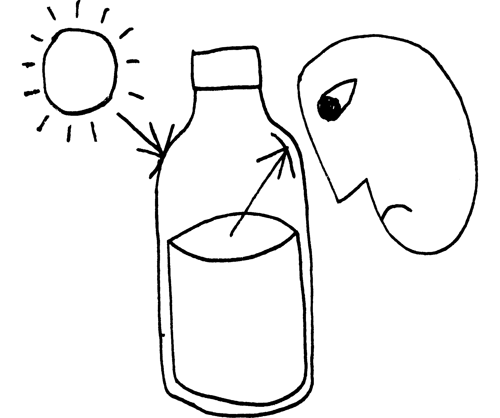
Et ça, ça a pour conséquence un phénomène que je trouve assez intéressant. Qui n'est pas forcément spécifique aux bouteilles de lait mais qu'on a rarement l'occasion d'observer ailleurs. Quand on s'empare d'une bouteille de lait en pensant qu'elle est vide alors qu'elle est pleine, elle va nous sembler extrêmement lourde. Et à l'inverse, quand on pense qu'elle est pleine alors qu'elle est vide, on va faire un grand mouvement trop ample, parce qu'on aura déployé une force trop importante par rapport à son poids réel.
Si vous voulez c'est un peu comme quand on va rendre visite à un ami et qu'au moment de sonner à sa porte, on a un doute. Le doute de est-ce qu'il habite vraiment là ? Est-ce qu'il n'habite pas plutôt la porte d'à côté ? En plus, comme il ne répond pas du premier coup, on est obligé de sonner une deuxième fois mais avec vraiment l'appréhension, la crainte, de tomber sur son voisin de palier…
Non en fait, ça n'a rien à voir. Imaginez plutôt que vous êtes chez vous et vous souhaitez vous rendre dans votre salle de bain et au moment d'ouvrir la porte, vous tombez sur le bureau.
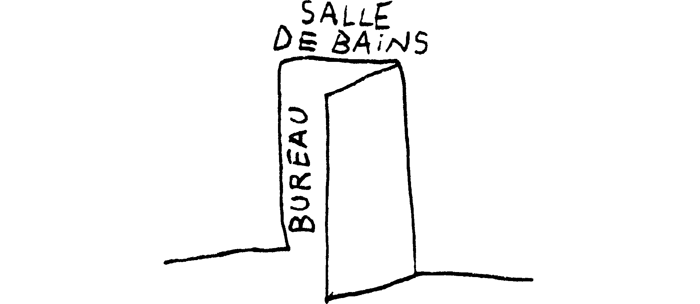
Alors forcement vous faites ce que n'importe qui aurait fait dans ce genre de situation, vous allez au bureau pour vérifier, vous ouvrez la porte, c'est bien le bureau.
Vous retournez à la salle de bain, c'est bien la salle de bain.
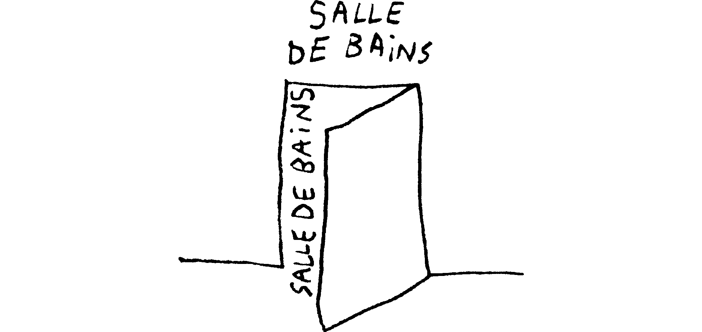
Tout va bien, tout est à sa place. Mais désormais à ça que fois que vous ouvrirez une porte ce sera avec quelque chose : de la prudence.
Et c'est une prudence qui est très particulière, qui est assez intéressante à analyser qui est un peu la même que quand on coupe un arbre. Alors moi personnellement je n'ai jamais coupé d'arbre, mais je me suis un peu renseigné sur l'abatage : En général on commence par faire une entaille, puis une coupe d'abatage, et l'arbre va tomber perpendiculairement à la charnière qui se trouve entre les deux.
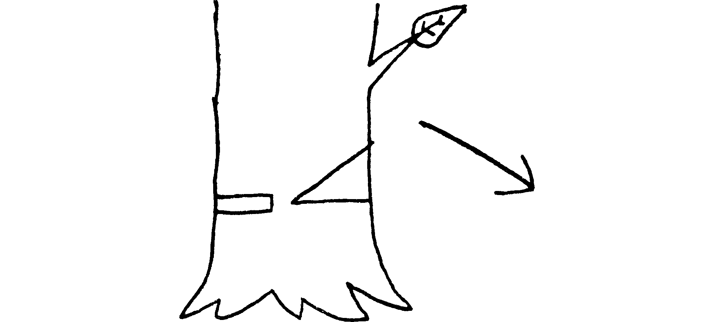
C'est une technique très précise, qui marche très bien, on fait comme ça depuis très longtemps, on n'a jamais vu l'arbre tomber dans l'autre sens. Et pourtant, à chaque fois que l'on fait ça, on préconise de délimiter autour de l'arbre, un périmètre de sécurité de deux fois la hauteur de l'arbre.
Vous voyez ce que je veux dire quand je parle d'une prudence très particulière : on voit mal comment un arbre pourrait tomber deux fois plus loin que sa propre hauteur, et encore une fois, il tombe toujours dans la même direction. Et surtout, comme je disais, c'est une technique très précise ! Pour vous donner une idée d'à quel point c'est précis, le champion du monde de tronçonneuse en 2004 a réussi à faire tomber la cime de l'arbre à 2 cm du point d'impact qui avait été fixé à 10 m du tronc.
C'est un degré de précision impressionnant qui est un peu analogue à ce qu'on peut observer dans la démolition de bâtiment. Quand on a démoli la tour Debussy à La Courneuve en 1986, les médias français se vantaient d'une démolition au mètre près
. Alors on n'est pas au centimètre près comme dans l'exemple du champion du monde de tronçonneuse mais là on ne parle plus d'un arbre de dix mètres, on parle d'une immense barre d'immeuble de plusieurs centaines de mètres. Et puis surtout, la technique utilisée pour détruire un immeuble elle n'a rien à voir avec la technique utilisée pour couper un arbre, c'est beaucoup plus chaotique.
Évidemment je n'ai jamais démoli d'immeuble, mais je me suis renseigné et c'est plutôt simple : on choisit un étage de l'immeuble (en général vers le bas), pour y placer des bâtons de dynamite.
Et on fait tout sauter. Et donc ce à quoi on s'attend c'est de voir l'immeuble s'affaisser en un gros tas de gravats qu'il sera simple de ramasser ensuite.
Mais le problème c'est que ce qu'il se passe au moment de l'explosion c'est chaotique au sens propre. C'est une explosion donc c'est toutes les particules de l'immeuble qui partent dans tous les sens qui rebondissent les unes sur les autres et c'est impossible de prédire précisément ce qu'il va se passer. Et on connaît l'exemple de bâtiments qui au moment de l'explosion, au lieu de s'affaisser en un gros tas de gravats, se sont contentés de perdre un étage.
Alors ça c'est une erreur de précision qui n'est pas très grave, il suffit de recommencer, rechoisir un étage, replacer des bâtons de dynamite, etc. En vérité on connaît des erreurs de précisions bien plus graves dans l'histoire de la démolition de bâtiment. Il y a par exemple cette histoire qui est arrivée à Annevoie : un grutier est appelé pour démolir une maison, il se rend sur place avec sa grue, il démolit la maison, ça ne lui prend pas longtemps, une vingtaine de minutes, il connaît bien son travail. Une fois que c'est terminé il a son patron au téléphone : est-ce que tout s'est bien passé ? est-ce qu'il n'y a pas trop de gravats sur la route ?
, le grutier : Oui, non, ça va, la route est à cent mètres de la maison ! le patron : Ah mais non pas du tout, la maison que tu devais démolir elle est au bord de la route
.
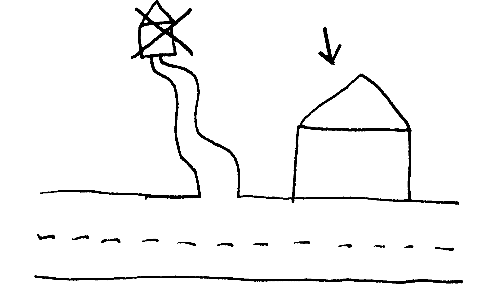
Pourquoi je parle de tout ça ? En fait ce que je veux mettre en évidence, c'est que chaque action qu'on fait (et je considère aussi le fait de ne rien faire comme une action) c'est un peu comme ouvrir une porte. Quand on ouvre une porte, on ne peut jamais savoir ce qu'on va trouver derrière. Et chaque action qu'on fait, c'est la même chose, on ne peut jamais être certain des conséquences, chaque action est comme un mouvement vers l'inconnu.
Il y a pas longtemps je me suis rappelé d'une pensée que j'ai eue quand j'étais enfant. Je m'étais demandé : Est-ce que si j'ai les mains sales, et qu'avec ces mains sales je salis une feuille de papier, est-ce que si ensuite je vais me laver les mains, la feuille de papier redeviendra propre, puisque les mains qui l'ont sali ne sont plus sales ?
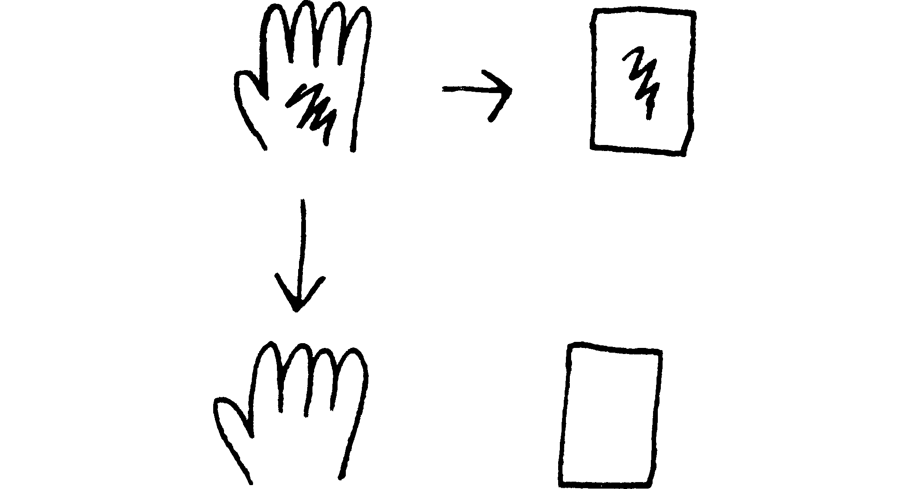
alors évidement aujourd'hui ça me parait idiot comme pensée, et d'ailleurs c'est idiot. Parce que dans notre monde il y a un principe, très puissant, contre lequel on ne peut rien faire, qui s'appelle le principe de causalité et qui dit justement ça : qu'une cause précède toujours son effet et qu'un effet ne peut jamais rétroagir sur sa cause. Le principe de causalité c'est ça qui fait que le temps ne peut aller que du passé vers le futur. C'est ça qui rend les voyages dans le passé impossibles.
Ça c'est la flèche du temps. Ça n'a l'air de rien comme ça, mais c'est super important en physique.
Et il y a quelque chose d'agréable (je trouve) à se confronter à ce principe de causalité et à notre rapport au temps. Vous pouvez faire l'expérience si vous voulez après votre lecture, vous prenez une boite d'allumettes, un paquet de cartes ou un paquet de cigarette, et vous le tenez entre votre index et la table, de telle sorte à ce que l'angle situé sous votre indexe soit perpendiculaire à l'angle qui est sur la table.
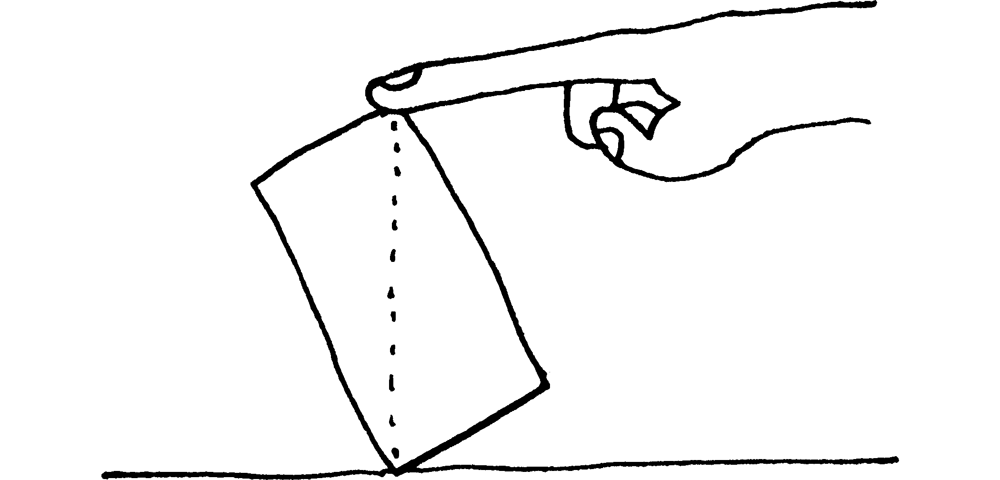
Et vous lâchez le paquet ! La première chose c'est bien sûr la question de savoir de quel côté il va tomber. On voit que le poids est également réparti des deux côtés de l'axe vertical, il a donc autant de chances de tomber d'un côté que de l'autre. À ce moment c'est un peu comme quand on tire une pièce à pile ou face, c'est toujours excitant de se confronter comme ça au hasard. Mais ce que je trouve le plus stimulant c'est l'espoir qu'on a quand on lâche le paquet, de le voir tenir en équilibre sur un angle. Et on sait que c'est possible, on sait qu'il y a un point précis auquel si on lâche le paquet il tiendra en équilibre. Le problème c'est qu'il y a une infinité de points auxquels on peut lâcher le paquet donc on a une probabilité nulle d'y arriver.
Ce qui n'a pas empêché des gens comme le funambule Henry's de tenir en équilibre pendant 30 minutes, sur les deux pieds arrières d'une chaise, au bord d'un immeuble de 60 étages.
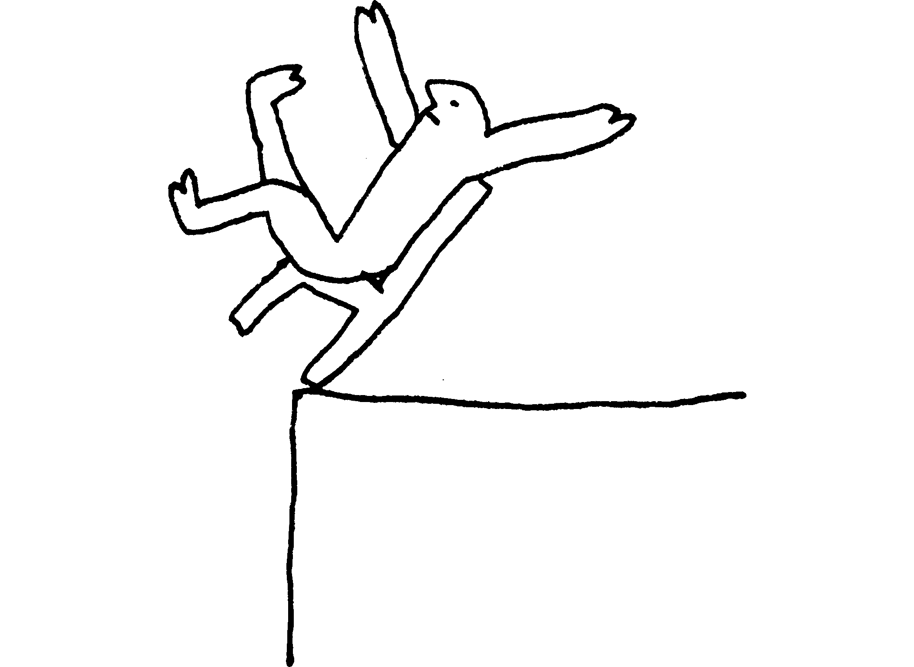
J'imagine que, vous n'avez jamais fait ça, mais vous vous êtes sûrement déjà balancé sur les deux pieds arrière d'une chaise et vous savez à quel point ça peut procurer des sensations fortes. Des sensations un peu analogues à celles que l'on ressent quand on se laisse tomber en arrière après avoir demandé à quelqu'un de nous rattraper. Ou quand on marche dans la rue les yeux bandés en se faisant guider par quelqu'un. Une expérience qu'il faut absolument que vous essayiez c'est goûter un aliment à l'aveugle, on se bande les yeux et on demande à quelqu'un de nous faire goûter quelque chose sans que l'on sache à l'avance ce que c'est. Très vite on reconnaît le goût, on l'associe à tous les souvenirs que l'on a avec l'aliment, à tout ce que l'on sait de l'aliment. Mais avant ça, pendant quelques secondes, son goût nous semble totalement inédit.
La conférence À propos des bouteilles de lait a été écrite à Paris en décembre 2015, sur invitation du collectif Dans la norme pour l’exposition Mouvement vers l’inconnu
Ce qui est dans ma poche ce qui est en dehors et le reste
Je suis un garçon, donc j'ai plus de poches que la moyenne. Parce que les garçons ont en moyenne plus de poches que les filles. Il y a beaucoup de vétements de filles (des vetements que les filles portent plus que les garçons) qui n'ont jamais de poche. Il y a même quelquechsoe d'assez étonnant dans la mode féminine, c'est les fausses poches. De loi, on a l'impression qu'il y a une poche, et dès qu'on s'approche pour mettre quelquechose à l'interieur, on s'apperçoit que c'est juste une illusion, un simulacre. Mais en fait je dis n'importe quoi, les fausses poches ce n'est pas exclusif à la mode féminine, on trouve aussi ça dans la mode masculine, sur des vestes et des manteaux par exemple. Je me souviens, mon père il avait ça quand j'étais petit, un manteau rouge de marque Aigle avec des fausses poches sur le côté. Je lui avait demandé à quoi ça lui servait et il m'avait répondu que c'était au cas où des pickpockets essayaient de lui voler ses affaires, comme ça ils se retrouveraient face à une fausse poche et ils e seraient bien fait avoir. Du coup longtemps j'ai vraiment cru que c'était ça la raison. Aujourd'hui je sais qu'il se moquait de moi. En fait je pense que si on a besoin de faire semblant qu'on a des poches alors qu'on en a pas c'est avant tout parce quye la poche c'est un symbole de puissance. Et il y a une anecdote de l'histoire de la mode qui explique assez bien ça, c'est l'histoire de Livan Dansee III.
Livan Dansee III c'était un empereur. Il s'était fait faire un manteau (le manteau impérial) avec 300 poches dessus. C'est des poches qui lui servaient principalement à ranger sur lui des objets magiques (amulettes, grigris, etc.) qui pour être vraiment efficaces devaient être rangés à des endroits précis contre son corps. Par exemple il avait une amulette d'immortalité qui était rangée dans la poche contre son cœur. Certaines poches avait un rôle plus trivial, il avait une poche pour ses clés, une poche pour sa montre (au niveau du poignet), mais la plus-part des poches avaient un rôle magique. Plus tard ses déscendants on repris cette idée de manteau impérial couvert de poches, et c'est un peu devenu le symbole de la dynastie Livan. Et par extension, la poche est devenue le symbole du pouvoir impérial. Il faut savoir qu'à cette époque, c'était interdit pour quiquonque (à part l'empereur) d'avoir des poches à ses vêtements. Ce n'était pas une lois très contraignante, la poche est arrivée assez tard dans la mode populaire, à cette époque pour ranger nos affaires, on avait plutôt des bourses, ou des besaces, mais la poche était quand même interdite. Et comme la poche était devenue un symbole de pouvoir, on voit apparaîtres à cette époque des vêtements de nobles avec des fausses cousues dessus.
Il y a une anectote qui est drôle par rapport à l'amulette d'imortalité de Livan Dansee III. C'est qu'un jour il s'est fait vollé l'amulette et 5 jours après il est mort. Alors chacun croit ce qu'il veut mais rien ne nous prouve que ça ne marchait pas vraiment. Ce qui est sûr c'est qu'il faut saluer l'exploit du voleur qui a quand même réussi à s'introduire dans le palais, jusqu'à la salle du trône et qui a sans qu'on le remarque vollé l'amulette dans l'une des 300 poches du manteau que portait l'empereur ! La poche du cœur en plus, juste sous son nez, pas une des poches dans le dos. Je pense qu'on peut dire que c'est le plus grand voleur de tous les temps, même si on ne sait pas qui sait. On ne connait rien sur lui, on ne sait pas comment il s'appelait. Mais c'est normal, un voleur, si on connait son nom, c'est qu'il a raté quelquechose quelque part. Les grands voleurs c'est forcément anonymes.
En tout cas celui-là, s'il a réussi à concervé l'amulette d'immortalité il est peut-être encore en vie. Je crois que j'ai eu à faire à lui il y a quelques années dans le métro à Paris. Je rentrais de soirée, j'étais un peu fatigué. Et comme je sentais que je m'endormais, j'ai mis ma main dans ma poche sur mon téléphone, pour être sûr de ne pas me le faire voler pendant mon sommeil. En effet je me suis endormi, je me suis reveillé au terminus. Et quand je me suis reveillé, ma poche avait été découpée avec des ciseaux, tout autour de ma main. Et je m'étais non seulement fait volé mon téléphone mais aussi ma poche. C'est à dire que j'étais dans un moment de ma vie ou ma poche était tellement vide qu'elle ne se contenait même plus elle-même.
D'habitude quand on n'a rien dans les poches on a au moins la poche, au moins ce qui nous permet de la retrousser pour montrer qu'elle est vide. D'habitude quand on n'a rien dans les poches on a au moins ce que j'appelle la poussière de poche (ce que les inconnus appellent les coucougnous), c'est tout cet amas de sable, de poussière, de miettes de tabac, de miettes de mouchoirs en papier passés à la machine, des fois il y a un fil rouge, on ne sait pas trop d'où il vient. C'est très beau comme matière (enfin, moi j'aime beaucoup). Et c'est interessant parce que c'est vraiment de la matière, c'est vraiment quelquechose, et pourtant ça représente assez bien le vide, le rien. Par exemple si je vous dit "je n'ai rien dans les poches", vous n'allez jamais me répondre "Si ! tu as de la poussière de poche". Parce que la poussière de poche en fait ça compte pas. Enfin, ça compte, mais ça compte pour zéro. Et ça peut-être pratique ça d'avoir de la matière qui compte pour zéro.
Imaginez par exemple qu'on est dans un dessin animé muet. Il faut tout faire passer par l'image, ilm n'y a pas de parole. On suit un personnage qui est pauvre. Alors vous allez me dire, "comment sait-on qu'il est pauvre s'il n'y a pas de parole", eh bien je ne sais pas par exemple il a un chapeau avec un trou. Le personnage marche le long d'une rivière, il souhaite traverser la rivière et il y a un pont mais c'est un pont à péage, il faut payer pour traverser. Si à ce moment le personnage met sa main dans sa poche et qu'il la ressort sans rien, ce ne sera pas clair, on ne comprendra pas ce qu'il s'est passé. Mais si quand il la ressort, il y a dans sa main de la poussière de poche, un bouton de manchette ou une araignée qui part en courant, le message sera limpide. Ça, cette matière qu'il a dans la main, c'est rien, c'est zéro euro. Il n'a pas d'argent, il ne va pas pouvoir traverser, il va s'assoir à côté du pont et faire la manche jusqu'à ce qu'il ait assez pour passer.
Moi je passé par là et j'ai eu envie de l'aider, donc j'ai mis ma main dans ma poche pour trouver une pièce à lui donner, mais probléme, je ne sentais que des pièces de deux euros. Et deux euros c'était beaucoup pour moi à l'époque alors je me débattait dans ma poche pour trouver à l'aveugle quelquechose plus de l'ordre de 50 centimes ou 1 €. Mais c'était génant parce que lui il voyait très bien ce que j'étais en train de faire. Alors je me suis dépéché de lui donnait la première pièce que j'ai trouvé qui n'était pas 2 € et c'était 5 centimes... J'ai eu un peu honte en traversant le pont, franchement, j'aurais mieux fait de lui donner 2 €.
Ça me rappelle une histoire qui m'est arrivé un peu pareil dans le métro à Paris. Une dame me demande si je ne peux pas lui dépaner 1 €, je lui dit "Non désolé j'ai rien" et en disant ça je frappe les poches de mon torse avec mes mains, et ça fait Gling gling gilng. En fait je n'avait vraiment pas d'argent, c'est mes clés qui avaient fait ce bruit. Mais je n'allait pas lui dire "Mais non, je vous jure, regardez, c'est mes clés". Du coup je suis juste parti comme ça, comme un menteur.
Là c'était vraiment génant mais sinon en général c'est des gestes que j'aime bien. Il y a tout un vocabulaire de gestes autour des poches qui forment un peu une sorte de chorégraphie du quotidien. Comme ce dont je parlais, de taper ses poches du plat des mains pour savoir ou montrer ce qu'il y a dedans, ou alors quand tu es assis, que tu as besoins de quelquechose dans ta poche mais qu'elle est trop serré et que tu dois te lever pour y accéder.
Alors tu te lève, tu met ta main dans ta poche, et là tu tombes sur un objet que tu ne reconnaît pas. Comme tu aimes jouer, tu essaye de deviner ce que c'est juste en le touchant et c'est une pince à linge. Seulement voilà, tu as beau la sortir et la regarder, cette pince à linge elle ne te dis rien, tu as bien des pinces à linge chez toi mais elle ne sont pas comme ça et celle-là tu ne l'as jamais vu. Alors tu te demandes vraiment comment elle a pu arriver là. Surtout qu'il n'y a que toi qui porte ce pantalon donc tu te demandes même comment elle peut juste exister.
Et je comprend le trouble que tu ressens à ce moment là parce que c'est vrai que d'habitude quand on met quelquechose dans a poche, on s'attend à pouvoir le sortir ensuite. Quand tout à l'heure dans le métro j'ai mis mon télépĥone dans ma poche et que je ne l'ai pas ressorti au terminus, j'ai resenti un trouble. Mais l'inverse c'est pire, quand on sort quelquechose de sa poche, sans l'avoir inserré auparavant, c'est vraiment troublant. Et je sais de quoi je parle parce que ça m'est arrivé plusieurs fois quand j'étais enfant.
J'avais un pantalon de pyjama rose, en tissu éponge, avec des poches sur le côté. J'étais en vacance chez mes grands parents et il faut savoir que chez mes grands parents il y avait un bocal de bonbon sur une étagère et c'était des bonbons qu'on n'avait pas le droit de manger. Je ne sais pas bien pourquoi, mais voilà, ça faisait parti des choses interdites. Et comme souvent quand on est enfant, quand on nous refuse quelquechose le jour, la nuit on va rêver qu'on accompli le désir frustré. Et donc cette nuit là j'ai rêvé que j'éscaladais les étagères et que j'allais volé un bonbon dans le bocal. Et quand je me suis reveillé, dans la poche de mon pantalon de pyjama, il y avait un bonbon.
Alors aujourd'hui j'explique asserz bien ça, évidement ce bonbon ne venait pas de ce bocal, encore moins de ce rêve, c'était juste un bonbon quelqu'onque et je l'ai associé à celui du rêve alors que ça n'avait rien à voir. Mais pour moi à l'époque (je devais avoir 4-5 ans) je venait de trouver le portail magique, qui allait me permettre de faire passer des choses de mes rêves à la réalité. Et c'était très heureux comme découverte parce que c'est une époque où je commencait à peine à me poser des questions sur les rêves et j'étais très frustré en fait par cette frontière horrible qu'il y a entre les rêves et la réalité. Tout ce que je trouvais dans mes rêves, je ne pouvait pas les emmener dans le monde réel, tout ce que je vivais avec mes amis dans mes rêves, je ne pouvais pas leur en parler le lendemain, ils ne s'en souvenaient pas. Et enfin ce pantalon allait me permettre de briser cette frontière.
J'ai beaucoup essayé de m'en reservir. Mais ça ne marchait pas trop. Et pas parce que je mettais des objets dans mes poches pendant le rêve et que je me reveillait sans, Mais parce que je n'arrivait pas à controller assez bien mes rêves, pour pendant le rêve, prendre un objet et le mettre dans ma poche. Deux fois quand même, il y a eu des histoires un peu etranges. La première fois c'était une pièce de Lego. C'était une pièce que je n'avais qu'en un exemplair, j'en avait besoin pour une construction, je ne la trouvait pas, la nuit je rêve que je la retrouve et le lendemain matin, elle est dans ma poche. C'est tout de suite moins impressionnant quand on sait que je jouais beaucoup aux légos en pyjama : évidement la pièce n'était pas perdue, elle était juste dans ma poche, la nuit j'ai du sentir le plastique contre ma cuisse et mon esprit a construit un rêve autour de ça. Mais la troisième histoire est un peu plus troublante.
Je me souviens très précisément du rêve. J'étais avec des copains dans une sorte de monde très beau et froid à la fois, très lisse, un peu métalique. Je me souviens qu'il y avait une rivière dont l'eau été tellement transparente qu'on avait l'impression que les poissons volaient à l'interieur. Et donc l'intrigue, le sujet du rêve c'est que j'avais compris que c'était un rêve mais mes amis qui étaient là avec moi ils n'avait pas compris. J'essayais de leur dire mais soit ils ne m'entendaient pas ou ils ne voulaient pas savoir, et donc la seule solution que j'avais trouvé sur le moment c'était de ramasser un objet de ce rêve, de le ramener dans le monde réel grâce au pantalon magique pour leur prouver le lendemain qu'on avait vécu ça ensemble. Sauf que c'était tellement lisse et partout qu'il n'y avait rien à ramasser. Et je me suis reveillé avant de trouver un objet à emporter avec moi. Mais quand je me suis reveillé, dans la poche de mon pantalon de pyjama, il y avait un poisson. Mort.
Je ne l'ai pas montré à mes amis, je pense qu'ils se seraient moqués de moi. Et je n'en n'ai pas parlé à mes parents, ils ne m'auraient pas crus (comme vous). Après ça j'ai arrêté d'utiliser le pantalon magique, je pense que ça m'avait un peu choqué. Ou peut-être qu'il était devenu trop petit. Mais la je suis retourné chez mes parents il y a pas longtemps et j'ai parlé à ma mère de ce pantalon. Elle s'en souvenait très bien et elle m'a dit qu'elle l'avait sûrement donné comme tout les vêtements que j'avais à l'époque. Du coup pour me consoler je me dis que sûrement que l'enfant qui l'a eu après moi a réussi à faire sortir quelquechose de ses poches de mon pantalon. Ou plutôt de mes poches de son pantalon. C'est pas évident ce genre de phrase parce que les poches ça a un rapport étrange à la propriété, c'est pas vraiment comme les autres objets. Par exemple si j'ai un manteau avec des poches et que je te le prette, au bout d'un moment, dans les poches de ce manteau, il y aura des choses à toi, tes affaires, et si j'ai besoin de quelquechose dans les poches de ce manteau, je dirais "regarde dans tes poches", je ne dirais pas "regarde dans mes poches", alors que c'est mon manteau. Et que tous les deux on le sait très bien.
C'est un peu comme les chambres des maisons. Si quelqu'un dort dans une chambre de ma maison, ce sera sa chambre. Et le jour où il repart ça ne redeviendra pas forcément ma chambre. Ce sera juste une chambre de ma maison. C'est très poche des chambres les poches. Il y a ce côté privé, on y est confortable, on s'y sent bien, on a pas trop envie que des gens viennent fouiller dedans. Il y a ça aussi du jardin secret. Mais si c'était un jardin secret une poche, ce serait quand même un jardin secret avec parfois un beau pommier qui dépasse de la haie. Je pense par exemple au livres de poches. Vous savez que les livres de poche c'est toujours un peu plus grand que les poches. Et c'est très important de préciser que ce ne sont pas les poches qui sont trop petites. Ce sont les livres qui sont trop grands. Parce que les livres de poche ont été inventés après les poches. C'est donc les éditeurs qui volontairement, impriment des livres trop grands, pour qu'ils dépassent. En général en haut on s'arrange pour mettre le nom de l'auteur ou le logo de la maison d'édition, eux comme ça, ça leur fait de la pub. Nous on s'en plaint pas car ça permet de montrer nos lectures l'air de rien et peut-être d'engager une conversation à la terrasse d'un café.
C'est vrai que même si en général les poches c'est quelquechose d'intime et de secret, ça peut aussi parfois un moyen d'exhiber sa culture ou sa classe sociale. Par exemple si je porte des poches serrées et que je possède un smartphone, tout le monde saura la taille que fait l'écran car un rectangle en relief se dessinera sur ma cuisse. Personnalement les reliefs dessinés sur mes poches c'est plus souvent des amas informe de mouchoirs usagés et d'autres objets oubliés. C'est pas très beau et c'est pas très pratique parce qu'à chaque fois que j'ai besoin de quelquechose dans ma poche je suis obligé de tout vider pour le retrouver.
Une fois pour pallier à ce problème je m'étais confectionné des intercallaires de poche. J'avais une douzaine d'intercallaires : Clés, Cartes, Mouchoirs, etc. C'était super pratique. Dès que j'avais besoin de quelquechose j'allais dans le bon intercalaire je prenais la carte dans Cartes, je la mettait dans le distributeur et puis je la remettait dans Cartes avant de ranger les billets dans Billets et le ticket dans Ticket, et tout allait super vite. Je dois avoué que ça avait des défauts aussi et que je ne m'en suis pas servi longtemps. Mais c'était chouette d'avoir cette fluidité parce que les poches en fait ça sert à ça, à avoir tout accessible rapidement, à porté de main. Contrairement à un sac qu'il faut enlever puis ouvrir, une poche c'est tout le temps là. Même s'il y a des proches qui sont meilleures à ça que d'autres. Par exemple, si je dois ranger sur moi un revoler ou un paquet de mochoir, je ne les rangerait pas dans la poche interieure à fermetture éclair de mon manteau. Parce que si j'ai besoin d'éternué, les mouchoirs il faut que je puisse les déguainer vite.
Je ne dis pas que toute les poches ont un rôle précis mais c'est sûr qu'il y a certaines poches qui sont plus adaptées à certaines choses que d'autres. Par exemple, si je dois mettre une bouteille d'eau dans ma poche, je ne choisirai pas la petite poche à l'interieur de la poche avant-droite de mon jean, ça ne rentrera jamais, je choisirai plutôt une des poches arrières. Si je dois mettre des plantes dans mes poches, je ne les mettrai pas dans mes poches interieur, parce que quand je fermerai ma veste, ça abîmera les tiges, quand je les aroserai, ça mouillera ma chemise, donc je choisirai plutôt les poches exterieures. On ne met jamais sa main dans la poche de la chemise, c'est pas du tout confortable pour le poignet et pour l'épaule. En général on choisis plutôt les poches avant du pantalon avec les pouces qui dépassent et les épaules un peu en arrière. Ça donne l'air cool, décontracté.
Personnellement je met rarement mes mains dans mes poches comme ça, mais plutôt enfoncés jusqu'au fond avec les épaules en avant et tout le poid de mon corps sur le fond de mes poches. Ça donne l'air pas décontracté du tout et comme j'ai souvent les ongles longs, à force d'appuyer sur le fond de mes poche ça fait des trous. Et je perds souvent, à cause de ça, mes clés et ma petite monnaie. C'est peut être à ça que ça sert en fait de laisser les pouces dehors, ça fait une sorte de butée.
Cette histoire de pouces ça me rappelle un article que j'avais lu dans un magazine pour adolescent qui s'appelait Phosphore. Il y avait tout un dossier sur le langage corporel et notament un petit encadré qui expliquait comment interpreter la manière dont son interlocuteur met ses mains dans ses poches dans un contexte de drague, de séduction. Et donc s'il laisse dépasser les pouces, c'est qu'il a confiance en lui, si à l'inverse il ne met que les pouces, ça veut dire ceci, s'il laisse dépasser pouces et oriculaires, ça veut dire celà... Je ne me souviens plus précisément, c'était un peu n'importe quoi, mais voilà, ils décrivaient comme ça les 3-4 manières les plus communes de mettre ses mains dans ses poches et ce que ça signifiait. Et je me souviens m'être demandé : Qu'est-ce que ça aurait pu donner si au lieu de se contenter des 4 manières les plus communes de mettre ses mains dans ses poches, s'ils avaient énuméré les 31 manières de mettre ses mains dans ses poches (il y a 31 manière de mettre ses mains dans ses poches si on considère qu'un doigt ne peut-être que dedans ou dehors (si on a une main à 6 doigts comme Eric Duyckaerts, ça fait 63)) et que pour chacune de ces position ils avaient inventé une signification, et qu'ils avaient imprimé le magazine en, je sais pas moi, 50 millions d'exemplaire, tout le monde l'aurait lu, et du coup on pourrait communiquer qu'avec nos poches. Ou plutôt avec nos poches et nos mains.
Parce que c'est possible aussi de ne communiquer qu'avec ses poches (sans les mains), c'est ce qu'on appelle les appels de poche. Quand le téléphone se déclanche tout seul dans la poche. En général c'est pour appeler la dernière personne que l'on a appelé, ou la première personne du répertoire. Une fois mon téléphone s'est déclanché comme ça tout seul dans ma poche pour appelé quelqu'un, et le téléphone de cette personne a décroché tout seul, dans sa poche. Et je m'en suis aperçu une demi heure plus tard alors que j'allais écrire un SMS. Ça faisait 30 minutes que nos deux poches communiquaient comme ça, dans notre dos.
Et je crois que c'est ce jour là que j'ai compris à quel point les poches c'est vicieux. On a l'impression de contrôler ce qui s'y passe, d'avoir la main dessus. En fait il y a sans arrêt des choses qui s'y cassent, qui en tombe, qui fondent, qui s'emmêllent. On a l'impression de tout savoir sur nos poches, de connaître le fond de nos poches sur le bout des doigts. Mais en vérité qu'est-ce qu'on sait ? Parfois on sait ce qu'il y a dedans, on a une vague idée de ce qu'il y a en dehors, mais on ne sait rien du reste.
La conférence Ce qui est dans ma poche ce qui est en dehors et le reste a été écrite à Paris en mai 2015, sur invitation et sous le regard de Samah Slim pour l’exposition Brelan
Une collection de collections vides n’est pas une collection vide
Il y a quelques années j'ai commencé une collection d'écrous trouvés sur le trottoir. Ce ne sont que des écrous qui ont été trouvés par terre, dans la rue ou sur le trottoir. Quand j'ai commencé cette collection j'en avais quatre, des écrous que j'avais ramassés par terre, sans penser en faire une collection, juste comme ça, parce que je trouvais ça joli. Et en ramassant le quatrième je me suis dit OK, c'est parti, c'est le moment, je commence cette collection d'écrous trouvés sur le trottoir
. J'étais plutôt fier de cette collection naissante, je suis tout de suite allé la montrer à une amie, et elle s'est moquée de moi. En disant que quatre éléments ce n'était pas du tout suffisant pour faire une collection, que c'était les enfants qui faisaient des collections avec quatre éléments, et qu'il allait me falloir beaucoup plus d'écrous trouvés par terre si je voulais prétendre avoir une collection d'écrous trouvés par terre.
Il faut savoir que cette amie, son avis il compte beaucoup pour moi, et ça m'a un peu blessé quand elle m'a dit ça. Mais dans un deuxième temps, ça m'a fait me poser une question qui ne m'a pas quitté pendant plusieurs jours. J'ai assez vite admis que quatre ce n'est pas suffisant, mais alors c'est quoi le minimum d'éléments pour faire une collection ? est-ce que c'est 7, est-ce que c'est 10 ? est-ce que c'est 100 ? Et comment trouver un nombre qui ne soit pas totalement arbitraire ? Donc je pensais beaucoup à ça, et puis un jour, je reçois la visite d'un ami mathématicien. Tout de suite, je lui parle de mon problème et lui, il me parle de théorie des ensembles.
La théorie des ensembles c'est une théorie qui a été développé par George Cantor à la fin du XIXe siècle et c'est vite devenu très important dans le monde des mathématiques. C'est assez simple à comprendre, en gros Cantor il définit un ensemble comme un groupe d'objets pouvant être considérés comme un tout
. Donc par exemple on peut parler de l'ensemble des entiers naturels : 1, 2, 3, 4, 5, 6, 7, 8, 9, 10, 11, 12, 13, 14, 15, 16, 17, 18, 19, 20, 21, 22, 23, 24, 25, 26, etc. Mais je peux aussi parler, par exemple, de l'ensemble des pages de ce livre… Et en théorie des ensembles il y a un ensemble qui est un peu particulier et qu'on croise souvent qui s'appelle l'ensemble vide. Peut-être que vous connaissez le symbole qu'on utilise pour le représenter c'est un rond barré : ∅.
(Petite subtilité typographique, c'est très important de faire dépasser le trait du cercle, sinon ça fait interdit de stationner. C'est un peu la même différence qu'entre le A de anarchisme et le A de apprentis conducteur)
Et donc ce que me proposait cet ami, c'est de considérer qu'une collection ce n'est rien d'autre qu'un ensemble, un ensemble d'objets que je possède et qui répondent à un même critère de sélection. Et comme je considère une collection comme un ensemble, cet ensemble peut très bien ne rien contenir, être un ensemble vide. En fait, le nombre minimum d'éléments pour faire une collection, c'est zéro ! Moi quand j'ai compris ça j'étais fou de joie. Car non seulement ça validait totalement ma collection de 4 écrous, qui avait déjà 4 éléments de plus que le minimum. Mais surtout ça me permettait d'avoir par exemple une collection de voitures de course, même si je ne possède aucune voiture de course, ce serait juste une collection vide de voiture de course. Et de la même manière je pourrais avoir, je ne sais pas, une collection de briques sans brique, une collection de barrages… J'ai donc pris la décision de collectionner les collections vides.
- Collection de voitures de course
- Collection de briques
- Collection de barrages
- Collection de photos d’escalier
- Collection de copies d’élèves de lycée ayant eu 20 à un devoir de philo
- Collection de genoux
- Collection de champions du monde d’échec
- Collection de céleris-raves
- Collection de déguisements jamais portés
- Collection de cabanes immortelles
- Collection de planètes errantes
- Collection d’idées reçues sur la vie privée de personnes célèbres
- Collection d’objets pouvant mourir plusieurs fois
- Collection de cratères
- Collection de pommes géantes
- Collection d’édifices gigantesques
- Collection d’aimants
- Collection de boites vides
- Collection de livres vides
- Collection de livres dont le titre est plus important que le contenu
- Collection de films dont le titre comporte 6 mots ou plus
- Collection de mots dont on ne peut pas deviner le sens si l’on ne les connaît pas
- Collection de miroirs qui reflètent le soleil
- Collection de champions
- Collection de morceaux de planètes du système solaire
- Collection de tableaux dont le titre décrit le contenu du tableau
- Collection de voitures bleues
- Collection de voitures vertes
- Collection de voitures jaune et bleu
- Collection d’articles de journaux de 3000 caractères
- Collection d’articles de journaux de 2999 caractères
- Collection de collections de notices d’utilisation par nombre de caractères
- Collection d’interdictions
- Collection de biscuits
- Collection de chaleurs
- Collection de trous de mémoire
- Collection de siphons
- Collection de mats de bateaux
- Collection de sites internet sans texte
- Collection de cailloux qui ont la forme de visages de personnes de ma famille
- Collection de pensées sur la taille de l’univers
- Collection de plaques d’immatriculation trouvées dans la forêt
- Collection de savons à l’odeur désagréable
- Collection de listes de course
- Collection de cartes de visite
- Collection d’adresses
- Collection de chameaux
- Collection de petites choses
- Collection de transitions
- Collection de pistolets à eau
J'ai dit au début que je considérais qu'une collection c'était un ensemble d'objets que je possède et qui répondent à un même critère de sélection
. Cette définition elle est très importante pour construire ma collection de collections vides et elle est très précise. Par exemple, c'est important de préciser qu'une collection ce n'est pas l'ensemble de toutes les choses que je possède et qui répondent au même critère de sélection.
Chez moi j'ai une collection de cuillères (c'est une collection non-vide, avec des cuillères dedans), cette collection c'est un ensemble d'objet que je possède et qui réponde au même critère de sélection : être une cuillère. Mais ce n'est pas l'ensemble de toutes les cuillères que je possède, car chez moi j'ai aussi des cuillères qui me servent juste à mélanger le sucre dans mon café ou à manger mes lentilles. Ces cuillères elles ne font pas partie de ma collection de cuillère, et ce n'est pas à cause de ce qu'elles sont (puisqu'il y a aussi des cuillères dans ma collection de cuillères qui sont très banales).
Je viens de lister dans ma collection de collections vides, une collection vide de pistolets à eau. Il s'avère que chez moi, j'ai des pistolets à eau, j'en ai 3. Mais cela ne m'empêche pas d'avoir une collection vide de pistolet à eau, il me suffit d'exclure ces 3 pistolets à eaux de ma collection de pistolets à eau.
- Collection de pièces d’échec avec défaut de fabrication
- Collection de lunettes ancienne
- Collection de chutes dans les escaliers
- ~~Collection de faux billets~~
- Collection de mauvaises intentions
- Collection de personnages sans nom
- Collection de diamants très précieux
- Collection d’objets intissés
- Collection de tapisseries médiévales
- Collection de brevets de jeux déposés entre 1920 et 1930
- Collection de recettes différentes de la charlotte
- Collection d’atomes différents
- Collection d’œufs durs
- Collection de cadeaux de Noël revendus sur Ebay
- Collection de vidéos amateurs de vélo
- Collection de lacets de tailles différentes
- Collection de choix difficiles à prendre
- Collection de F
- Collection de verres teintés au cobalt
- Collection de messages gravés sur les vitres de bus
- Collection de théories bancales
- Collection de vêtements avec photos d’animaux imprimés au dos
- Collection de constellations sans nom
- Collection de jouets Kinder
- Collection d’objets pairs
- Collection de parcs
- Collection de places de parking
- Collection de gris foncés
- Collection de choses oubliées
- Collection de krachs
- Collection de nombres multiples de 3 ou de 7
- Collection de rockstars sexys
- Collection de mots qui ne veulent rien dire ou très peu
- Collection de signes de ponctuation
- Collection d’objets lointains
- Collection de façons
- Collection de chemins un peu plus longs
- Collection de briques de lait
- Collection de lampes en forme d’ananas
- Collection de roches
- Collection d’œuvres d’art très chères
- Collection de xylographies
- Collection d’histoires vraies ou présentées comme vraies
- Collection de photos de photo
- Collection de chaussettes orphelines
- Collection de choses idiotes
- Collection de charmants paysages
- Collection de liens cellotwists
- Collection de tabourets d’époque Louis XIII
- Collection de grains de sable
- Collection de juliennes
- Collection de maisons au bord de la mer
Si à un moment, une de ces collections acquiert un élément, elle doit immédiatement être retirée de la liste (comme c'est arrivé à la collection de faux billets). À l'inverse, si j'ai une collection non-vide, je peux décider de lui retirer tous ses éléments (en les vendant, en les donnant ou en les jetant) et ainsi la faire rentrer dans ma collection de collections vides. Par exemple, à une époque j'avais une collection de tickets de métro de villes différentes. Il y avait trois tickets dans cette collection, un ticket du métro toulousain, un ticket du métro parisien, et un ticket du métro lyonnais. Je ne trouvais pas ça très intéressant, ça m'ennuyait un peu, alors je les ai jetés. Et j'ai gagné une collection vide.
- Collection de tickets de métro de villes différentes
- Collection de mercredis
- Collection de chutes inoffensives
- Collection de coupes papier
- Collection de fers
- Collection de produits dont le prix est le plus bas dans leur lieu de vente
- Collection de poignées de porte
- Collection de moments où l’on admet qu’un objet est perdu
- Collection de fuzzy dices
- Collection de palourdes
- Collection de grincements
- Collection de bouches
- Collection de présidents morts
- Collection d’objets dont le nom commence par pla
- Collection de carnets de voyage
- Collection de jeux de cartes
- Collection de souvenirs de Moscou
- Collection de méchants
- Collection d’objets à peu près dangereux
- Collection de pylônes électriques
- Collection de jeux de mots sur l’enseigne de restaurant
- Collection d’herbacés
- Collection de chevaux de course
- Collection de courses de chevaux
- Collection de fausses routes
- Collection de wagons
- Collection de xylophones
- Collection de toupies
- Collection d’attrape-nigauds
- Collection de trous
- Collection de clés
- Collection de dés truqués
- Collection de fours à pain
- Collection de petites grues
- Collection de petites pertes de temps
- Collection d’articles de Wikipédia
- Collection de drôles de ronds-points
- Collection de drôles de fourmis
- Collection de dents de sagesse
- Collection de couleurs
- Collection de personnes qui ressemblent un peu à des insectes
- Collection de trains d’atterrissage
- Collection de champignons non mortels
- Collection de canaux plus profonds que larges
- Collection de canaux plus larges que profonds
- Collection de canaux aussi larges que profonds
- Collection de tapis de bains ni brûlés ni mouillés
- Collection de moufles en laine
- Collection de gros mots gentils
- Collection de vents
- Collection de vernis
Parfois les collectionneurs et collectionneuses utilisent des catégories pour organiser leur collection. Par exemple mon grand-père il avait une collection de timbres qui comprenait deux catégories : les timbres français qui étaient rangés par années, et les timbres étrangers qui étaient rangés par pays. Ma collection de collections vide elle ne comprend aucune catégorie et elle est rangée par ordre d'acquisition.
- Collection de souffle
- Collection de statues de gorilles
- Collection de pages tombées
- Collection de souvenirs d’intense bonheur
- Collection de valises à roulettes
- Collection de tatouages Malabars
- Collection de cailloux pesant 20 g
- Collection de cailloux pesant entre 21 g et 30 g
- Collection de cailloux pesant ou 19 g ou 31 g
- Collection de sprays
- Collection de sacs plastiques colorés
- Collection d’étoiles mortes que l’on voit encore briller depuis la terre
- Collection de moulins à purée cassés
- Collection d’arnaques du siècle
- Collection de bulles
- Collection d’objets liés à la ville
- Collection de signatures
- Collection de poissons
- Collection de boites à musique
- Collection de boutons volés
- Collection de poches trouées
- Collection de poussières
- Collection de cartes SIM
- Collection de numéros de cartes bleues
- Collection d’argent virtuel
- Collection de tickets de cinéma de séances où j’ai dormi
- Collection de billets de trains que j’ai ratés
- Collection de boucles d’oreilles
- Collection de cendriers propres
- Collection de choses de la vie
- Collection de globules
- Collection d’impertinences
- Collection de petits pots de confiture
- Collection de vidéo du passage à la nouvelle année
- Collection d’objets ayant un rapport avec Spinoza
- Collection d’objets ayant un rapport avec Michel Simon (l'acteur)
- Collection de dieux
- Collection d’électricité
- Collection de générateurs de vide
- Collection de sangsues
- Collection de crins
- Collection d’îles
- Collection de 6 de pique
- Collection de méreaux
- Collection de cartes postales de Blois
- Collection de livres annotés
- Collection de vis qui étaient utiles puis qui ont été dévissées
Dans ma collection de collections vides, je ne veux pas de collection d’affiches, je ne veux pas de collection de champs lexicaux, je ne veux pas de collection de touches, je ne veux pas de collection de chiens. Parce qu'une collection bien sûr, ça se définit aussi par tout ce que ça ne contient pas. On refuse des éléments à nos collections, soit de manière arbitraire, par goût, comme moi qui ne veux pas de collection de flans, ou pour répondre à des règles précise qui vont donner à une collection plus de pertinence.
Bien sûr dans ma collection de collections vides, je ne veux aucune collection qui ne soit pas vide. Mais je ne veux pas non plus de collection qui par son intitulé, serait condamnée à rester éternellement vide. Par exemple, je ne veux pas de collection de nombres impairs multiples de 2. Car comme il n'existe pas de nombre impair multiple de 2, cette collection serait condamnée à rester éternellement vide et elle aurait une place trop confortable dans ma collection de collection vide.
- Collection de chalumeaux
- Collection de jurys
- Collection de morphologies
- Collection de chaussures vertes
- Collection de chaussures bleues
- Collection de chaussures ni verte, ni bleue, ni rouge
- Collection de quintessences
- Collection de photocopieuses
- Collection de beurre
- Collection de personnes qui nagent à contre-sens
- Collection de ventres percés
- Collection d’infimes changements dans le comportement
- Collection de réunions
- Collection de papiers bulle
- Collection de balcon
- Collection de bus circulaires
- Collection de hublots
- Collection d’êtres polyfacétiques
- Collection de slogans
- Collection de fraiseuses
- Collection de petits bouts de papier dont le recto n’a pas la même couleur que le verso
- Collection de photos de flaques
- Collection de photos de récipients laissés dehors, plein d’eau après la pluie.
- Collection de tickets de caisse laissés par les clients à la caisse de magasins
- Collection de singeries
- Collection de passages cloutés.
- Collection de feus de forêt
- Collection de bouteilles d’huile de tournesol
- Collection de granges
- Collection de beaux portails
- Collection d’objets qui font tiiing quand ils tombent
- Collection d’objets qui font un Fa quand on les percute
- Collection d’objets que l’on croit silencieux mais qui en réalité émettent un très léger sifflement
- Collection de chapeaux ou casquettes qui disent le métier de ceux qui les portent
- Collection de ventilation
- Collection de choses que des gens que je ne côtoie plus ont un jour oublié chez moi
- Collection de lunettes de soleil de vue
- Collection de lunettes pour regarder une éclipse
- Collection d’opinions de vote
- Collection de châteaux d’eau
- Collection de grues pas trop grandes
- Collection de panneaux Attention piétons de différents pays
- Collection de plans inclinés à 30°
- Collection de livres dédicacés à quelqu’un que je ne connais pas
- Collection de roulettes
- Collection d’indices
En plus d'être absolument légère (toujours plus légère que le moindre écrou de ma collection d'écrous malgré ses 200 et quelques éléments) ma collection de collections vides ne me coûte rien. Ni pour l'acquisition des éléments, ni pour leur entretien, ni pour leur stockage.
On m'a déjà offert des collections vides, il n'y a rien de plus simple ni de plus gratuit : Tu veux une collection vide de coquilles d'œuf ?
, Oui, merci beaucoup.
- Collection de coquilles d’œufs
- Collection d’escalopes
- Collection de moulage du nez de personnes que je connais
- Collection de géants qui font la sieste
- Collection de peaux
- Collection de calvities
- Collection de mains de pianistes
- Collection de doigts de fées
- Collection d’angles morts
- Collection de grues de taille raisonnable
- Collection de trousses
- Collection de suintements
- Collection de retards de 30 minutes
- Collection de journées sans dire un mot
- Collection de crémaillères
- Collection de cruautés
- Collection de choses graves
- Collection de voix tristes
- Collection de différentes façons de mal orthographier croissance
- Collection de conseils dans le vent
- Collection de manteaux de fourrure
- Collection de petites figurines représentant des animaux de la ferme
- Collection de vagues
Avant de finir je voulais juste préciser quelque chose d'important. Cette collection de collections vides que je viens de décrire, dont je viens d'expliquer le fonctionnement et de lister les éléments, ce n'est pas une collection fictive. Ce n'est pas tout ce que je pourrais posséder, encore moins quelles voitures de courses j'aurais si j'avais des voitures de courses. Bien sûr, les collections vides de ma collection de collections vides sont issues de l'imagination. Mais ce n'est pas pour autant qu'elles ne sont pas. Une collection de collections vides n'est pas une collection vide.

La conférence Une collection de collections vides n’est pas une collection vide a été écrite à Cergy en mars 2015,
Remerciements
Merci à mes ami·es, à ma famille. Merci tout particulièrement à Alei, Fabien, Samah, Daisy, Amina, Bertrand pour vos conseils, vos idée et votre regard. Merci et pardon à toutes les personnes à qui j'ai volé des histoires. Merci Virginie pour les relectures. Merci beaucoup à toutes les personnes qui ont été dans le public, merci pour l'écoute. Merci aux personnes et aux choses qui m'ont programmé, invité à jouer et à écrire, merci pour votre confiance. Merci à Wikipedia.
leonlenclos.net
conferences.cienokill.fr
L'ensemble des textes et des images de ce livre est placé sous la license libre
CC0 1.0 universel.
Vous pouvez copier, modifier, distribuer et représenter l’œuvre.
Pour voir une copie de cette license, visitez
http://creativecommons.org/publicdomain/zero/1.0